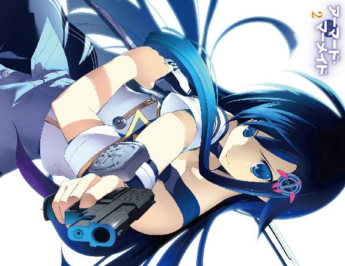

| アーマード・マーメイド2 (富士見ファンタジア文庫) | |
| 風見 周 | |
| (2013) | |



アーマード・マーメイド２
風見 周

富士見ファンタジア文庫
本作品の全部または一部を無断で複製、転載、配信、送信したり、ホームページ上に転載することを禁止します。また、本作品の内容を無断で改変、改ざん等を行うことも禁止します。
本作品購入時にご承諾いただいた規約により、有償・無償にかかわらず本作品を第三者に譲渡することはできません。
本作品を示すサムネイルなどのイメージ画像は、再ダウンロード時に予告なく変更される場合があります。
本作品は縦書きでレイアウトされています。
また、ご覧になるリーディングシステムにより、表示の差が認められることがあります。
口絵・本文イラスト 雅
なじかは知らねど心わびて
昔の伝説は、そぞろ身にしむ
寥しく暮れゆくラインの流れ
入日に山々、あかく映ゆる
美し少女の巖頭に立ちて
黄金の櫛とり髪のみだれを
梳きつつ口吟ぶ歌の声の
神怪き魔力に、魂もまよう
漕ぎゆく舟びと歌に憧れ
岩根も見やらず仰げばやがて
浪間に沈むる人も舟も
神怪き魔歌、詠うローレライ
ハインリッヒ・ハイネ
訳詩：近藤 朔風
第一章 汐崎旭の最大の敵
マーメイド──。
それは大地を喰らう怪物《陸喰い》に対抗しうる、唯一の存在である。
シーブリードと呼ばれる海戦用兵器を操り陸喰いを屠るのだ。
地球上の陸地の実に七〇％までもが陸喰いに食い荒らされ、わずかな地表に人工基地を設営して生活をしている人類にとって、マーメイドは希望そのもの。子どもたちの誰もが一度はマーメイドに憧れると言われている。
そんなマーメイドの養成学校である白鯨学園から。
一人の少年が脱出を試みていた──。
「へへへ、ちょろいもんだぜ」
とある六月の日曜日。午後三時。学園艦の中枢部を走る共同溝。
電気線やガス管、通信ケーブルなどが収められたトンネルを汐崎旭は駆け抜けていた。
オレンジ色のライトで照らされた坑内に硬質な足音が木霊する。長いトンネルに足音が反響して、幾重にも鳴り響いていた。
白鯨学園の象徴とも言うべき鮮やかな白の制服は、今や見る影もなく泥まみれだ。
学園艦への侵入者を防ぐため各所に警報装置が張り巡らされている。それらを回避するためにフェンスを乗り越えたり、ダクトを這いずり回ったり。アクション映画さながらに大冒険を繰り広げてきたのである。
（外部からの侵入者を防ぐ警報ってのは、得てして内部からの脱走者には弱かったりするからな......。おれの頭脳と身体能力をもってすれば、センサー網を搔い潜るなんてわけねえんだよ！）
自画自賛しつつ共同溝をひた走っていた旭は、ハシゴの前で立ち止まった。
コンクリートの壁面にＵ字形の鉄骨が並べて埋められている。
──よし。ここだな。
旭の持つ野生の勘が叫んでいた。
「このハシゴを登れば補給艦に近づけるはずだ......」
大きく一つ頷いて、旭は壁に埋められた鉄骨に手を掛けた。
所属する白鯨学園は太平洋上に浮かぶ巨大な船だ。マーメイドを育成するための訓練施設だけでなく、都市機能が丸ごと備えられている。
訓練が忙しくて旭はまだエイハブタウンには行ったことがないが、映画館やファーストフード店まであるそうだ。
そんな学園艦を運営していくためには物資の補給が欠かせない。燃料や食料が補給艦によって毎日のように学園へと届けられる。白鯨学園と外海とを繫ぐ、唯一の窓口とも言えた。
旭はそれに目を付けたのだ。
「......絶対に脱出してやるぜ！」
彼は補給艦に忍び込んで、白鯨学園から抜け出すつもりだった。
勘違いしないで欲しいのだが決して逃げるわけではない。
旭の夢は世界一のマーメイドになること。
難しい試験を乗り越えて、夢の入り口である白鯨学園にやっとの思いで入学したのだ。なにがあろうともくじけたりするものか！
「ただちょっと、緊急避難っつーかなんつーか......今は逃げねえと命がヤバいからな」
言い訳がましく呟いてハシゴを登っていった。
五メートルほどの縦坑を一気に登り、マンホールのフタを押し開ける。
共同溝からそっと顔を出して──旭は固まった。
びっくりしすぎてハシゴから転げ落ちなかったのは奇跡だと思う。とんでもないものが視界に飛び込んできたのである。
コンクリートと鉄骨で覆われた屋内型補給港。停泊中の巨大な補給艦の船体。クレーンで巨大なコンテナの積み卸しをしていた。
それらはまだいい。
旭の狙い通り、補給艦の近くに辿り着くことができたのだ。おれの読みは完璧だな！
旭を驚愕させたもの。あまりにも場違いな物体が眼前にあったのである。
──ぱんつだ。
ひらひらと翻るスカート。すらりと伸びた綺麗な脚。
そして、小さなパンダのマークがプリントされた可愛らしいぱんつ。
旭が顔を出したマンホールのすぐ横に、女の子が立っていたのだ。
「ウソだろ......」
驚愕の後に、絶望と恐怖が彼を襲った。
ガクガクと震えながら、ゆっくりと視線を上げる。
落ち着いた色合いのワンピースに身を包んだ黒髪の美少女だ。透き通るような黒瞳。白い肌。クールな美貌である。
こんな可愛い女の子のぱんつが見られるなんて一四歳の男子なら誰しも喜ぶ場面だろう。ラッキーだと思わないヤツとは、旭は友だちになれる気がしない。
しかし、今はその僥倖に浸ることもできなかった。
腕組みをした少女は般若のような形相で旭を睨め付けていたのである。
「やあ、旭。こんなところで会うとは奇遇だな」
冷たい声が針の雨のように降り注いでくる。
笑顔で答えようと思ったけれど頰が引きつってしまった。視線を泳がせつつ必死に声を絞り出す。
「ゆ、夕海......！」
彼女の名前は緋桜夕海。旭の幼なじみにしてクラスメイトだ。
「どうして、おれがここから出てくるってわかったんだ......？」
「おいおい、何年きみの幼なじみをやっていると思うんだい？ 旭の浅はかな考えなどわたしには全てお見通しだよ」
「補給港は生徒の立ち入りが禁止されてるはずだぞ！ ここまで来るのに、おれはすっげー苦労したのに！ どうして先回りできたんだよ!?」
「決まっているだろう？ わたしはきみのように不法侵入などしない。レキ先生に入場許可をもらったのだ。旭が逃走を図っているから捕まえたいと申し出てね」
レキ先生は旭たちの指導教官だ。旭の命の恩人でもある。《伝説のマーメイド》と呼ばれたレキ先生のようになりたくてマーメイドを志したのだ。
......昔の栄光がウソみたいに、今はぐーたらな人になっちゃってたけどな。
「レキ先生は快く入場許可を出してくれたよ。『あの馬鹿をとっ捕まえてこい。生死は問わないぞ』だそうだ」
「って、ひどいな！ 教師の言葉とは思えないぜ！」
夕海の額に血管が浮き上がった。片方の眉が吊り上がる。
「ひどいのはきみの方だ！ 学校から逃亡を図るなんて正気の沙汰とは思えない！」
「あのまま続けてたら命に関わるって！ 勘弁してくれよ！」
「うるさいうるさい！ さっさと宿舎に戻るぞ！ マンホールから出てこい！ 貴重な時間を無駄にするな！」
「............」
旭はハシゴに手を掛けたまま逡巡した。
さらに鋭い眼差しでこちらを睨んで幼なじみが問いかけてくる。
「うん？ なにか言いたそうな顔だな。言ってみるがいい」
「......わかった。観念して宿舎に戻るよ。ただ、最後に一言だけ言わせてくれ」
「聞いてあげよう。なんだね？」
「夕海って、思いのほか可愛いぱんつはいてるんだな」
幼なじみの下着なんかにヨクジョーしたりしない。ただ、ぱんつを見ちゃったのに黙ってるのも悪い気がしたので男らしく伝えておこうと思ったのだ。
「なっ......！」
スカートの裾を手で押さえて、頰を真っ赤に染める。
「制服のときは水着つけてっからいいけど、私服になったときは見えないように気をつけろよ。子どもっぽいぱんつだって笑われちまうぜ」
「余計なお世話だ！ この大馬鹿もの！」
「ぐぼあ!?」
──ぎゅむ!!
夕海の履く靴のかかとが顔面にめり込み、危うく縦坑から転げ落ちそうになってしまった。殺す気か！
×××
「あはははは！ あんた、バッカじゃないの!?」
三〇分後。宿舎。コレット・ルクレールの部屋。
エリザベス・マクマホンの笑い声が響き渡った。
クッションに座ったまま、リズはホットパンツから伸びる綺麗な両脚をジタバタさせた。オナカを手で押さえ金髪のツインテールを揺らして笑い転げる。
「テスト勉強するのがイヤだからって、学園から逃げだそうとするなんて旭らしいけど！ ダイナミックすぎるわよ！ あはははは！ ああ、おかしい！」
そう──旭が白鯨学園から脱走を試みたのはテスト勉強が辛すぎたためなのだ。
過酷な勉強について説明する前に、まずは白鯨学園の成績のつけかたについて説明しよう。
マーメイド候補生たちには、『実技ポイント』と『筆記ポイント』の二つの点数がつけられている。
実技ポイントは、クラスごとに行われる実技演習の習熟度や、セルミッションでの貢献度などによって増えていく。陸喰いと実際に戦闘をする討伐ミッションで有効なダメージを与えると一〇点獲得、ぼんやり見ているだけだと五点しかもらえない──と言った具合。余談だが、先日対戦したサメ形の陸喰いは『ハイド・バイト』と名付けられたそうだ。陸喰いの強さを示すレベルは一八。ミッションは失敗の扱いだったが、高レベルの陸喰いを倒すことができたために二〇ポイントが加算されていた。
そんな風にして、実技ポイントは増えていくのである。
そして、筆記ポイント。こちらは座学の授業での取り組み方や小テストの結果、そして筆記試験での点数が加算されていく。
実技と筆記、両方のポイントを合計して学期末に成績がつけられるのだ。
んで。
入学から二か月あまり。初めての大型テストが行われることとなった。
その名も『第一関門』。
各学期ごとに計三回テストが行われるために、そんな名前がついているらしい。
第一関門では、筆記試験と実技試験が行われるそうだ。この結果は、実技と筆記のポイントに割り振られる。普段の成績が悪いものにとっては、大幅加点のチャンス！
おれがどれぐらい成長したのか、バッチリ見せつけてやるぜ!!──なあんて豪語したいのはやまやまなのだが。
旭はとにかくもう筆記試験が苦手だった。マーメイドになりたい一心で必死に勉強したにもかかわらず、白鯨学園への入学を掛けた選抜試験『ポセイドンテスト』において不合格になってしまったほどだ。
シーブリードの操縦訓練に明け暮れていたせいで、座学の内容なんてまるで頭に残っていない。このままでは筆記試験の点数が大惨事になるのは目に見えていた。
それを危惧した夕海が旭に無理矢理に勉強を強いて。
彼女の課す猛勉強があまりにも辛かったために、旭はついつい逃避行動に出てしまったという次第である。
もう二度と逃げ出さないよう旭の身体はロープで縛られ、手にはテープでペンがくくりつけられている。脱出ショーに挑むマジシャンのような体勢で旭は大笑いするエリザベスを睨んだ。
「笑うなよ。つうか、人聞きが悪ぃこと言わないでくれ。別におれは逃げようとしたわけじゃねえ！ ......さっきのはアレだよアレ！ 戦略的撤退ってヤツだ！」
すると、隣に座って勉強していた夕海がジト目をした。うわ。目付きが超怖い。
「戦略的撤退などと言う言葉は進軍をしている者が言うべきだ。きみはちっとも勉強をしてないではないか！ 問題集もまるで解けていないし！」
「勉強はしてるって！ 結果に結びついてねえだけだ！」
「それじゃ意味がないだろう！」
夕海が旭のこめかみを拳でグリグリする。痛たたたたっ！ 暴力反対！
対面に座っているコレット・ルクレールがテーブルに置かれたマドレーヌをパクつきつつ、首を捻った。ふんわりと長い髪が揺れる。
「どうして汐崎くんは、筆記試験がそんなに苦手なんでしょうね？」
「決まってるじゃない。バカだからよ」とエリザベス。
「ですが、こんなに美味しいお菓子を作ることができるじゃないですか。もぐもぐ......」
コレットが食べているマドレーヌは、旭が作ったものだ。彼の趣味はお菓子作りなのである。
今日の勉強会のために用意したものだ。
あらかじめタネを冷凍してあったので、ちょっぴり手抜きとも言えるが......焼きたては抜群にうまいと思う。
エリザベスもマドレーヌを一口頰張る。ツンケンとしている顔が幸せそうに蕩けた。
「ん～っ♡ コイツの作るお菓子は美味しいわ。それは認めてあげる」
「複雑なお菓子作りのレシピは暗記できるのですから、教科書の内容が覚えられないはずはないと思うのです」
「うーん、言われてみれば確かにそうね......」
「それに、先ほどは学園艦のセンサー網をかいくぐって補給艦まで辿り着いたんですよね？ 誰にも見つからずに」
「おう！ 警報も鳴らなかったぜ！」
旭は侵入経路について簡単に説明をした。運動場の脇にあるフェンスを乗り越え、倉庫の裏手を抜けて、共同溝へと向かう──そんな脱出ルートだ。
呆れたようにリズは口をぽかんと開けて。
「よくもまあ、そんな脱走方法を思いつくわね......」
幼なじみも辟易とした調子で肩を竦める。
「私も旭の地頭は悪くはないと思うのだ......。だが、いかんせんそれを活かせていない」
「おいおい、そんなに褒めるなよ。照れちゃうだろ？」
「褒めてない！ きみの《脳みそ筋肉》っぷりに呆れているのだ！ ほら、全然ペンが動いてないぞ！ 問題集を解きたまえ！」
夕海は手のひらでテキストを叩く。
現在は海洋法の勉強中だ。シーブリードの運用に関するルールが事細かく法律で決まっている。
「こんなの無理だよ......。覚えられる気がしねえ......」
テキストに連なる難しそうな文字列を見て、旭はゲンナリとしてしまった。
「はぁ......。白鯨学園に入れればいつでもシーブリードに乗れて、陸喰いもぶっ倒しまくって......楽しい毎日が待ってると思ったんだけどなあ。むしろ、辛いことの方が多いじゃねえかよ......」
旭が弱音を漏らすと、エリザベスが「はっ」と呆れたように声を上げた。
「どうせあんたのことだから、『ぼくちゃんがヒーローになってみんなに賞賛されちゃうぜー』ってシーンばっか夢想してんでしょ？」
「そ、そんなことねえって！ つか、なんだよ『ぼくちゃん』て！」
......大活躍する自分の姿を妄想していないと言ったら、ウソになりそうだけど。
エリザベスはツインテールを手で払って。
「自分の好きなことだけやってたら夢が叶っちゃうなんて、世の中そんなに甘いわけないわよ。どんな世界でもきっとそう。外から見ている分には華やかで楽しそうでも、実際に自分がそのステージに立ったら辛いことも多いはずよ。この世界にいるありとあらゆるヒーローは、そういう地味な苦労を乗り越えてきてんの。そんなこともわからないの？」
派手な外見とは裏腹にエリザベスは努力家だ。そんな彼女らしい言葉だと思った。
「わ、わかってるっつーの！ おれは世界一のマーメイドになるんだ。そのためだったら、どんなことだってやってやるさ！」
「ていうか、『世界一のマーメイド』ってよく言ってるけど、実際んとこなにが世界一なのよ？ 陸喰いの討伐数とか？」
「え？ いや、おれは詳しくはわかんねーけど......とにかくすごいマーメイドになるんだよ！ どんな陸喰いもどーんってやっつけちまうんだ！」
「あっきれた。なんにも考えてないじゃない......。もういいわ。勉強しなさいよ」
ノートに向かおうとするのだが、途端に頭痛がしてきた。
海洋法の条文なんて、ちっとも頭に残らない。目から得た情報が、脳を経由せずに耳からこぼれ落ちている気がする。
「うう......勉強も大切だけど......実技試験の練習もしようぜ！ おれは実技試験で取り返すから、筆記試験がちょっとぐらい悪くたって問題ねえよ！ なにせ牙音砲も成長したしな！」
旭のシーブリードに装備された主砲──牙音砲。
音しか出ないと思っていた大砲から、強力な衝撃波を繰り出すことができるようになったのだ。
トリガーを引き続ければ、音波の強さを変えられる。
やがて音波は可聴域を超え、激しい音の波によって対象を打ち砕くのだ。
だが、夕海は一笑に付した。
「主砲レベルＦがＤになっただけだろう？ 実戦では使うのは難しいよ」
「そうなんだよなあ......」
担任のミーネ先生に頼んで、もう一度主砲の登録をしてもらった。
結果、主砲レベルはＤ。
戦闘能力皆無という意味合いのレベルＦよりはマシだ。
だが、出力は高いものの使いづらいという悲しい判定が下された。
というのも、成長した牙音砲には大きな欠点があることがわかったのだ。
あまりにも燃費が悪かったのである。
そもそも、陸喰いと戦うための海洋戦闘マシンであるシーブリードは、海中に漂うナノマシン《ＳＯＬＴ》がマーメイドの身体に集まることで装着される。
ＳＯＬＴはＴエナジーと呼ばれる力によって凝集しており、そのパワーは主砲の発射だけでなく、シーブリードの航行やシールド効果を発揮する際など、あらゆる場面で消費される。つまり、Ｔエナジーは燃料であり、弾薬であり、装甲なのだ。
ＴエナジーがゼロになるとＳＯＬＴの凝集が解け、マーメイドは海に投げ出されてしまう。
で。
旭の牙音砲の出力を上げると凄まじい破壊力が生まれるのだが──反面、Ｔエナジーを大きく消耗してしまうことがわかった。
超音波による砲撃を一発撃つごとに、およそ二〇％ものＴエナジーを失う。
セルミッションではＳＯＬＴの残量が五〇％を切った時点で訓練失敗となる。実戦ではあまりにも使いづらかった。
わずかに視線を和らげて、夕海はフォローするように言った。
「まあ、きみの戦闘力が皆無だとは言うまい。だが、第一関門で行われる実技試験はとても難しくて有名なのだ。筆記試験でも地道に点数を増やすよう努力すべきだよ」
「というか、実技試験ってなにをするんだ？ おれ、知らないんだけど」
「わたしたちは入学直後のオリエンテーションで説明を受けている」
「だから、おれはオリエンテーションを受けてないんだって。中途入学だから」
「うむ。レキ先生の判断で、きみにだけは実技テスト内容を教えないことになったそうだ」
「はあ!? なんでだよ!? 実技試験、超楽しみにしてるのに！」
今度はコレットが「はぁ」と呆れたように吐息を漏らした。
「旭くんらしいですねえ。実技試験が楽しみだなんて。第一関門は難易度が高くて、危険も大きいのです。大半の生徒は実技試験の方が嫌だと思っているはずですよ。私も怖くて仕方がありません」
「難しくて、危険がいっぱいなのか......。うわあ、すげえドキドキしてきた！」
思わず興奮してしまう旭の後頭部を夕海が叩いた。
「そんな風に実技のことばかり考えてしまうから、きみにはナイショにしたのだと思うよ。今は筆記試験に集中したまえ！」
「うふふ。ファイトですよ、汐崎くんっ！」
コレットが両肩の辺りでグーを作って、旭を応援してくれた。
「少しでも楽しくお勉強するために、こうして集まっているんです。わからないところがあったら聞いてくださいね！」
冷たい雰囲気の夕海や、ツンケンしたエリザベスとは違い、コレットは優しい雰囲気の美少女。ふんわりとした長い髪がよく似合ってる。笑顔を浮かべているだけで、周囲の空気が仄かに暖かくなるような気さえした。
コレットの隣で、エリザベスは嫌そうに小さく舌を出した。
「付き合わされる身にもなって欲しいわね。本来ならあたしはこんなくだらない勉強会になんて参加する必要ないのよ。普段からちゃんと勉強をしてるしね。テストでイイ点数をとって、気分良く『テストフェス』を楽しむ予定だったのに......」
「テストフェス？ なんだよ、それ？」
旭の問いに、幼なじみが頷いた。
「ああ、そうか。『テストフェス』の説明もオリエンテーションのときにされたのだったな。白鯨学園の試験には『テストフェス』と呼ばれるイベントがつきものなのだ。......筆記試験が無事終わったら教えてやる。とても楽しいご褒美があると思っておけ」
「無事に終わるとは思えないけどね～」
エリザベスが相変わらずイジワルなことを言う。
「まあ、せいぜいあがきなさいよ。勉強会なんて馬鹿馬鹿しいけど......あんたの苦しむ顔が見られるのは楽しいわ」
「うふふ、そんなことを言うわりに私の提案に従って、私服で来てくださってるのがリズさんの優しいところですよね」
今日は私服で勉強会をしましょう！ 気分が変わって捗っちゃうかもしれませんよ？ 私の部屋に集合です！──コレットからそんな提案があったのだ。
学校内の施設を使う場合は、基本的に制服の着用が義務だ。だが、宿舎内なら私服でいるのもＯＫである。
旭も汚れた制服を着替え、Ｔシャツ＆ジーンズというラフな格好になっている。
と、コレットはサマーセーターに包まれた大きな胸を旭の方に突き出した。
身体にぴったりとフィットしたセーターが、たゆんと揺れる。
「勉強に疲れたら、私の胸をチラチラ見ても構いませんよ？」
「なななな、なに言ってんだよ、コレット!?」
「汐崎くん。こーゆーの、お嫌いですか？」
二つの膨らみを抱えるように腕組みをして、コレットはウインクをする。
き、嫌いじゃないですケド......。
旭はなにも言い返せなくなってしまう。顔が赤くなっているのが自分でもわかった。
コレットはおしとやかそうな外見とは裏腹に、微妙に下ネタ好きなのだ。
ああもうっ、そういうドギマギしちゃうような冗談はやめてくれよ。
そんな旭の心の叫びに気付かず、コレットは攻撃を続ける。
「私のおっぱいに飽きたら、リズさんの美脚を堪能するのもいいですね～♪」
エリザベスはホットパンツ＆ぴったりしたミニＴシャツという格好だ。大胆に露出したナマ足は確かに美脚と呼ぶに相応しい。
でも、そんなこと言われたら目のやり場に困っちまうじゃねえか！
クッションにアヒル座りしたままの体勢で、エリザベスはふとももを手のひらで隠した。ほっぺがピンク色に染まっている。
「ちょっと、旭！ ヘンな目で見るんじゃないわよ！」
「み、見てねえって！ おまえの脚なんて興味ねえし！」
「興味ないとか言われるのもムカつく！」
「だったら、どう言えばいいんだ!?」
追い打ちを掛けるように、コレットは言葉を重ねる。
「うふふ、夕海さんの服装もとっても可愛いですよね。なんだか気合いが入ってます。そう思いませんか、汐崎くん」
隣に座っている夕海を見やる。幼なじみはワンピースを着ていた。剣吞な目付きをしていなければ、おしとやかなお嬢さまに見えなくもない。
ペンのくくりつけられていない左手で旭は頰を搔いた。
「......まあ、確かに可愛い格好だと思うけどさ」
「か、かかか、可愛いだとっ!?」
旭の言葉を聞いた瞬間、夕海の顔が真っ赤になってしまった。耳の先まで朱に染まってる。
「お、おかしなことを言うなっ」
恥ずかしそうに幼なじみは視線を背けた。なぜだかわからないけれど、ほっぺがヒクヒクしている。まるで嬉しさを嚙みしめているみたいだ。
「ちょっと！ 興味ないって発言は取り消しなさいよ！」
エリザベスは消しゴムやらペンやらを投げつけてきた。ロープで縛られているから、避けることができずに顔面にヒット！ って、おい！ コンパスはやめろよ！ 本当に危ないから！ あだっ！ 痛っ!?
「か、勘違いするな！ こんな格好をしているのは、旭のためじゃないからな！ たまたまだ！ あまりこっちを見るんじゃないぞ！」
真っ赤に頰を染めたまま、夕海はヒジ鉄を喰らわしてくる。脇腹にヒジが入ってこっちも地味に痛ぇ!?
コレットはポンと手を叩いて、軽やかな声で言う。
「さあ、テスト勉強を頑張りましょう！」
「で・き・る・か──っ!!」
そんな風にして、勉強会は進んでいった。
問題集のあまりの難しさに旭は頭を抱え、隣で夕海は心配そうに見つめていた。
だが、コレットはいつも通りニコニコ。早々に問題集を解き終えたエリザベスは、余裕の表情でマドレーヌを頰張っている。
温度差はありつつも、勉強会は概ね和気藹々と進んでいった。
しかしながら──ピコン!!
勉強会の開始から一時間ほどが経過した頃、コレットの羅針儀にメールが届いた。
羅針儀とは、マーメイド候補生が持つ情報端末だ。作戦行動中に海図や敵の情報を表示させるだけでなく、仲間同士で連絡を取ることもできる。
「あら？ ミーネ先生からのボイスメールですね」
ミーネ先生は、旭の所属する一年Ｅ組の担任だ。
コレットは手首につけた羅針儀を機動させた。空中にモニターが表示される。
ほどなくミーネ先生のオドオドした声が部屋に響いた。
『み、ミーネです。えーっと、第三二セルのリーダーであるコレットさんにメールしてます。汐崎くんはちゃんと勉強してらっしゃいますか？ ハッキリ言って、汐崎くんの成績はヤバヤバです。というのも、これまでの小テストで、汐崎くんは立て続けに〇点を取っちゃってるんです。筆記ポイントの合計は八二点ですね』
「は、八二......だと......？」
八二点というと意外と高そうな気もする。だが、筆記ポイントは一学期の間に行われた小テストなどの点数が全て加算されるものだ。分母は七二〇点。つまり、正確に言うなら『七二〇点満点中の八二点』である。
夕海がギロリと睨み付けてきた。旭は慌てて目を逸らす。
これまでに何度か行われた小テスト。夕海には『まあまあの点数だったぜ！』と伝えてあったのだ。〇点取ったなんて知ったら、絶対にどやされるに決まってるし。
なおもミーネ先生のボイスメールは続く。
『このままじゃ第一関門でも〇点を取っちゃうんじゃないかと、先生はとっても心配してます。もしも第一関門の結果が悪かった場合は追試になります。それでも、合格点に満たなかった場合は......そのまま退学になることもあり得ます。白鯨学園には留年の制度がありませんからね』
「た、退学だと......？」「そんなに厳しいのかよ......！」
旭と夕海のうめき声が重なった。
ミーネ先生はさらに恐ろしいことを伝えてくる。
『なお退学者が出た場合は、同じセルにいたメンバーも面倒なことになるんです。セルの組み替えですとかね。しばらくセルミッションを受けられなくなりますから獲得点数も減っちゃうことになりますよ。汐崎くんがちゃんとお勉強するようにコレットさんからも言っておいてくださいね。......ああもう、初めて受け持ったクラスなのに、退学者が出ちゃうかもしれないなんて......どうして私ってツイてないのかしら......』
最後の方は愚痴になって、そのままボイスメールは終わった。
コレットの部屋に、不気味な静寂が漂う。
たっぷりと一分は続いた沈黙を破ったのは、エリザベスだった。
旭の前に仁王立ちしたクラスメイト。華奢な身体から真っ赤に燃える怒りのオーラのようなものが吹き上がった。金髪のツインテールをヘビのようにのたくらせる。
「あんたの点数が悪かったら、あたしたちにもペナルティがあるってこと......？」
続けて、夕海が旭の前に立った。腕組みをしてこちらを睨む幼なじみの背後から吹雪が吹き付けてくる気がした。それほどに冷たい雰囲気を漂わせて。
「小テストで〇点を取り続けていたなんて、初耳だぞ......？」
コレットも旭の前に立って、大きな胸の前で祈るように両手を組み合わせた。くりっとした瞳が涙に潤む。
「汐崎くんが退学になってしまうかもしれないなんて......第三二セルのリーダーとして許せません！」
そして、三人の声が重なった。
「「「お勉強しなさ～～～～～いっ!!」」」
第一関門開始まで、残すところ一週間。
地獄のテスト週間は、こんな風にして幕を開けたのである──。
×××
翌日の月曜日。白鯨学園の理事長室。
大きな樫材の机。制服を着た生徒が革張りの執務椅子に足を組んで座り、大海原を悠然と眺めていた。
レキ・サザンハートが入室をしても、こちらを向くようすはない。というか、ノックをしても返事すらなかった。
沸々とわき起こる苛立ちを堪えて、レキは踵を鳴らして敬礼をした。右足に装着した義足がガシャリと音を立てる。
「理事長代理どの、レキ・サザンハート。ただいま、はせ参じました。どういったご用件でしょうか？」
テストフェスの準備でクソ忙しいってのに、いちいち呼び出すんじゃねえ！──と心の中で続ける。
理事長代理は、こちらを振り向こうともせずに一枚の封筒を執務机に放り投げた。
封筒の中から書類やロムディスクが飛び出す。書類には汐崎旭やエリザベス・マクマホンの写真が貼られていた。
「『ハイド・バイト』と名付けられたそうですね」
「ああん？」
「第三二セルが戦った、サメ形のＵＮＫＮＯＷＮですよ」
汐崎旭たちは、護衛ミッション中に高レベルの陸喰いに遭遇した。二匹一組で活動し、超高速の牙攻撃を仕掛けてくる。
「ああ、アイツか。相変わらず、世界政府のネーミングセンスはひでえな」
理事長代理は含み笑いをしながら、小さく頷いた。
「そうですね。僕もそう思います。......しかし、第三二セルのバトルログの内容は素晴らしいものでした。解析結果によれば、ハイド・バイトはレベル一八。訓練をはじめたばかりの一年生には、到底倒せるはずのない陸喰いです」
それに関してはレキも同感だった。旭たちは喰い殺されていてもおかしくない。
「救援部隊の到着を遅らせていたからな。汐崎は恐ろしく出来の悪い生徒だが......一応は教え子だ。あのバカがおっ死んでたら酒がマズくなるところだったぜ」
「レキ先生。あなたは僕の命令に従っていただけなんです。たとえ彼らが死んでも、気に病む必要はありませんよ」
理事長代理はゆっくりとこちらを振り向いた。
男性生徒の制服を身に纏った理事長代理は、薄笑いを浮かべていた。
マーメイドとして活躍していた頃、レキ・サザンハートは《伝説のマーメイド》などと呼ばれた歴戦の勇士である。そんな彼女ですら、理事長代理の表情を見て背筋が冷たくなるのを感じた。
まるで仮面を貼り付けたかのような、無感情な笑みを浮かべていたのだ。
（コイツに比べりゃ、陸喰いの方がずっと表情豊かだぜ......）
「彼らの奮闘を称えて、実技ポイントの点数も大奮発されたようです。ミッション失敗にもかかわらず二〇点が加算されたとか。まったくモービーディックも甘いですね。ただまあ、それだけ彼らの戦闘は素晴らしかったと思いますが。特に......」
理事長代理は、机に散らばった書類──汐崎旭の写真を指さした。恐らく、マーメイド候補生として登録するため、入学直後に撮られた一枚だろう。公式な写真だってのに、汐崎旭は満面の笑みを浮かべていた。白鯨学園に入れたのが嬉しくて仕方がない。そう言いたげな笑み。
理事長代理とはあまりに対照的な笑顔だった。
「汐崎旭は素晴らしいですね」
「そのバカのどこが素晴らしいって？ おまえの目は節穴かよ」
「いちいち彼を庇わないでください。件の戦闘において汐崎旭が特異であったことは、レキ先生もわかっているでしょう？」
理事長代理は書類を指先でなぞった。『主砲レベル』と書かれた項目で指を止めて。
「彼は白鯨学園に入学して、たった二か月しか経っていないというのに......主砲を成長させたのです」
主砲の成長というのは、本来は訓練に訓練を重ねなければ発生しない。
ミッションの途中で突発的に成長するなんて前代未聞だ。
「彼だけでなく、第三二セルの面々もなかなかに優秀なようだ。レキ先生、《魔女計画》を完遂するため、次は彼らを試そうと思います。異存はありませんね？」
「......ああ、ねえよ」
「それはよかった。彼は先生のお気に入りのようですから、反対されるかもしれないと思っていたんですよ」
なにか言い返そうと思ったが、レキは言葉を飲み込んだ。
代わりに鼻からため息を吐く。
理事長代理はクスクスと笑って、再び海を眺め始める。
「では、粛々と準備を進めてください」
一礼をして、レキは理事長室から出た。
扉を閉め、廊下に立った刹那──
ふいに右足の先がうずいた。
陸喰いに喰われて、既に右足は失われている。
これは──幻肢痛だ。
「テストフェスの楽しい雰囲気がブチ壊しだぜ、くそっ」
幻の痛みに顔をしかめつつ、レキは理事長室を後にした。
第二章 正しいテストの乗り切り方
汐崎旭は、友達が多かった。
根が明るくてお調子者なせいか、小学校や中学校の頃は旭の周りに男友達が群がっていたような気がする。愉快な仲間としょっちゅうおバカなことをしていたっけ。旭が住んでいた第三地区の水路をお手製のイカダで下って海を目指してみたり（親にバレて死ぬほど怒られた）。女子更衣室を覗きたいという友人に協力して中学校の屋上からロープで降下してみたり（夕海にバレて一週間ほど口を聞いてもらえなかった）。
間違いなく、旭は友達が多かった。
しかし、残念ながら、それは過去形である。
白鯨学園にはそもそも男子生徒が少ない。男女比は一：九。旭のクラスにも男子は五人ほどしかいなかった。
補欠合格だった旭は他の生徒よりも一〇日間ほど入学が遅かったせいもあって、なかなか男子生徒と友達になるキッカケをつかめなかったのだ。
第三二セルの仲間たちがいるから休み時間にヒマをもてあますということはなかったのだけれど......バカ話のできる男友達がいないというのはやはり辛いものである。入学からしばらくは寂しい思いをしていた。
しかし、マーメイド候補生となって二か月ほどが経った、今。
旭はクラスの男子生徒全員と仲良くなっていた。
特に仲がいいのは──
金曜日。筆記試験まで後三日と迫った昼休み。一年Ｅ組の教室。汐崎旭の席。
座学の授業を終えた旭の前に、巨大な壁──かと見紛うばかりの大男が立ち塞がった。
金色の短髪。糸のように細い目。角張った顔立ち。割れた顎。
胸板が分厚くて広い。手足も逞しくて、二の腕の太さなど旭の胴回りぐらいはありそうだ。身長は一九〇センチあるらしい。
旭と同い年の一四歳とは思えないほどのガタイの良さだった。『この男は世界政府が陸喰いを屠るために設計したサイボーグ戦士なのだ！』とか教えられたら素直に信じそう。というか、耳を澄ましたらウィ～～～ンなんて機械の作動音が聞こえてきそうな気がする。
彼の名は、セルゲイ・アンドロポフ。旭のクラスメイトだ。
「同士よ。ちょっといいか？」
セルゲイは声を落としていた。元々ドスの利いた声が、ますます渋く聞こえる。
旭は彼のようすからただならぬ気配を感じ取った。声を潜め、辺りを慎重に窺いながら尋ねる。
「......ひょっとして、例のブツが？」
「ああ、ようやく手に入った。ルッツのヤツも首尾良くやったようだ。カバンを持ってついてこい」
セルゲイは無表情のまま立ち去った。振り返りもせず教室を後にする。
大きく心の中で一〇を数えた後で、机の脇に掛けてあったカバンを手に取った。逸る気持ちを抑えながら教室を出る。
校舎の端。廊下の隅の人気のない場所にセルゲイと、もう一人の生徒が待っていた。
手の甲で銀縁メガネを上げながら、少年が気さくに声を掛けてくる。
「やあやあ、旭くん。よく来たね」
セルゲイとはあまりにも対照的な華奢な美少年だ。旭もガタイが良い方ではないが、輪を掛けて彼は細っこい。
しかも、女の子みたいに綺麗な顔立ちをしていた。ωっとした唇。肩まである銀色の髪も、どことなく女っぽい気がする。
彼の名はルッツ・ブロムベルグ。
セルゲイとルッツの二人は、一年Ｅ組のクラスメイトの中でも特に仲のいい男子生徒であった。
ちなみに。
大柄なセルゲイの操るシーブリード《ガングート》は、エイを模したような流麗な機体。主砲は遠距離狙撃を得意としている。
小柄なルッツのシーブリード《シュトゥーラー》は、鎧魚のような無骨なフォルム。強烈なパンチで陸喰いを屠る超近接型だった。
彼らは体型や雰囲気とは似ても似つかない点が面白い。
セルが違うから一緒に戦闘に出たことはないけれど......いつか一緒に陸喰いと戦ってみたいと旭は常々思っていた。
閑話休題。
首を巡らせて執拗に周囲を窺った後で、声を落としつつ旭は二人の悪友に尋ねた。
「それで例のものは手に入ったのか？」
「実に苦労したぞ」「バッチリだよ」
セルゲイとルッツは、同時に大きな紙袋を取り出した。旭の胸元に押しつけてくる。
「うひゃー！ ありがとう、心の友よ！ 恩に着るぜ!!」
感涙にむせびながら、旭は二つの紙袋をカバンの奥底へと大事にしまいこんだ。
セルゲイは糸のように細い目をさらに細めて。ルッツは唇をもにもにさせて。
とても優しい顔で語りかけてくる。
「気にするな、同士。旭の筆記試験がヤバいことは俺も理解している」
「テスト勉強、頑張ってるみたいだねえ？ 日に日にやつれてるし」
ルッツは女の子のように細い指で旭の頰をプニプニと突っついた。
「ああ、このところ毎日徹夜だよ。覚えることが多すぎて頭がヘンになりそうだぜ」
第三二セルの面々によって、旭は強制的に勉強をさせられていた。放課後はみんなで一緒に勉強をさせられるのだ。
宿舎の部屋に帰ってからは勉強漬けの生活から解放されるかと言ったら、そんなことはなかった。サボっていないかどうか確認するため、一時間おきにセルメンバーから羅針儀で連絡が入ってくる。しかも、翌日には自習用のノートもチェックされるため手を抜くことができない。
一生のうちで、これほどまでに勉強したことはないんじゃないかってぐらいに勉強をしている気がする。
「無茶はするなよ、同士」
「僕たちにできることって言ったら、息抜きのネタを貸してあげることぐらいだけどさ。一緒に頑張ろう！」
「くうううっ！ イイヤツだな、おまえら～！」
感動のあまり二人に抱きついた。持つべきものは友だちだなあとしみじみと思ってしまう。
と、そのとき。
「──ッ!?」
セルゲイの糸目がカッと見開かれた。金色の髪と同色の瞳がなにかを見据えている。バトルサイボーグが戦闘モードに切り替わった瞬間みたいだと旭は思った。
「どうしたのさ、セルゲイ？」とルッツが問う。
「二年生のシャオ・リン先輩だ」
旭と同じ東洋系の女生徒が廊下の先を歩いていた。腰まである長い三つ編みが特徴的な美人だ。彼我の距離は三〇メートルはあろうか。
こめかみの辺りに指先を当て、セルゲイは眼球に内蔵されたスコープを働かせている──と言われたら信じてしまいそうなポーズを取った。
「......な、なんということだ！ シャオ先輩の胸が一月前と比べて二ミリも大きくなっている！」
「こ、この距離からでもわかるのかよ!?」
「我々の業界では一般的な技能だ」
「どこの業界だ!?」
わかっていても、思わず旭はツッコミを入れてしまった。
このセルゲイというクラスメイト。彼はデカイ図体にもかかわらず、貧乳が大好きなのだ。平らな胸の女の子をこよなく愛している。
セルゲイのまぶたが再び閉じられた。糸目のまま、首を横に振る。
「シャオ先輩は『白鯨学園の愛され貧乳ランキング♡』において、一〇位以内に入る強者なのだ」
「というか、誰が調べたんだよ、そんなランキング！」
「俺調べだ」
セルゲイはあくまでも真顔だった。
「二ミリも大きくなってしまうなんて......由々しき事態だぞ」
その言葉を聞いて、「クククク......」とルッツが悪者じみた笑い声をあげる。銀縁メガネのレンズがキラリと輝いた。
「『成長期』ってのは、常に僕らの業界の味方だからね」
小柄で華奢なルッツは、大柄なセルゲイとは正反対の趣味を持っていた。
彼は無類の巨乳好きなのだ。
操るシーブリードの外見といい、好きなおっぱいのサイズといい。コイツらって、なぜかルックスのイメージと真逆なんだよな......。いやまあ『大男は巨乳好きじゃなきゃいけない』なんて決まりはないんだけど。凄まじいギャップみたいなものを感じる。
「僕の調査によれば、我が校が誇る『五大巨乳』の五人目、三年生のイサベラ先輩は今年に入ってから三センチもバストサイズがアップしたんだ。実に素晴らしいよ！」
「誰が決めたんだ、『五大巨乳』って！」
「僕調べだよ。学校中の女生徒のバストサイズを把握しているからね！」
ルッツは胸を張った。なぜ自慢げなのかは、よくわからない。
そこで、巨乳好きのクラスメイトは大きなため息を吐いた。
「......ただ五大巨乳のうち、二位から四位の順位ががらりと変わりそうなんだけどね」
「おまえもか？ 俺も『白鯨学園の愛され貧乳ランキング♡』が大幅に変更を余儀なくされそうなんだ」
二人とも、ひどく浮かない顔をしていた。
「おれにはよくわからないんだけど......む、胸の大きさのランキングなんて、それほど変動しないんじゃないか？」
ある日突然、膨らんだりしぼんだりするとも思えない。
旭の問いにルッツは辛そうに唇を嚙んだ。
「僕が『五大巨乳』の二位に選んだのは、一年Ａ組のリアンナさんだ。そして、三位は二年のドロシー先輩。......二人ともミッションの途中で怪我をしちゃったらしくて入院しているんだよ。レベルＳの主砲を持つ成績優秀な生徒なのにさ」
「うわ。マジかよ？」
レベルＳってのは主砲レベルの最上位だ。一年生にはわずか四人しかいない。
「俺も同じだ。素晴らしい貧乳を持つ才色兼備なマーメイド候補生たちが、次々と陸喰いとの交戦中に怪我をして学校を休んでいる。これを人類の損失と言わずして、なんと言おうか！」
腕を広げて天を仰ぎ、セルゲイは大いに嘆いた。
......そういえば、ミーネ先生もそんなこと言ってたっけ。
ＨＲの時間に、担任が『最近はミッション中の事故がとっても増えています。みなさんはくれぐれも気をつけてくださいね。......特に、汐崎くん！ あなたは無茶をしないように！ あんまり危険なことをしたら、先生泣いちゃいますからね？ ね!?』なあんて言われた気がする。
マーメイドというのは危険な怪物と戦う職業だ。実戦形式で訓練を積むマーメイド候補生たちにも事故はつきまとう。
特に最近は徹夜続きだから、シーブリードに搭乗したら事故を起こしやすそうだ。
まあ、幸いというか、なんというか。
テストが目前に迫ったことで、数日前からセルミッションは休止となった。午後の時間は各自、テスト勉強に当てることになっているのだ。だから討伐ミッションに出ることもないんだけどな。
「幸い命に関わる怪我をした女生徒はいないようだが......心配だな」
「そだね。おっぱいの大きな女の子は、貧乳と違ってその場にいるだけでみんなに幸せを届けるからね。一秒でも早く学校に復帰して欲しいよ」
「待て、同士ルッツよ。今の発言は聞き捨てならないぞ。貧乳の少女こそが、この穢れきった世界を浄化するのだ！ その清らかさがわからぬとは、おまえは子どもだな」
「『大は小を兼ねる』って言葉を知らないの？ 貧乳なんて、所詮は巨乳の劣化版にすぎないんだ！」
「巨乳好きというのは即物的でいかん。ささやかな膨らみが持つ、野に咲く一輪の花にも似た貧乳の侘び寂びをどうして理解できないのか」
「大きなおっぱいには夢が詰まっているんだよ！ 大きいことは良いことだ！」
「ちっちゃいのは可愛い。そして、可愛いは正義だ。それが世の理だろう？」
睨み合いをする両者に、旭は割って入った。
「お、おい、二人とも。ケンカはやめろって！ 大きくても小さくても、胸は胸だろ？」
ギヌロ!!──クラスメイトが同時に睨み付けてきた。
「そういう旭はどっちが好きなのさ？」「よもや巨乳好きとは言わぬよな、同士」
うわ、矛先がこっちに向いた!?
「えっ？ おれはあんまり、む、胸とかで判断しねえし......。つーか、そんなとこあんまり見てねえよ」
旭だって、女の子には大変興味がある。しかし、いざ口に出すのはいささか照れくさかった。
「お、おれは大きすぎず、小さすぎず......ほどよいサイズがいいと思うけどな」
そう答えた途端に。
「「......けッ!!」」
二人同時に呆れたような声を出された。
「巨乳と貧乳、どっちが好きだ？ そう問われて『美乳が好き』と答えるのは最も不適切な返答だぞ、同士よ」
「そうだよ。『甘いのと辛いの、どっちが好き？』って聞かれて『美味しいのが好き！』とか言っちゃうのと同じさ！ 問題の趣旨をまったく理解していないね！」
あっれ？ なんか、すごい怒られてる!? どうしておれが怒られるんだ!?
悪友二人は耳打ちをして、「これは再教育が必要だな」「訓練棟の『水練プール』に連れて行こうか。あそこなら水着が見放題だし」「ほほぅ、水練プールに目をつけるとは。なかなかやるな、同士ルッツ」なあんて密談をはじめる。ケンカしてたかと思ったら、超仲良しじゃねえかよ、コイツら。
おっぱい好きーの怒りを鎮めるために、旭は話を逸らしてみることにした。
「と、ところで、聞きたいんだけどさ」
「なんだ、同士よ」
「『五大なんとか』やら『愛されなんとかランキング』を決めてるって言ってたよな？ 一位ってのはいったい誰なんだ？」
先ほどから二位以下については話題に上っている。だが、一位は謎のままだった。気になったから尋ねてみることにしたのだ。
「まあ、女の子の名前とか、おれはあんまり詳しくねえんだけどさ。おまえたちが一位に推すぐらいだから、さぞかしすげえんだろうな？」
すると、ルッツが『ω』っとした唇を『３』にした。唇を尖らせてジト目をする。
「......ぼくたちに、それを言わせるのかい」
「ん？ 一位って、おれの知ってるヤツなのか？」
「知っているなんてものじゃないぞ、同士旭よ......」
セルゲイは握りしめた拳をプルプルと震わせる。
二人が答えを口にしようとした──その直前。
「このバカ！ こんなとこにいたのね！ 探しちゃったじゃない！」
女の子の鋭い声が旭の鼓膜に突き刺さった。
エリザベスが腰に手を当てて、こちらを睨み付けている。
その隣にはコレットもいた。大きな胸の前で手を組み合わせ安堵の息を漏らす。
「はぁ......また脱走を図ったんじゃないかと心配してしまいました」
そして、第三二セルのメンバー二人は同時に旭の腕を摑んだ。
「お話し中にすみません。そろそろお勉強に行きましょう、汐崎くん」
「絶対に逃がさないわよ！ ほらさっさと歩きなさい！」
コレット＆エリザベスが両側から腕を絡めてくる。
そんなことをすれば、当然ながら。
──ぽゆよんっ♡
──ふにっ♡
制服越しに女の子の胸が、二の腕に押し当てられるわけで！
異なった触感を持った柔らかい膨らみに、旭の心臓は飛び跳ねてしまった。
「に、逃げたりしねえから放してくれよ！」
「密航とか逃亡未遂とか、そんな前科があるヤツがなに言ってんの？ あんたの勉強に、あたしの成績まで掛かってんだから！ 意地でも勉強させるわよ！」
「さあさあ、私の部屋に参りましょう！」
有無を言わさずに、女の子たちに引きずられてしまった。
悪ぃ！ また明日な！──友人に別れの挨拶をしようと振り返ると。
「僕のナンバーワンはコレットさんだよ......！」
「俺のランキング一位は、エリザベス・マクマホンだ......！」
セルゲイとルッツはその場に突っ伏し、二人並んで床に正拳突きを入れはじめる。うわ、血涙まで迸らせてるし！
その間も、旭の腕には柔らかな膨らみが押し当てられ続けていた。
「「ちくしょう、羨ましい!!」」
血を吐くような友の怨嗟の声を背中に。そして、未曾有の柔らかさを二の腕に感じながら。
旭は廊下を引っ立てられていくのだった──。
×××
一〇分後。旭はコレットの部屋へと連れて行かれた。
カバンから教科書やらノートを取り出しつつ、部屋の主に尋ねる。
「......ところで、今日は夕海やエリザベスは？」
旭をこの部屋まで引きずってきた後、エリザベスはコレットに旭を託してどこかへ行ってしまった。
対面に座った制服姿のコレットが、授業を進める先生みたいに人差し指を立てて。
「テストまで残り三日です。でも、汐崎くんには覚えてもらうことがたくさんあります。そこで、今日から一日ずつ私たちが交代で家庭教師をしてあげることに決めたんですよ」
これまでは主に、第三二セルに与えられた船室にセルメンバー全員で集まって勉強会をしてきた。
「交代で一人ずつ？ どうしてまた？」
女の子と二人きりってのは、ちょっぴり緊張しちゃうんだけど......。
「夕海さんも、リズさんも、私も。科目によって得手不得手がありますからね。それぞれの得意分野をマンツーマンで教えてあげた方が、効率がいいだろうってことになったんです。ルームメイトにも、少し部屋をあけてもらったんですよ」
「なるほど。それは良い考えだな！」
大昔のことわざに『船頭多くして、船、山に上る』という言葉があるらしい。もはやこの世界には大きな山なんてほとんど存在しないから、完全に死語だ。しかし、指導者が多すぎると不都合が起こるというのは、現代にも通じる考え方だと思う。
感心していたせいか、旭の耳に続けて放たれたコレットの言葉がうまく届かなかった。
「うふふ、それに汐崎くんと二人きりになれた方が私もドキドキできますからね♪ リズさんも夕海さんも、口では迷惑そうにしてましたが......なんだかうれしそうでしたよ」
「ん？ なんだって？」
「いえいえ、なんでもありませんよ。それじゃ、お勉強をはじめましょうか」
「コレットはなにを教えてくれるんだ？」
「私は──これですっ」
コレットは教科書の山から、一冊を引き抜いた。
表紙に書かれていた文字は『歴史』。
「うえええ～～～～......」
旭は思わず舌を出して呻いてしまう。
「おれ、歴史って苦手なんだよな。暗記しなきゃいけないこと多いしさ......。点数もすげえ悪いんだよ」
「ご安心ください。私が楽しく勉強できる方法を教えて差し上げますから！」
半信半疑な旭に、コレットが微笑みかけてくる。
「それでは、教科書を開いてください。復習も兼ねて、テスト範囲の最初からおさらいしてみましょう♪」
............。
......。
そして、一時間後。
「うおおおお!! それから!? ウェンリィ中佐はどうなったんだ!?」
「建設されたばかりの『バルレモ前線基地』が、高レベルの陸喰い『シー・ウィザード』に襲撃されました。通常兵器では撃退することができず、ウェンリィ中佐率いる部隊は絶体絶命のピンチに陥ります」
「シー・ウィザードってのは、どんな陸喰いだったんだ？」
「ダイオウイカに似た、巨大な陸喰いだったそうです。資料から解析したところによれば、レベル三〇相当の陸喰いだったとか......」
「レベル三〇なんて、上級生でも太刀打ちできねえじゃねえかよ......。その時代にはシーブリードもねえし。ウェンリィ中佐の部隊はもうおしまいだ......」
「ところが、そのときです！」
タンと机を叩いて、コレットは続けた。
「陸喰いの攻撃をかいくぐって、補給艦が基地に到着したのです。積み荷は研究中だった海戦用兵器『ＳＢ２８５７７』。『真祖』とも呼ばれる、世界最初のシーブリードです！」
「うおおおおお!! きた～～～～～～～～～～～～っっっ!! 研究が間に合ったのか！」
感動のあまり、ガッツポーズをしてしまう旭。
無味乾燥な事実の羅列でしかない歴史の教科書を、コレットは臨場感たっぷりに解説してくれた。歴史上の人物に感情移入して、旭は涙ぐみそうになってしまったほどだ。
世界で最初のシーブリードによる陸喰い討伐『バルレモ防衛戦』の解説を聞き終えて、旭はしみじみと呟いた。
「いやあ、歴史って面白いもんなんだな」
「それは当然ですよ。歴史の教科書に載っている出来事は、何百年、何千年と経った現在まで語り継がれている大事件ばかりなのですから。人類が積み重ねてきた物語として見れば、どれもこれもドラマチックなものばかりです」
「へ～、そんな風に考えたことなんて一度もなかったぜ」
「固有名詞をただ暗記しようとするのではなく、ストーリー仕立てで教科書を読んでいくと自然と頭に入ってくると思いますよ。では、『バルレモ防衛戦』の辺りをもう一度チェックしてみてください」
コレットの言葉に従って、もう一度教科書を読み返してみる。難しい用語が並んでいるようにしか見えなかった歴史の教科書が、今はお気に入りの物語のあらすじを読んでいるように感じた。固有名詞もすんなりと頭に入ってくる。
「歴史の教科書ってのが、こんなに興味深いものだとは思わなかったぜ」
ひょっとしたら、コレットは学校の先生にだってなれるかもしれないな。
そんな風に褒めようと思ったのだけれど。
「私もびっくりです。この世に、こんなに興味深い書物があっただなんて......」
「......へ？ どわああっ!?」
教科書から顔を上げた旭は、心臓が口から飛び出るかと思った。
床に放り投げられた旭のカバンから、紙袋が飛び出しており。
袋の口からは、数冊の雑誌が顔を覗かせていて。
コレットは興味深げに、そのうちの一冊をめくっていたのだ。
「巨乳コスプレ専門誌『巨乳大作戦！』ですか。私、こーゆー雑誌をはじめてみました♡」
ちょっぴり頰を染めて、コレットは雑誌を眺めている。表紙には肌も露わなメイドさん（巨乳）のグラビアががががががが!!
えー、ちなみに。
雑誌の素材は『紙』だ。大昔は木材を原料に紙が作られていたそうだが、今は養殖された陸喰いが分泌する粘液を使って合成された樹脂を紙と呼んでいる。教科書もノートも全て同じ素材で作られていた。
数百年前のえっちな本は、あまり材質の良い紙が使われなかったと聞くけれど、現在のそれは耐久性も耐湿性も高く、写真の発色も良くて、表紙に印刷されているお姉さんの肌もそれはそれは色っぽいもので、実に素晴らしいのであり──
ダラダラと冷や汗をたらしつつ、現実逃避をする旭。
興味深げにコレットはエロ本を眺めている。
「だあああ!! 見ないでくださいお願いします!!」
手を伸ばしてひったくろうとしたのだが、コレットは身軽な動きで旭の手をかわした。
「ふむふむ、『ぷるるん、もぎたておっぱい総特集』ですって。あらあら、こちらには『春爛漫！ 乳揺れ前線北上中♪』なんて書いてありますね。乳揺れが北上しちゃうんですか～♪」
「いやっやめてっ！ 見出しを読み上げないで！」
恥ずかしさのあまり、旭は身悶えしてしまう。
「お、おれのじゃねえよ！ 友だちに借りたものなんだ！」
これはウソではない。セルゲイ＆ルッツの二人組から、えっちな本を借り受けたのだ。
一四歳にもなれば、男は誰だってそーゆーことに興味を持つものだ。しかし、白鯨学園は全寮制であるためえっちな本の購入が難しい。そこで、男同士で貸し借りをしているのである。
コレットはニマニマと笑って。
「うふふ、そんな言い訳をしなくてもいいんですよ。汐崎くんってば、えっちだったんですね。テスト期間だっていうのに、こんなものをゲットしてしまうなんて」
違うって！ 友だちが息抜き用に貸してくれたんだよ！ ぜんぜん興味ねえし！──と否定しかけたけれど言葉を飲み込む。興味があることは確かだ。
顔が熱くなるのを感じた。たぶん、真っ赤になってることだろう。あーもう、超恥ずかしい!!
「ゆ、夕海にはナイショにしておいてくれ......」
そんな風に頭を下げるのが精一杯だった。
旭も自宅から秘蔵のえっちな本を学園艦に持ち込んだのだが、夕海によって全て処分されてしまったのだ。友人のお宝まで処分されてしまっては困るからな。
「いいですよ。みんなには秘密にして差し上げます。でも、もうちょっと見せてくださいね♪」
コレットはエロ本をめくりはじめる。巨乳好きなルッツがオススメする一冊だけあって、胸の大きな女の子のグラビアで満載だった。もちろん、肌色成分はかなり多め。
ページを繰るうちに、コレットの頰が真っ赤になってしまう。
「はゎゎゎ......。これは過激ですね......。汐崎くんは、こういうコスプレものが好きなんですか？」
「ま、まあな。嫌いじゃねえよ」
「ふぅん、そうなんですか......」
意味ありげにコレットは何度も頷いている。なぜかうれしそうな笑みまで浮かべていた。
「も、もういいだろ。近くでそんなの見られたら勉強どころじゃなくなっちゃうぜ」
「わかりました。お返ししておきますね」
コレットはえっちな本を旭に差し出してくる。
旭は『巨乳大作戦！』を大急ぎで紙袋に再び突っ込んだ。ちくしょう、大変なものを見られちゃったぜ。
火照った頰を手のひらで扇ぎつつ、テーブルの前に座った。
「私、お茶でも煎れてきますね」
そそくさと立ち上がり、コレットはキッチンの方へと消えていった。
彼女はなぜだかわからないが下ネタが好きだ。そんなコレットにとっても、えっちな本は刺激が強すぎたのかもしれないな。
（この調子なら、これ以降はおれがえっちな本を持っていたことをスルーしてくれるかもしれないな。というかお願いしますスルーしてください忘れてください）
心の中でそう祈りつつ、旭はペンを握りしめた。
気を取り直して勉強に集中しようとする。
それから、一〇分ほどが経っただろうか。
歴史の教科書の予想外の面白さに、旭は再び勉強に没頭することができた。
真剣に参考書を読み込んでいる旭の耳に、コレットの声が届く。
「お茶が入りましたよ～」
グラスに入ったアイスティを旭の手元に置いてくれた。
「おう。ありがとう」
教科書に目を落としたまま、旭はアイスティを口に運んだ。
「よし、コレット。『バルレモ防衛戦』の辺りは、流れを完全に理解したぜ。次のところを教えて──ぶぼわっ!?」
コレットの姿を見て、アイスティを思い切り噴き出しそうになった。
「ななな、なんだよ、その格好は!?」
なんとコレットは、メイド服に身を包んでいたのだ。
黒いミニ丈のワンピース。白いフリフリのエプロン。フリルのついたカチューシャ。ガターベルトのついた白いストッキングが色っぽい。
だが、それ以上にセクシーなのは、胸元だろう。コレットはとにかく胸がデカい。大きく開いた胸元から思い切り谷間が覗いていたのだ。白い襟＆リボンだけが首元に装着されているのが、これまた色っぽい。
コレットは可愛らしくウインクをして。
「汐崎くんには話したことがありませんでしたね。私はコスプレをするのが趣味なんですよ」
「そ、そうだったのか？ 初めて知ったぜ......！」
「白鯨学園に入学してからは訓練ばかりでしたからね。でも、昔はアニメフェスなどによく出掛けていたのです。汐崎くんの持っていた本を眺めていたら、着替えたくなってしまいまして。......どうですか、似合ってますか？」
似合ってるなんてレベルじゃない。そのままアイドルとしてデビューすることだってできそうな可愛らしさだ。えっちな本の表紙グラビアよりも一〇〇倍はキュートだと思う。
言葉にすることができず、コクコクと頷く。
するとコレットは幸せそうに頰を染めた。
「うふふ、喜んでもらえてうれしいです」
巨乳メイドと化したクラスメイトは、旭の対面にちょこんと座った。
目線の高さに深い胸の谷間があって......目のやり場に困りすぎるだろ！
「それでは、個人授業を再開しましょうか？」
「お、おう......」
ドギマギしている旭に気付いたのか、テーブルに頰杖をついたコレットはイタズラっぽい笑みを浮かべた。
テーブルの上に転がっていた消しゴムを、ヒジの先でコツンと突く。消しゴムはテーブルの下へと転がっていった。
「あらあら、消しゴムが落ちてしまいました。汐崎くん、拾ってくださいますか？」
混乱していた旭は、促されるままにテーブルの下へと潜り込んだ。
消しゴムを拾おうとして──
「......はうあっ!?」
思わず悲鳴をあげてしまった。テーブルに頭をぶつけてしまったけれど、驚きのあまり痛みすら感じない。
クッションに座っているコレットが微かに両膝を開いていたのだ。これはいわゆる、Ｍ字開脚というポーズだな。
彼女が身につけているのは、ミニ丈のワンピース。そんな格好をすれば当然のごとくスカートの中が見えてしまうワケで......!!
「あ、あのっ、コレットさん？。なにかが見えてるんだけど......!?」
「うふふ、お見せしてるんです」
「な......っ!?」
「下着じゃなくて、白い水着ですから恥ずかしくありませんよ」
コレットは制服の下に、いつも白いビキニをつけている。だから、見慣れていると言えなくもない。しかし、メイド服なんて着ていたら下着のようにしか見えないって！
さっさと消しゴムを拾ってテーブルの下から脱出したかった。
だが、運の悪いことに消しゴムはコレットの足の間に転がっている。そんなところに手を伸ばせっていうのかよ!? おれには刺激が強すぎるぜ！
爆発しそうなほど心臓が高鳴っている。
「ほらほら、汐崎くん。早くしなくちゃお勉強の時間がなくなってしまいますよ？」
ああもう、仕方ねえ!!
気合いをいれて、旭はコレットの足下へと手を伸ばした。消しゴムを拾い上げ、すぐさまテーブルから退散をする。
「ほら、拾ってやったぞ」
ぐったりとしながら消しゴムを差し出す旭を見つめて、コレットは艶っぽい笑みを浮かべた。
「ありがとうございますっ」
コレットも恥ずかしかったのだろう。その頰は真っ赤に染まっていた。
「スカートの中を見られちゃうなんて、照れちゃいますね。汐崎くんをからかうつもりが、私まで恥ずかしくなっちゃいましたよ」
「照れるぐらいなら、挑発しておれをからかうのはやめてくれよ......」
「ご褒美をあげるまえに、しっかりと賞品をお見せした方がいいと思ったんです」
大きな胸の下で手を組んだ。二つの膨らみが寄せ上げられ、深い谷間が旭の目に飛び込んでくる。
そんなセクシーポーズでコレットは可愛らしくウインク一発。
「筆記試験を無事に突破できたら、次はもっとセクシーなコスプレをしてあげてもいいですよ♪ 衣装はたくさん持っていますからね」
「ええっ!?」
「頑張ってくださいね。それじゃ、お勉強を続けましょう！」
再び歴史の講義をはじめるコレットを見やって、旭は思った。
あー、うん。コレットは学校の先生に向いているかもしれないと思ったけど......前言撤回させてもらうぜ。
こんなセクシーな先生がいたら、生徒は勉強が手につかねえよ！
旭の心の叫びと共に、コレットの個人授業は散々な感じで幕を閉じた。
×××
日曜日。筆記試験前日の夕刻。旭は自室に籠もって数学の問題を解き続けていた。
宿舎の部屋にシャーペンを走らせる音と静かな波音だけが響く。
数学は旭の大嫌いな教科の一つだった（実技系を除けば好きな教科なんてほとんどないけど）。
だが、真面目に取り組めているのは、昨日のエリザベスの個人授業のおかげだろう。
旭は問題集に取り組みながら、土曜日の出来事を思い返した──。
エリザベスは第三二セルの船室で勉強を見てくれた。
コイツとは二人で自習したことがある。それと同じような感じになるかなあと予想していたのだが、さにあらず。
いきなり見た目からして違う雰囲気だった。
彼女はなぜかゴスロリっぽい黒いドレスに身を包んでいたのだ。
黒いフリルとリボンで飾られたドレス。肩が露出していて、それなりに色っぽい服装。しかも、手には乗馬ムチを持っていた。ワガママなお嬢さまっぽい空気を醸し出している。エリザベスにはハマりすぎだ。
そんな妙ちきりんな格好をしていたのは、コレットの差し金であるらしい。
えっちな本を持っていたことは告げ口しないでくれたが、代わりに『汐崎くんはコスプレをしてあげると喜ぶみたいですよ～』と訳のわからないことを教えたようなのだ。衣装まで貸してくれたそうな。
「あたしがこんな格好までしてやったのよ！ 真面目に勉強しなきゃ許さないからね！ ほら、さっさとはじめなさい！」
「おれが頼んだわけじゃねえだろうが！」
ていうか、コレット！ 服装はともかくとして、コイツに武器を持たせるなよ！──そう嘆いても後の祭り。
旭はスパルタ方式で勉強を教えられることとなってしまった。
偉そうに上から目線で問題を出してきて、ほんの少しでも間違えると乗馬ムチが飛んでくるのだ。肩やら背中やら、至る所をベチベチ叩かれてしまった！
「旭に勉強を教えてやるなんて、面倒くさいと思ったけど......これなら楽しいわね！ ほら、ペンが止まってるわよ！ ちゃきちゃき問題を解きなさい！ もしも間違えたら叩いちゃうからね！ あははは！」
くっそ！ ムカつく！ このドＳ女め！
机の下で拳を握りしめる旭。勉強はあまり進まなかったかと言うと、そんなことはなかった。
エリザベスは教え方があまりうまくなかったのだが、代わりに重要な心構えを教えてもらったのだ。
「ちくしょう！ 数学なんて勉強してなんの意味があるんだよ！ マーメイドになるために関係ないだろ！ こんなの時間の無駄だぜ！」
旭がそう嘆くと、エリザベスは小馬鹿にしたような表情を浮かべた。
「あんた、子どもみたいなくだらないこと言って恥ずかしくないわけ？」
「間違ってねえだろ？ 三角関数とか、陸喰いを倒すとき使わないじゃねえか！ いちいち勉強する意味がわかんねえ！ 陸喰いと戦う方法だけ学べばいいだろ！ 射撃訓練でもやった方がよっぽど有意義だぜ！」
呆れたようにエリザベスは腕組みをした。
「まあ、確かに。一般教養科目の内容が、陸喰いとの戦闘に直接役立つ可能性は低いかもね。国語の授業で、英語とか日本語とか今じゃほとんど使われてない言語の詩とか読まされたけど......普段は共通言語しか話さないし。化学の実験で色水作っても、それが海の上で役立つ可能性はないわね」
「ほらみろ！ だったら、やらなくてもいいだろ！」
「でも、あたしたちには必要なことなのよ。だって──」
エリザベスは乗馬ムチの先端でペチペチと旭の頭を叩いた。
「あたしたちの頭は、まだまだ成長の途中なんだもん」
「頭が成長途中？ 脳みそが育ってるってことか？」
「そ。一般教養の科目は頭の使い方を習っているのよ。脳っていうのも、筋肉と同じで使わなければ発達しないらしいわ」
人間の脳には『数学的な処理をする部分』であったり、『言語的な処理をする部分』であったり。さまざまな処理能力を持っているのだとエリザベスは説明したうえで。
「授業で習った内容が、そのまま役に立つことなんてめったにないわ。でも、学ぶことは無駄じゃない。あたしたちはこういう勉強を通して、数学的なものの考え方だったり、文学的な考え方だったり──そういう頭の使い方を学んでるのよ」
「へえ、そんな風に考えたこと一度もなかったよ......」
感心した旭に、エリザベスは可愛らしく舌を出してみせた。
「まあ、パパが言ってた言葉の受け売りだけどね」
リズの父親はロナルド・マクマホン。世界政府の中将だ。その階級がどれほど高いものなのか、旭にはいまいち想像がつかないが......海軍でも一〇本の指に入るお偉いさんであるのは間違いないだろう。
「こうして、数学の問題を解くことも決して無駄にならないわ。陸喰いとの戦闘でピンチになったときに、数学的なものの考え方を知っていたおかげで危機を乗り越えられるかもしれないのよ」
乗馬ムチでエリザベスは数学の教科書を指し示した。
「数学の勉強をする事で、あんたの頭に新しい技術が組み込まれてくの。ひょっとしたら、将来の必殺技に繫がるかもしれないわ──そんな風に考えたら、ちょっと楽しくない？」
「なるほど。必殺技の特訓か......」
嫌で嫌で仕方がなかった数学の問題も、マーメイドになるための訓練の一種だと思えば楽しく取り組めるような気がした。旭は『特訓』だとか『修行』だとか、そういう言葉にときめいてしまうのだ。
「うおお、すげえ燃えてきたぜ!!」
「......ったくもう。ホント、あんたって単純なヤツよね。ほら、ここも間違ってるわ」
「マジか？ よし、解き方を教えてくれ！」
エリザベスは呆れたように笑いつつ、勉強を見てくれた。
回想終了。再び、旭の部屋。
テキストに向かい、数学の問題を必死に解いていく。相変わらず、数字の羅列は苦手だ。だが、それでもめげずに取り組み続ける。
数学の問題なんて自分には向いてないと思っていた旭だったが、リズに教わってるうちに『解けないことが悔しい！』と感じるようになっていたのだ。そのことは大きな収穫だったと思う。
二時間ほど時間を忘れて勉強を続けただろうか。
──トントン。
躊躇いがちなノックの音が響いた。ハッと気づいて顔を上げる。
すっかり部屋が暗くなっていた。窓から差し込む光が黄昏れ色に染まっている。
部屋の明かりを付けつつ、旭はドアを開いた。
扉の向こう側に立っていたのは、幼なじみの緋桜夕海だ。
いつも通りのクールな無表情で旭を見つめて──いや、違うな。
「どうかしたのか、夕海。すげー眠そうな顔してるじゃないか」
「別に。そんな顔はしていないぞ」
「あのな、おれがおまえと何年一緒にいると思ってんだ？ いくら夕海が無表情でも、眠そうな顔ぐらい判別つくっつーの」
夕海の黒瞳を指さして、旭は続ける。
「一番大きな変化は目だな。眠そうなとき、おまえはちょっぴり涙目になるんだぜ」
「そ、そうなのか!?」
幼なじみは制服の袖で目元を拭った。すぐさま、旭は笑顔で頷く。
「もちろん、ウソだ！ でも、眠いってのは認めてくれたようでよかったぜ」
「くっ、無駄なところで知恵を使うな。勉強で使いたまえよ」
呆れたようなため息を吐きつつ、夕海が部屋に入ってくる。
「......って、おいおい、なんだよ、その大荷物は!?」
幼なじみは巨大なリュックを背負い込んでいた。
「きみの勉強に必要なものを持ってきたのだよ」
リュックのフタから溢れるように、何冊もの教科書や辞典が顔を出している。それはいいんだが。
「......明らかに勉強に使わないものまで入ってねえか？」
リュックの隙間から、ぬいぐるみの足とか、ピンク色のフリル（たぶん、枕だ）とか、天体望遠鏡とか。カバンの中には勉強に必要なさそうなものまでふんだんに詰め込まれているようだ。
唇を尖らせて、ぷいっとそっぽを向く夕海。
「お泊まりグッズを用意していたら、ちょっぴり荷物が多めになってしまっただけだ」
そう──今夜、夕海はこの部屋で過ごすのだ。
「悪いな。おれのために、校則違反までさせちまって......」
白鯨学園の男子寮は女人禁制──というわけではないが、もちろん女子の宿泊は禁止されている。見つかれば処分は免れ得ないだろう。
お固い夕海が違反をしてまで旭の部屋に泊まりに来るのは、不純異性交遊をするためではない。というか、夕海とそんなことになる可能性なんてないしな。
今日はテスト準備期間の最終日。
筆記試験が明日からはじまるのだ。
最後の仕上げをするために、夕海が徹夜で旭の勉強を見てくれることとなったのである。
「仕方がないさ。そうでもしなければ、きみは進級できそうにないしな。幼なじみがクビになるのを見過ごすのは忍びない。せいぜい協力してやるさ」
「ありがとうな」
夕海は大きな荷物を部屋の隅っこに下ろす。机の上を見やって、感心したように頷いた。
「ほう。苦手な数学にも真面目に取り組んでいたようだな」
「まあな。いちお、数学はテスト範囲まで復習し終わったよ」
旭は机の前に座った。テキストやノートを手にした夕海が、もう一つの椅子を引っ張り寄せて隣に腰掛ける。男子生徒は人数が少ないため、二人部屋に一人ずつ割り当てられている。そのため学習用の机と椅子が一つずつ余っているのだ。
肩を寄せ合うように座った幼なじみは、テキストの束を机に置いた。
「コレットやリズが一般教養科目を見てくれたようだからな。わたしは専門科目の方をチェックするぞ」
テキストの表紙には『海洋法』だの『海洋気象学』だの『新生物学』だの、旭が苦手としている科目がずらりと並んでいた。
見ているだけで目眩がしそうになるが、奥歯を嚙んでテキストを睨み付ける。
「ほう。旭のことだから表紙を見ただけでしっぽを巻いて逃げ出すと思ったんだがな」
「もう逃げてる場合じゃないからな。腹はくくってるぜ」
「良い心がけだ。では、はじめようか」
そんなこんなで、最終日の試験勉強がはじまった。
第一関門のテスト範囲に該当する問題集を解き、わからない部分があったら隣にいる夕海が随時教えてくれるというスタイルだ。
とりあえず、海洋気象学の問題に取り組んでみる。途端に頭が痛くなってきた。
「波に関する問題だけで、いくつあるんだよ、これ......」
海洋気象学といっても、海のお天気に関してだけを学ぶのではない。地域ごとの気候や海流についてを総合的に学習するのだ。海面を航行するシーブリードは、波の影響を受けやすい。そのため『海波』に関しては、特に多くを学ぶ必要がある。
「えーっと、『問一、下記の海底地形と気候条件から発生すると考えられる波の状態を図示せよ』だって？ そんなもんその場に行ってみなきゃわかるわけねえだろ！」
「馬鹿者。行ってみて、大荒れだったらどうする？ 海中を泳ぐ陸喰いは波の影響を受けにくい。一方的に攻撃を受けてしまう可能性だってあるのだぞ。作戦海域の波を読むのは、マーメイドにとって必須の能力だ」
「おれぐらいの機動性能があれば、どんな波だって乗り越えられるぜ？」
幼なじみはクールすぎる瞳を半眼にして、ジト目をした。
「......じゃあ、そんな風に解答用紙に書けばいい。ミーネ先生も気前よく×つけてくれるだろう」
「だああ、そんな目でこっち見るな。ちゃんと覚えるから。で？ こういう問題は、どうやって解けばいいんだ？」
「うむ。ノートにまとめてきてある。それを元に解説してやろう」
夕海は自分のノートを取り出して、机の上に広げた。几帳面な幼なじみらしい綺麗なノートだった。
まあ、おれのノートの綺麗さには負けるけどな！ なにせ真っ白だからさ！──というジョークが喉まで出かかったが全力で飲み込む。そんなことを言ったら頭を叩かれるぐらいじゃ済まないだろう。
夕海は波の持つ基本的な性質と、地形が与える影響について教えてくれた。
「へえ～、地形によって波って大きく変わるんだな」
「ああ。条件次第では大きな渦潮になったりもするぞ。自然発生した渦潮に巣くう陸喰いもいるらしい」
「シーブリードをまともに走らせられないんじゃ、そいつと戦うのは苦労しそうだぜ。......うおっ。こっちの問題は、波が二方向からぶつかることになってるぞ!?」
「波同士は干渉し合うからな。二つの波がクロスした地点で『三角波』というものが発生する。波同士がぶつかって、下から突き上げるような形で尖った大きな波が起こるのだ」
三角波によって巨大なタンカーが真っ二つに折れたという事故もあるらしい。
「船が折れるってすげえな......。うおっ、こっちの『一発大波』ってのはなんだ？」
「海面は一定のリズムで揺れ続けているが、あるとき突然巨大な波が起こることがあるのだ。それを一発大波──フリーク・ウェーブと呼ぶのだよ。作戦行動中は特に気をつけねばならない」
旭の疑問に夕海は逐一解説を入れてくれた。
問題に取り組んでいる間、彼女はじっと旭のようすを見つめている。
問題を一つ解き終えたところで、旭は尋ねてみた。
「なあ、夕海」
「なんだ？」
「おれが問題解いてる間、ヒマじゃねえか？ おまえも自分の勉強してていいぜ」
「悪いが、旭。わたしはもう十分にテスト勉強を終えている。きみと違って、万に一つも落第する可能性はないだろう。......それに、旭を見つめているのは楽しい。飽きることはないよ」
幼なじみは微笑みを浮かべた。至近距離で投げかけられた笑顔に、旭の心臓が軽く飛び跳ねる。
お、おれの顔を見ていたいってどういう意味だよ？
夕海は旭の頰をつついて、冷たい顔に戻った。
「問題が解けずに苦悶する旭の顔を見ていると、実に笑える。その顔が見られるだけで勉強を教えてやる甲斐があるというものだ」
皮肉屋の夕海らしい言葉だ。くそっ、うっかりドキッとしちゃったじゃねえか。
そこで、夕海はポンと手を叩いた。
「そうだ。忘れていた。きみに渡したいものがあったんだよ」
大きなリュックへと駆け寄り、紐状のものを手に戻ってくる。
幼なじみが持っていたのは──ハチマキだった。
『必勝！』と夕海の文字で書かれてる。
「うわっ、懐かしいな！」
マーメイド候補生の選抜試験『マーメイドテスト』の試験勉強をしているとき、旭は夕海にみっちりと個人授業をしてもらった。その試験勉強中、ずっと夕海手作りのハチマキを締めていたのだ。
幼なじみは制服の腰に手を当てて、偉そうに胸を張った。
「せっかくだから、今回も作ってやったぞ。勉強に集中できるよう、わたしが特別なおまじないをしてある。それを締めて試験勉強に精を出すがいいよ」
「おう。ありがとうな！」
受け取ったハチマキを早速締めてみる。帯紐を頭に巻いただけなのに気合いが入るような気がするのは不思議なものだ。
シャーペンを握り直しつつ、ふと気になって尋ねてみた。
「......ところで、このハチマキに『特別なおまじない』がしてあるんだよな？ いったい、なにをしてあるんだ？」
「へ？ それはその......」
さっきまで偉そうにしていた幼なじみが微かに頰を染めた。小さな声でゴニョゴニョと呟く。
「そ、そのハチマキのおでこのとこに......わたしが......ちゅ、ちゅ、ちゅーを......」
最後まで言い切る前に、顔がボフンと赤くなってしまった。
旭の肩をポカポカ叩いてくる。
「いや、なんでもない！ おまじないは企業秘密だ！ 勉強を続けたまえ！」
「わ、わかったって！ 殴るんじゃねえよ！ 痛えから！」
ハチマキを締めて、旭は再び問題集に立ち向かった。
わからない部分は夕海に教えてもらって、次々と問題を解いていく。
トイレとシャワーと一〇分ほどのおやつ休憩を除けば、ずっと机に向かっていただろう。
ハチマキの効果なのか、旭は集中して勉強をすることができた。
あっという間に時間が過ぎていき、夜の〇時を回った。消灯時間も過ぎており、宿舎の廊下の明かりも消されていた。本来なら女子が部屋にいてはいけない時間帯だ。
旭の隣にいる夕海もシャワーを浴びて、パジャマに着替えている。クールな幼なじみには似つかわしくない、パンダマークがちりばめられた可愛らしいパジャマ。肩の上にカーディガンをマントのように引っかけている。
（隣にいるのが夕海で良かったぜ。他の女の子だったら、ドキドキしちゃうところだからな......）
パジャマ姿の女子に隣にいられたら、胸が高鳴ってしまって勉強どころじゃないだろう。だが、夕海のパジャマ姿なら平気だった。幼なじみである夕海とは、何度となくお泊まりをしている。パジャマ姿なんて見飽きてるぐらいだぜ。
まだ微かに髪の濡れている幼なじみが、「コホン」と咳払いをして。
「コレットから聞いたぞ。旭は『こすぷれ』というのをしている女子が近くにいると、勉強をやる気になるそうだな」
「ななななっ!?」
咄嗟に返事ができなかった。......ま、まさか、コレットのヤツ、えっちな本のことを夕海にバラしたんじゃないよな!? コイツに見つかったら、絶対に処分されちまうぜ！
「べ、別にそういうわけじゃねえよ！」
旭はコスプレ好きなわけじゃない。......もちろん、嫌いでもないけど。
ルッツに借りたえっちな本が、たまたま『コスプレ巨乳もの』だったというだけ。
コスプレ趣味のコレットに見つかっちまったせいで、すっかりおれまでコスプレ好きだと思われてるみたいだけど。
「......コレットが家庭教師をするのにふさわしい服装を貸してくれたよ」
「ま、まさか、夕海も着替えるつもりか？」
すると、幼なじみの頰が真っ赤に染まった。頭から湯気が出そうなほどだ。
「あ、あんなえっちな服なんて、着られるわけがないだろう！ ふざけるな！」
って、どんな衣装を貸したんだよ、コレット！
「きみが進級するためなら、わたしはできる限り手を尽くしたいと思う。......だが、あんなえっちな格好はできない。しかも、今は二人きりだしな」
恥ずかしそうに唇をもにもにさせて、夕海は続ける。
「だ、だが、きみが無事に合格点を取ったら......ご褒美として着てやらんこともない。だから、頑張りたまえ」
「......そんなに嫌がるなんて......いったいどんな衣装なんだ？」
「い、言えるか！ 口にするのも恥ずかしい！」
そんなに恥ずかしい格好なの!? 気になりすぎるぞ！
ひょ、ひょっとして......セクシーな下着とかだろうか？
はたまた、スケスケなネグリジェ系だったりして......。
旭の脳内に色っぽい格好をした夕海の姿が浮かんでくる。
だああああ！ なにを想像してんだ、おれは！
大きく手を振って、空中に浮かんだ妄想を追い払った。
どんなにえっちな格好をされようが、おれが夕海にドキドキするわけねえだろ！ 幼なじみだぞ？ 一〇年以上一緒にいるんだぞ？ 今さらコイツになんて、ヨクジョーするもんかよ！
「なにを暴れている？ さっさと勉強に戻るんだ」
カーディガンの下で夕海は腕組みをした。
「遅くとも、明日の八時には宿舎を出なければいけないのだ。それまでに、全ての復習を完了せねばならない。あと八時間しかないのだぞ？ タイムリミットは迫っている！」
「わかってるって！ 今日は朝までみっちり勉強するぜ！」
「はっ、どうだかな？ きみのことだから、途中で居眠りしてしまうのではないか？ わたしがしっかりと見張っていてやろう。もしも寝てしまったら、耳を引っ張ってやるからな！」
「少なくとも全教科の復習が終わるまでは寝ねえよ！ 見とけよ、こんにゃろう！」
頰を叩いて気合いを入れ直し、旭は真剣に問題に取り組む。
しばらくの間、部屋にはノートにペンを走らせる音だけが響き続けた。
三〇分ほど問題を解き続けていただろうか。
ペンの音に加えて、もう一つ別の音が混じりはじめる。
──くぅ。すぅ。
可愛らしい寝息。
ふと横を見れば、夕海が居眠りをしていた。首が前後に揺れている。
って、言ってるそばから、おまえが寝るのかよ!? 語るに落ちるとはこのことだな！
よしっ、耳を引っ張って起こしてやる！
幼なじみの耳を引っ張ってやろうとして──旭は手を引っ込めた。
夕海を起こさないように気をつけながら勉強に取り組む。
幼なじみを起こさなかった理由は──彼女のノートだ。
ノートの端々にデフォルメされた少年と少女のイラストが描かれてる。ひどく目付きの悪い黒髪の女の子とアホっぽい顔つきの男の子。
（これって、夕海とおれだよな？ 夕海のヤツには、おれってこんな風に見えてるのかよ。ったく、もっと格好良く描けよ）
イラストには吹き出しがついていて、こんなことを語っていた。
夕海『ここがポイントだっ！』
旭『うおお、なんてわかりやすい解説だっ！（涙）』
そんなお遊びもありつつ試験範囲の内容が見事に解説されている。教科書よりもわかりやすいと思った。
もう一度、幼なじみの寝顔を見やる。
部屋に来たときからコイツはすげえ眠そうな顔をしてた。おれのために徹夜でノートをまとめてきてくれたんだろう。
そんな幼なじみを起こすわけにはいかねえよな......。
『眠ったら許さない』とか言ってた直後に自分が寝ちまうのが笑えるけどさ。
苦笑しつつ勉強に戻ろうとしたときだ。
──ぽふんっ。
旭の左肩に柔らかな感触。
「うう～ん、むにゅむにゅ......」
居眠りをしていた幼なじみが旭の肩に寄りかかってきたのだ。
長い黒髪がサラサラと揺れている。洗い髪からシャンプーの香りが漂ってきて、旭の鼻をくすぐった。
「............」
旭は頰を指先で搔く。
あーうん。アレだな。おれも、夕海を笑えないぜ。
『おれが夕海にドキドキするわけねえだろ！』
なあんて心の中で叫んだけれど、前言を撤回させてもらおう。
ドキン。ドキン。ドキン。ドキン。ドキン。ドキン。
肩に感じる温かさと柔らかさに、旭の心臓は高鳴りまくっていた。
あどけない寝顔もめちゃくちゃ可愛くて、目のやり場に困ってしまう。
「お、おい。夕海......？」
耐えきれず、旭は声を掛けてみた。だが、幼なじみはぐっすりと眠ってしまっているらしく目を覚ます気配がない。
仕方ねえな。旭は夕海を起こさないように気をつけつつ、そっと立ち上がった。
幼なじみの足と肩に手を回し、お姫さま抱っこをする。
壊れ物でも扱うようにそ～～～～～っとベッドに運んだ。
その間も幼なじみは安らかな寝息を立て続けていた。
静かにベッドに横たえ毛布を掛けてやる。
すると、夕海はなぜか寂しそうな表情を浮かべた。なにかを探すみたいにもぞもぞと手を動かす。
と、旭の枕に指先が触れた。
枕を引き寄せ、幼なじみは幸せそうに抱きしめる。
子どもみたいな無邪気な笑顔を浮かべた。
可愛らしい仕草に顔が熱くなるのを感じつつ、旭は再び机に戻った。
過去問を解き、わからないことがあったら夕海のノートで調べる。旭の引っかかりそうな問題がわかっているのか重点的に解説してくれていた。
夕海はポセイドンテストを受けるときも、こんな風に勉強を教えてくれた。どうして、そこまで親身になってくれるのかわからない。だけど、本当にありがたかった。
午前四時を回る頃には疲れ果てていて休憩をしたくなる。けれど、幼なじみの寝息を聞いていたら元気が沸いてきた。
入学する以前──旭はこんな風に思ってた。
白鯨学園に入ったら、毎日のように陸喰いをぶっ倒せる。シーブリードを自由に乗り回し、派手に主砲を撃ちまくれる。楽しく訓練を続けてたら、いつの間にかマーメイドとして活躍できるようになる。
そんな風に夢想していたのだ。
だが、現実は違った。
毎日が地道な訓練の繰り返し。学ばなくてはいけないことも多くて、筆記テストを突破するのさえ一苦労だ。
旭は──筆記試験が苦手だ。勉強が大嫌いだ。
勉強なんて放り出して、シーブリードを乗り回してえよ！──心の中で、もう一人の自分が叫んでる。
しかし、旭は必死に勉強を続けた。
テスト勉強も夢を叶えるために必要なことだってわかっているからだ。
白鯨学園は旭にとって夢を叶えるための舞台。
客席から眺めている分には幸せそうだったけれど、実際にステージに立ってみると大変なことも多かった。
夢を叶えるってことは楽しいことばかりじゃないんだ。
「おれは世界一のマーメイドになるんだ。苦手な筆記テストだって、絶対に突破してやるからな......」
夢を叶えるためには、苦難も多い。
だけど、おれは一人じゃないんだ。
セルのメンバーたちがおれを応援してくれてる。
クラスの野郎どももおれを励ましてくれてる。
そして──
旭は夕海がまとめてくれたノートをめくった。
片隅に夕海を模したマスコットキャラが描かれている。元気よく飛び跳ねて大きな声で叫んでいた。
『がんばれ、あっちゃん！』
ペンを握りしめて、旭は大きく頷いた。
「おう。任せとけ」
旭は──筆記試験が苦手だ。勉強が大嫌いだ。
しかし、マーメイドになる夢を叶えるためにも。
そして、応援してくれる仲間たちに応えるためにも。
旭は必死に勉強を続けた──。
×××
「──やめっ！」
一年Ｅ組の教室に担任のミーネ先生の声が響いた。
「答案用紙を裏返して机の上に置いてください。先生が回収していきますからね」
答案用紙をひっくり返し、旭はペンを机に置いた。
大きく息を吐きながら天井を仰ぐ。
筆記試験は三日間にわたって行われた。最後の科目『保健衛生学』のテストが終了したのだ。
点数がどうなるかはわからない。満点......ってことはないだろうな。空欄のまま、埋められなかった箇所もある。
しかし、これだけは言える。
旭は自分の持てる力の全てを出し切った。
それなりに手応えはある。採点結果が待ち遠しいとさえ思った。そんなことを感じたのははじめてだ。
旭の机の上に置かれたテスト用紙を回収しつつ、ミーネ先生が声を掛けてくれた。
「頑張りましたね、汐崎くん」
いつもオドオドしている新人の先生が、今日は満面の笑みを浮かべている。ひょっとして、良い点数が取れてるのかな？ なんて期待せざるを得ない。
テストの採点は先生ではなく、学園のコンピュータ──モービーディックが行うらしいから、ミーネ先生がおれの成績を知ってるはずがないんだけどさ。
先生が全ての答案を回収したのと──ほぼ同時。
──ピガッ!!
教室のスピーカーからノイズが響いた。
「あーあーあー、私はレキ・サザンハートだ。生徒諸君、筆記試験おつかれさん。結果が悪ければ退学にもなり得るテストだが、もう諸君らにはどうすることもできない。提出してしまった答案を後から書き直すことはできないのだからな。採点結果が出るまで、諸君らにできることは──」
そこで、レキ先生は言葉を切った。
校内放送だから、先生がどんな顔して喋っているのか旭にはわからない。だが、なんとなくニヤリと笑ったような気がした。
レキ先生はたっぷりと溜めた後で、続けた。
「──ただ、楽しむことだけだ」
楽しむ？ 先生はなにを言ってるんだ？
筆記試験の後には実技試験が待ちかまえているはずだ。そりゃまあ、筆記試験に比べたら旭にとっては楽しみなものだけれど。
首を傾げた旭の頭上に、レキ先生の声が降ってくる。
「明日より二日間、第一期テストフェスの開催を宣言する！ 存分に羽根を休めるがいい!!」
直後、学校中を揺るがすような歓声が巻き起こった。クラスメイトたちも飛び上がって喜んでいる。セルゲイとルッツの二人も抱き合って涙を流していた。
普段はツンケンとしてるエリザベスも、どこかうれしそうだ。くだらないわと言いたげに腕組みをしてそっぽを向きつつも、金色のツインテールが犬のしっぽみたいに揺れていた。
「どうして、みんなそんなに喜んでんだ？ つーか、テストフェスってなんだよ？」
「その名の通りさ」
すぐ近くで夕海の声がした。クールな幼なじみも微かな笑みを浮かべている。
「筆記試験と実技試験の合間に、お祭りが行われるのだよ」
「お、お祭り、だと!?」
学園艦にある都市エイハブタウンで祝祭が行われるらしい。マーメイド候補生の家族も招かれて、大盛況となるそうだ。
思わず幼なじみに詰め寄った。
「どうしてそんな楽しそうなこと教えてくれなかったんだよ！」
「事前に教えたら、きみは勉強が手につかなくなるだろう？」
「当たり前だろ!!」
旭は飛び上がって喜んでしまった。お祭りの類が大好きなのだ。
それを知っている夕海は喜ぶ旭を静かに見守っていた。
「おつかれさま、旭。つかの間の休日だ。目一杯楽しもう」
第三章 天国と地獄
広大な学園艦の敷地内には《モノライナー》と呼ばれるリニア駆動の懸垂式モノレールが走っている。白鯨学園の校舎とエイハブタウンとを結んでいるのだ。
入学して二か月あまり。旭はモノライナーに初めて乗った。
訓練棟や大海原を遥か下に見下ろして、空を滑るように進んでいく車両にテンションが高まってしまったのだが。
筆記試験の翌日。エイハブタウン。
停留所を降りた旭の興奮は最高潮に達してしまった。
「うおおおおおおおおおおおおおおおおおおおおおっっっ!!」
マーメイド候補生のために作られたエイハブタウンは赤レンガで作られた瀟洒な街だ。目抜き通りに映画館やファーストフード店、書店や喫茶店などが軒を連ねている。
そんな落ち着いた雰囲気の町並みがお祭りムードに染まっていた。
歩道には色とりどりのテントが並びドリンクやお菓子が無料で振る舞われていた。
青空を彩るように風船が宙を舞う。楽しげな音楽が鳴り響いていて、旭の心まで躍り出しそうだ。
あちこちで大道芸が披露されているらしく、ひっきりなしに歓声が響いていた。
きょろきょろと辺りを見回しながら旭は隣にいる夕海に尋ねた。
「すげえ人混みだな！ つーか、一般人も来てるのか？」
街は大混雑。制服姿のマーメイド候補生だけでなく、親子連れの姿も見える。
「あれは上級生の家族だよ。二年生になれば、家族をテストフェスに招待できるようになるんだ」
「へえ、それじゃ来年になったらウチの家族も呼べるんだな。妹を絶対に連れてきてやろう！ アイツ、絶対喜ぶぜ！」
「紗夜ちゃんもきみと同じでお祭り大好きだからな」
紗夜は旭の妹だ。夕海にもよく懐いてた。学園艦に遊びに来られると知ったら、きっと大はしゃぎするだろうな。来年が楽しみだぜ。
屋台からはスパイシーな香りが漂っていて食欲がそそられる。
『さっそくなにか食べようぜ！』と、セルメンバーたちに声を掛けようとしたとき。
旭の前に綺麗なお姉さんが立ちはだかった。妙に胸元が強調されたドレスみたいな民族衣装（後で聞いたところによると『ディアンドル』という服装らしい）に身を包んだ長い銀髪の女性が、ビールジョッキの載ったトレイを抱えている。
「よぉ、汐崎！ よく来たな！ このあたしが実行委員として面倒くせえ思いをして準備をしてやったんだ。存分に楽しんでいけよ！」
「......えっと、どなたですか？」
「あたしだよ！ レキ・サザンハートだ！ 指導教官を忘れるとは恩知らずな野郎だぜ」
もう片方の手でレキ先生は長い髪を束ねて見せた。服装と髪型が違いすぎて、一見じゃわからなかったよ。
「それともあたしの胸がセクシーすぎて、見惚れちまったか？ ああん？」
ただでさえ強調されている胸元を寄せて、レキ先生はウインクして見せた。ディアンドルは大きく胸が空いたデザインだから、そういうポーズを取ると胸の谷間がくっきりと見えてしまう。
「みみみ、見てませんって！」
「がはははは！ 今日は祭りだ。遠慮することねえんだぞ。ほれ、おまえも飲むか？」
「レキ先生！ 生徒にお酒を飲ませちゃいけませんっ！」
すぐさまツッコミが入った。担任のミーネ先生もディアンドルに身を包んでいる。メガネを掛けた地味系なルックスとは裏腹に、ミーネ先生も胸がデカい。深すぎる胸の谷間が胸元から覗いていて、旭は目のやり場に困ってしまった。
「私たちは生徒指導の役目を担っているんですよ!?」
「固ぇコト言うなよ。せっかくのテストフェスだっつーのに。祭りっぽい格好してても、てめぇは真面目だなあ」
トレイに載ったジョッキを呷りはじめるレキ先生。つーか、それ、自分で飲むんスか。
「ゲフー」と派手なゲップをカマす副担任を横目に、頭痛を感じたようにミーネ先生はこめかみを押さえた。
「はぁ、お祭りの巡回しなきゃいけないのに、このペースじゃすぐに酔いつぶれちゃいそうですよ......。お願いですから、汐崎くんは羽目を外しすぎないようにしてくださいね」
酔っぱらったレキ先生を引っぱって、ミーネ先生は人混みの中へと消えていった。
「レキ先生は相変わらずよね。あんな人が特戦隊を率いてたなんて信じられないわ......」
特戦隊とは、高レベルの陸喰いを専門に討伐するチームのことだ。高い能力を持つマーメイドしか所属できない。
特戦隊の隊長と言えば、最高のマーメイドと同義である。
エリザベスの呟きに同意しようと振り返ると......あっ、コイツ！ 早くも棒付きのキャンディを舐めてやがる！
コレットはチョコバナナを、夕海はイカ焼きを頰張っていた。
「ズルいぞ、おまえら！ 抜け駆けしやがって！」
「汐崎くんも、さっそくなにか食べてはいかがですか？」
「マーメイド候補生はタダだぞ」と夕海。
「マジかよ！」
さっそく旭も人混みをかき分けて手近にあった屋台へと駆け込んだ。
シュラスコをパンに挟んだものとタコスをゲットする。白鯨学園には、さまざまな人種のマーメイド候補生が通っているから、屋台で提供される食事も多種多様だ。
セルメンバーの元へ戻り、タコスとシュラスコを交互に頰張る。
「うん！ うめえ！」
イカの耳に齧り付きながら、夕海も同意する。
「お祭りの雰囲気の中で食べると格別美味しいな」
「さてさて、これからどこを見て回りますか？」
コレットが羅針儀を起動させた。モニターを空中に投影し、テストフェスの情報を表示させる。
タコスにかぶりつきつつ、一緒になって画面を覗き込んだ。
白鯨学園を卒業したマーメイドによるデモンストレーション。新型マーメイドの展示会。人気アイドルのライブ。世界政府のお偉いさんによる講演会などなど。
おおっ、上級生が参加する水着コンテストなんてのも開かれるようだ。ルッツやセルゲイが大喜びしそうなイベントだな。
さまざまなイベントが開催されるようである。どれも楽しそうで目移りしそうだ。
筆記試験がはじまる前にテストフェスについて教えられなくて本当に良かったと思う。もしも聞いていたら勉強が手につかなかっただろう。
そこでふと気になって尋ねてみた。
「......第一関門って、まだ終わってねえよな？」
「もちろんだ。実技試験が残っている」
「どうして、テスト期間中にお祭りをするんだ？ 終わってからでいいだろ」
というかそもそも、お祭りを開く意味もよくわからない。
コレットが顎の先に人差し指を当てて、可愛らしく小首を傾げた。
「実技試験の準備には時間が掛かるから、その時間を有効活用するためだと聞きましたよ？」
筆記試験の四日後に実技試験は行われる。不自然なほどにタイムラグがあるのは、準備が必要だからなのか。
フンと鼻を鳴らして、エリザベスがキャンディを振って見せた。
「テストフェスの開催理由は、これよ」
「これって......キャンディか？」
「そう。テストフェスはアメなんだって。パパがそう言ってたわ」
アメをぺろりと舐めて、リズは続ける。
「テスト期間が近づく頃になると、心が折れちゃうマーメイド候補生が多いらしいのよ」
入学直後は夢と希望に溢れていたマーメイド候補生たち。
しかし、繰り返される厳しいミッションや試験によって自らの限界が見えてくる。他のマーメイド候補生との差も浮き彫りとなりはじめ、特に成績下位者はモチベーションが大きく下がってしまうのだそうだ。
そんな生徒たちの気持ちを鼓舞するために、厳しいテストの期間に敢えて息抜きのイベントを開催するのである。
「ちょっとぐらい成績が悪くっても、おれはヘコたれたりしねえけどなあ。むしろ、いつもビリの方だし。後はもう上がる一方だってテンション上がるぜ」
「あのねえ、誰もがあんたみたいに鈍感じゃないのよ」
夕海はイカ焼きを突きつけて怒鳴った。
「というか、旭はもっと危機感を持つべきだ！ テンションが上がるのは良いが、成績も上昇させたまえよ！」
「まあまあ、固いこと言うなよ。今日は楽しもうぜ！」
差し出されたイカ焼きを一口頰張る。
すると、コレットがポッと頰を染めた。
「わお。間接キスですね♪」
「恥ずかしい言い方すんなよ！ 食べさしを一口もらっただけだろ！ おれは全然気にしてねえし！」
「そそそ、そうだぞ！ か、間接キスなんかじゃない！ ヘンなことを言うな！」
旭の歯形がついたイカ焼きを見つめて、夕海は真っ赤になってしまう。
「お、おかげで食べづらくなってしまったではないか......！」
第三二セルのリーダーは、さらに追い打ちを掛けてくる。
「汐崎くん。私とも間接キ......じゃなくて、私のチョコバナナも一口いかがですか？」
「そんな露骨な言い間違いされたら食べられないよな？」
「んもう、汐崎くんってばえっちですねえ。チョコバナナを胸に挟んで欲しいだなんて」
「一言もそんなこと頼んでねえ!?」
「こらー！ 街中でえっちな発言は禁止！」
コレットの帽子の上からリズがチョップを入れた。
「街中じゃなくて、お部屋ならＯＫという意味ですね。リズさんてば大胆です」
「そ、そういう意味じゃないわよー!?」
旭たちを散々からかった後で、コレットはチョコバナナを魔法のステッキのように小さく振った。
「うふふ、ではでは、盛り上がったところでテストフェス見物と参りましょう！」
で、三〇分後。
「......まさか、こんなことになるとは思わなかったよ」
雑踏の中で夕海が呆然と呟いた。焦りとうれしさが混ざったような複雑な表情をしている。
その隣で旭はトロピカルドリンクを飲みながら羅針儀をいじっていた。セルゲイ＆ルッツから、それぞれメールが届いていたのだ。二人はミスコンの見学をしているようだが......ごひいきの生徒を優勝させるため、明日の決勝戦で投票して欲しいと旭に頼んできていた。どうやらルッツは巨乳の先輩を、セルゲイは貧乳の一年生を応援しているようだ。アイツららしいなあと笑いながら、旭は『明日は一緒にテストフェスを回ろうぜ！』とメールを返しておいた。
メールの送信ボタンを押しつつ旭は幼なじみに尋ねる。
「こんなことって、どんなことだよ？ なにか困りごとか？」
ちょっぴり頰を染めて、夕海はこちらを睨んできた。
「き、きみと二人きりになってしまうとは思わなかったんだ！」
当初は第三二セルのメンバーと一緒にテストフェスを堪能する予定だった。
だが、リズは『あっ！ パパが学園艦に視察に来るみたいだわ！ どうして教えてくれなかったのよ！』とか言って、うれしそうに父親に会いに行ってしまった。お偉いさんの講演会も開かれるようだから、海軍中将が招かれててもおかしくない。しかし、お父さんに会えるからってあんなに幸せそうな笑顔を浮かべるなんて......エリザベスのヤツ、いわゆるファザコンなのだろうか。
そんでもって。
コレットは夕海たちとは別行動中だ。娯楽施設も整っているエイハブタウンには、なんとアニメショップまで用意されていたのだ。アニメファンでコスプレ趣味なコレットは『私はちょっとこのお店を見ていきます！ 長くなってしまうと思うので、お二人でテストフェスを回ってきてください。コスプレ衣装を新調したら、着て見せてあげますからね♪』なぁんて言い残して、瞳を♡形にしてアニメショップへと突撃してしまった。
そして、旭と夕海の二人が残された次第である。
飲み終えたドリンクのカップをゴミ箱に放り込み、旭はにかっと笑って見せた。
「まっ、おれは夕海と二人きりでも嫌じゃないぜ」
幼い頃から彼女とはいつも一緒にいた。二人で遊びに行った経験も数え切れない。どんな男友だちよりも仲がいい親友なのだ。
「ほ、本当かっ？」
ぱあっと顔を明るくした夕海は、その表情を見られたくないみたいに顔を背けた。
「せっかくの祭日だというのに、旭のお守りをさせられるなんてごめん被りたいところだが......仕方ない。一緒にいてやろう」
......ちょいと口が悪いところが直れば、最高の友だちって言い切れるんだけどな。
相変わらずの毒舌っぷりに呆れつつ、旭は夕海の手を握った。
「それじゃ、行くか！ よし、どのイベントを見て回る？」
「ちょっ、ちょっと待て！ 旭!?」
「どうしたんだよ？」
「なぜ手を繫ぐんだ!?」
「人が多いからな。はぐれないためだよ。ほら、二人でお祭りに遊びに行ったときはいつもこうしていただろ？」
夕海と暮らしていた第三地区でも、ちょくちょくお祭りが行われていた。
大地が失われてしまい、今や地球上には国境がない。しかし、旭たちのいた居住区域にはかつては『日本』と呼ばれた国の人々が多く住んでいる。そのため日本風の縁日が催されていたのだ。二人でよく遊びに行ったものである。
繫ぎあった手を見つめて夕海は唇をもにもにさせた。
「旭め......。いきなり手を繫がれたら動揺してしまうではないか......」
「手ぇ繫ぎたくないなら離そうか？ 仮に迷子になっても、羅針儀で連絡すれば合流できるだろうしな」
「だ、ダメだ！ それは許さないぞ！」
夕海はぎゅっと手を握り返してきた。
「きみから目を離すとなにをしでかすかわからないからな。しっかりと捕まえておく方がいいに決まっている」
ぶっきらぼうにそう言って、幼なじみは旭の手を引いて歩き出した。......偉そうな態度の割に繫ぎあった手が微かに震えているのは気のせいだろうか。
（ったく、たまに夕海の行動は意味不明だよな......）
生徒でごった返すエイハブタウンを、夕海は旭を引っ張って歩いていく。
「ところで、夕海。どこを目指して歩いてんだ？ そっちに行ったら、町外れじゃねえか？」
「うむ。まずはきみと一緒に行っておきたい場所があるのだよ。羅針儀の一覧表にも載っていない秘密のイベントだ」
「秘密のイベント？」
「ついてくればわかるさ」
エイハブタウンのメインストリートを抜け、二人で町外れまでやってきた。学園艦の端に近いらしく潮の匂いを強く感じる。
海に面したその場所には公園が作られていた。学園艦の周囲を覆うフェンスに向かってベンチや街路樹が整備されている。中心街から離れたその場所には屋台もなく、特にイベントが開かれているようすもなかった。
しかし、マーメイド候補生たちの姿がないかと言えばそんなことはない。むしろ、大盛況だ。全てのベンチに生徒たちが座っているし、多くのマーメイド候補生がフェンスに張り付くようにして海の方を眺めている。
「いったい、どんなイベントなんだ？」
「この時期のマーメイド候補生なら、誰しも気になるものが見られるんだよ」
旭と夕海も人混みに紛れるようにして、手を繫いだままフェンス際へと近寄った。
公園は海に張り出すような位置にあった。喫水が高いため、海面は一〇メートルほど下だ。遥か彼方に補給港が見える。テスト勉強が辛すぎて脱出を図った場所だ。
補給港付近の海域に何隻ものタグボートが出ていた。巨大ななにかを曳航している。
煌めく海面をゆっくりと移動していく物体を見て、旭は息を飲んだ。
「でけえええええええええええええ!! あれ、陸喰いか!?」
海亀を模したかのような姿。頭の部分は金属装甲に覆われている。長いヒレは飛行機の翼のようだ。そして、甲羅には砲門がずらりと並んでいた。
巨大な戦艦のようなフォルムである。
亀は眠るようにまぶたを閉じていた。だが、一度暴れ出したら、学園艦を撃沈させてしまうのではないかと思った。それほどの威容だ。
「ああ、陸喰いだよ」
微かに緊張したような声で、夕海が説明してくれた。
「正確に言えば、人工の陸喰いだ」
「マジかよ！ あんなもんが人の手で作られたのか？」
そもそも。
陸喰いがこの世に現れたのは、Ｄｒ．スウィフトという科学者が海水中に放ったたった一滴の液体──そこに含まれた自己増殖型ナノマシンＳＯＬＴが原因だと考えられている。
海水中で増殖を繰り返したＳＯＬＴを身体に取り込むことで、海洋生物が機械のような身体に変質して凶暴化し、大地を喰い荒らしはじめたのだ。
その後、ＳＯＬＴを制御し、兵器として利用する方法が見つかった。
それが、シーブリードである。
陸喰いや、それを生み出したＳＯＬＴに関する研究は日夜続けられている。
人工の陸喰いが作られたとしても不思議ではない。
（まさか、あんなにデカい陸喰いが作られてるとは思わなかったけどな......）
「シーブリードと違って、搭乗者がいない。モービーディックによって制御しているが、あまり複雑な攻撃を行うことはできないらしい」
モービーディックは白鯨学園のメインコンピュータである。
「だったら、アイツって見かけ倒しで弱いってことかよ」
「はっ、そんなわけがないだろう？ 一年生が試験で戦う陸喰いは、レベル二〇相当だそうだ」
「一年生が戦う？ ってことは......！」
「実技試験において、わたしたちはアイツと戦うんだ。一年生全員で挑むことになる。いかに効率的にダメージを与えたか？ 仲間をサポートできたか？ そういった点が審査されるそうだ」
カメ型の巨大な陸喰いを見やる。遥か彼方に浮かんでいるから、正確なサイズは把握できない。だが、首の先からしっぽの先まで、一〇〇メートルを超える巨体であるのは間違いないだろう。曳航しているタグボートがごま粒ほどのサイズ。
陸喰いはまぶたを閉じている。だが、甲羅から突き出た無数の砲門が波打つようにゆっくりと蠢いていた。
あの強そうな陸喰いに、一年生全員で挑むのかよ......。
拳を握りしめて、旭は思わず叫んだ。
「超面白そう～～～～～っ!!」
「相変わらず、きみには危機感というものが足りないね。周りを見たまえよ。あの陸喰いを見て喜んでる生徒など一人もいないだろう？」
肩を竦めて、夕海は辺りを見回した。
陸喰いを見学しているマーメイド候補生たちは、一様に緊張の面持ちだった。女子生徒の中には泣き出しそうな顔のコもいる。
「実技試験はとても危険なのだ。毎年ケガ人が出ていると聞く。それに、採点基準も厳しいそうだから、真面目に取り組まねば落第しかねないぞ」
「危ないって言われるほど、テンション上がっちゃうぜ。強そうな敵に仲間と力を合わせて立ち向かう──男なら誰だって熱くなっちゃう展開だからな！」
おでこに手のひらを当てて、幼なじみは首を横に振った。
「まったく。きみには呆れるよ......。実技試験のときに無茶をしやしないか、今から心配でならない」
「見とけよ！ 夕海よりも、良い成績を叩き出してやるからな！」
「主砲レベルＤのきみが、レベルＢのわたしに敵うとは思えないが」
「主砲レベルのことは言うなよ！」
文句を言いつつも、小さな声で続けた。
「んでも、ありがとうな」
お礼を言うなんて照れくさいので顔が熱くなりそうだ。誤魔化すために鼻筋を指先で搔いた。
「小馬鹿にされて喜ぶなんて、きみはヘンタイだったのか？」
「違うっつーの！ ......こんなもん見せられたら、おれはやる気がＭＡＸになっちまうよ。それがわかってて連れてきてくれたんだろ？」
「フン、きみはテストフェスのようなイベントが大好きだからな。浸りきる前に釘を刺しておかないと、フヌケるに違いないと思ったのだ」
相変わらずひどい言い草だ。だが、旭を思いやってくれてるのが伝わってきた。
「おかげで、すっげー気合い入ったよ！」
「だったらいいがね」
「......なあ、夕海」
そこで旭は、以前から気になっていたことを尋ねてみることにした。
「どうしておまえって、そんなにおれのことを応援してくれるんだ？」
「......えっ？」
「今回の試験でも、すげえ親身になって教えてくれたし。どうして、こんなにおれの夢を叶えるための手助けをしてくれるのか不思議でならないんだよ」
「そ、それは......その......」
夕海は視線をさまよわせた。旭の顔をちらっとうかがった後、すぐに目をそらす。......うん？ 心なしか顔が赤くなっているような気がするぞ？
なにかを言いたげに唇をもにもにさせていたけれど、幼なじみは首を横に振った。
「い、意味なんてないよ。いつの間にか応援するようになっていただけだ」
「ふうん、そっか。でも、おれ、夕海には世話になってばっかりだよな。おれにもなにかお返しができたらいいんだけど......教えてやれることなんてねえしなあ」
「そんなもの必要ないよ。旭を応援するのが、わたしの趣味みたいなものだ」
「でも、筆記試験の借りは返したいんだ。すげえ助かったしさ」
「いらないと言っているだろう？ ......というか、もうもらっているよ」
そのとき、海風が吹き抜けた。
夕海の黒髪を微かに揺らす。幼なじみは──笑っていた。クールで皮肉屋になってしまう前の無邪気だった幼なじみを彷彿とさせる笑みだ。
ほんの一瞬、夕海は繫ぎあった手に視線を移して小さな小さな声で呟く。
「ご褒美なら、もうもらっている」
「ん？ なんだって？」
「い、いや、なんでもないっ。こっちの話だ。独り言にいちいち返事をするな！」
そっぽを向いた夕海は、旭の手を引いて歩き出す。
その後、テストフェスの行われるエイハブタウンを二人で回った。
屋台で提供される各地の名物に舌鼓を打ったり、上級生が行うシーブリードの団体航行のデモンストレーションに感嘆したり、アイドルのライブやら大道芸を眺めたり。
旭は全力でテストフェスを堪能してしまった。筆記試験の勉強で溜まっていた疲れも吹き飛んだような気がする。
この調子なら、きっと実技試験でも良い成績が取れるに違いないぜ！
なんの根拠もなく、旭はそんな風に思った。
──後にして、考えてみれば。
そこに油断はなかっただろうか？
そこに慢心はなかっただろうか？
×××
レキ・サザンハートは死の縁を漂っていた。
インド洋の沖合、五〇キロ地点。サイクロンによって荒れた外洋。
雨粒の弾丸が機銃掃射のように海面を叩く。飛び散る飛沫によって息もできない。
亡者の叫びのように風が鳴り響き雷鳴が轟いている。昼間であるはずなのに辺りは夜のように暗かった。
海面が隆起し、波打ち、うねる。激しい海流によって幾度も海に引きずり込まれそうになった。
泳いでいるのか、溺れているのか自分でも判断がつかない。
ライフジャケットの効果を持つ軍服も破れ果てている。元は漁船の一部であっただろう強化プラスチック製の小さな板きれにしがみついていなければ、きっと彼女は海の藻屑となり果てていただろう。
必死に海水を蹴ろうとして、気付いた。
「右脚が......無くなってやがる......！」
ふとももから先が消え失せている。
陸喰いに喰われたのか？
不思議と、痛みはない。ただ、焼け付くように熱かった。
右目も見えないようだ。頰に海水とは違う熱いなにかを感じる。出血していた。
荒れ狂う濁った海に、赤茶色のもやのようなものが見える。
かなりの量を失血しているようだ。
何度も海水を飲みながら、レキは髪を結んでいたリボンを解いた。溺れそうになりながらも、ふとももに巻き付け懸命に止血をする。
「ハァ......ハァ......」
どうしてだ？ どうしてこんなことになった？
混乱した頭で、考える。
漁船からの救難信号を受けて、付近の海域にいたレキの率いるセイレーン隊が急行した。
サイクロンによって海は荒れていたが、百戦錬磨のセイレーン隊にとっては荒天の戦闘も慣れたものだ。散歩に行くような気軽さで、隊員たちは戦闘に臨んでいたと思う。
──結果は、全滅。
《ＵＮＫＮＯＷＮ》の襲撃を受け、セイレーン隊のマーメイド八名が次々とＴエナジーを失い、シーブリードが消滅。荒れた海へと投げ出された。
「アイツらは......無事なのか......？」
部下の姿は見えない。船の残骸すらもほとんどなかった。荒れ狂う海に漂っているのはレキ、ただ一人。
全員が海に飲まれたのか。それとも、陸喰いに喰われちまったのか。
羅針儀を確認しようとしたが、故障したようだ。まったく反応がない。
「誰か！ 誰か生き残っているものはいないか！」
板きれに必死にしがみつきつつ、レキは声を限りに叫んだ。
だが、その声は激しい風音と海鳴りによって搔き消される。
絶望しかけた、そのとき。
「レキ隊長......助けて......」
消え入りそうな声が、微かに耳に届いた。
この声は、エレオノーラだ。まだ入隊したばかりの新人だが、持ち前の元気の良さでセイレーン隊のムードメーカー的な存在となった。小柄な体軀には似合わぬ強力な主砲で、戦闘でも活躍が目覚ましい。
レキが特に可愛がっている隊員でもあった。
「エレオノーラ！ どこだ!? どこにいる！」
激しい雨と叩きつける波で目を開けているのも困難だ。波にもまれながら、懸命に片目を凝らす。大事な隊員をなんとしても救いたかった。
「レキ隊長......」
再び、微かな声。
残った左足で立ち泳ぎをして周囲を見回した。
「エレオノーラ！ どこにいるんだ!!」
返事はなかった。どこか遠くで雷鳴が轟く。地獄の亡者の叫び声のような風音が鼓膜をつんざくほどに響いている。
「エレオノーラ!!」
激しい波間に向けて、可愛い部下の名を叫んだ。
一際激しい風が吹き抜けた、その直後。
「隊長......助けてください......！」
ふいに後ろから髪を摑まれた。必死に取りすがろうと、エレオノーラが激しい力でしがみついてくる。
「お、落ち着け、エレオノーラ！」
溺れてしまいそうになりながら、しがみつく部下の姿を見やって──レキは絶望した。
長い黒髪を綺麗に結い上げている。可愛らしい小柄な美少女だ。白鯨学園を卒業したばかりだから、まだ一〇代のはずである。
そんなエレオノーラは、人間の形を保っていなかった。
右腕が──いや、右肩と胸の一部までもが食い千切られていたのだ。
唇からは鮮血が漏れ、息をするたびにゴポゴポと気味の悪い音が漏れている。
「隊長......助けて......」
片方しか残っていない腕で、レキにしがみつこうとしてきた。凄まじい膂力だ。溺れかけているから、無我夢中でなにかにつかまろうとしているのである。
「だ、大丈夫だ！ 絶対に助けるから！ とにかく落ち着いてくれ！ このままではあたしまで波に飲まれちまうよ！」
部下には声が届いていないようだった。泳ぐこともできないのだ。
激しい波にもまれながら、エレオノーラを抱くようにして支えた。
もう片方の手で浮き輪代わりの板きれにしがみつく。
レキも片足を失っているのだ。なにかにつかまっていなければ、浮かんでいることもできない。
そこで、恐るべきことに気付いた。
波間に漂う、小さな小さなプラスチックの板きれ。
レキの命綱とも言うべきそれは。
二人分の体重を支えられるほどの浮力は持っていなかった。
（エレオノーラを連れていたら、あたしまで沈む......）
「隊長......私、死にたくないです......」
部下が懸命にしがみついてくる。
残された左足で立ち泳ぎをする。しかし、身体はみるみる沈んでいった。
大きな波が覆い被さってくる。海流が二人を引きずり込んでいく。
「レキ隊長......助けて......」
エレオノーラは激しく血を吐いた。千切れた腕からも血が流れ、海面を赤く染めている。
「............」
返事ができなかった。
「レキ隊長......」
無言で立ち泳ぎするレキを見て、エレオノーラが涙をこぼしたように見えた。
叩きつける雨と波に洗われていたから涙の雫なんて判別できるはずがないのに。可愛い部下が泣いているように見えた。
「すまない。エレオノーラ......」
レキは部下を突き飛ばした。
このままでは二人とも死ぬ。
エレオノーラはもう助からないと判断したのだ。
部下の姿が波間に消えたかに見えた、そのとき。
海底火山が噴火したかの如く、海面が激しく隆起した。
荒れ狂う波の間から巨大な怪物が姿を現す。
陸喰いは魚類を模したかのような姿をしていることが多い。
だが、レキの目の前にいる陸喰いは人型をしていた。
イルカのような肌を持つ、白い巨人だ。見上げるほどの大きさ。目も鼻もない。つるんとした顔をしている。数多の修羅場をくぐり抜けてきたレキでも、生理的な恐怖感を覚えた。
海面に上半身を出した巨人は、エレオノーラの身体をすくい上げるように摑みあげる。
白い皮膚に覆われた巨人の顔面が横に裂けた。白い肌にクレバスが広がる。
それが、怪物の口だと気付くまでに、数瞬掛かった。
「きゃああああああああああああああ!!」
エレオノーラの悲鳴ごと、陸喰いは彼女を飲み込んだ。
身体を摑み上げて、陸喰いは部下の身体に齧り付く。
骨を嚙み砕き肉を引き裂く不気味な音が、風に乗ってレキの耳に届く。
「エレオノーラ!!」
レキは声を限りに叫んで──。
──そこで、目を覚ました。
「ハァ......ハァ......」
レキの視界に映ったものは荒れ狂う海ではなく、見慣れた宿直室の天井だった。教官用宿舎へ帰るのが面倒なとき、レキはここへ泊まるのだ。
「夢か......。久しぶりに見たな......」
上半身を起こそうとしたら、眼帯で覆われた右目の奥に痛みが走った。
「痛つつつつ......」
頭の奥底が痛い。まだ酒が残っているらしい。
ゆっくりと首だけを巡らせてみる。宿直室の床に脱ぎ捨てられたディアンドルと義足、そして無数のビール缶が転がっていた。テストフェスでしこたま飲んで、宿直室でもさらに飲んで、シャワーも浴びずに下着姿で眠ってしまったようだ。
窓の外を見やる。空が仄かに明るい。テストフェス、二日目の朝を迎えたようだ。
と、腕につけた羅針儀が微かに明滅しているのに気付いた。メールが着信しているようだ。
画面を投影し、メールのチェックをする。
理事長代理からのボイスメールが届いていた。
『おはようございます。先生。
テストフェスは楽しんでらっしゃいますか？
第三二セルのメンバーの第一関門の結果について、細工を終えました。モービーディックを手懐けるのは苦労しましたよ。
先生は、計画通り彼らを試練へと導いてあげてください。
彼らがローレライの名に相応しい力を持っていることを祈りましょう。
では、失礼します』
レキは羅針儀を外して床に叩きつけた。ビールの空き缶が散乱し甲高い音を立てる。
「くそっ、最悪の目覚めだぜ......」
二日酔いの頭痛は薄れていた。その代わりに、強い幻肢痛に顔をしかめてしまった。
そして同時に感じる、幻聴。
エレオノーラの悲鳴が耳にこびりついて離れない。
×××
七月のはじめ。第一関門の日程終了から三日後。月曜日の放課後。
旭は抜け殻のように脱力し、呆然と天井を仰いでいた。口から魂が半分ぐらい顔を出していたのは間違いないだろう。
筆記試験と実技試験の採点が終わり、結果が戻ってきたのだが......あまり芳しくない点数だったのだ。
筆記試験はかなり手応えがあったはずなのに、フタをあけてみれば平均点以下。選択問題はそれなりに点数が取れていたが、記述式の問題では細かい減点が目立っていた。
もっと問題なのは実技試験の成績だ。
実技試験では、人工の陸喰いとの戦闘が行われた。一年生全員で巨大な陸喰いに立ち向かったのだ。
その戦闘における貢献度によって、点数が付けられる。
どれだけ攻撃によってダメージを与えたかだけではなく、『指示』『防御』『陽動』『救助』など、さまざまな行動が加点対象となるのだ。マーメイドとしての総合力が試されるのである。
旭は羅針儀を操作した。第一関門の結果を表示させる。
実技試験における旭の成績は──三〇点。
一〇〇点満点中、たった三〇点しか取れなかったのだ。
平均点は六〇点だから、これはかなり低い数字である。
第一関門の実技試験は、実技ポイントを大幅に稼ぐチャンスなのに......これじゃますます成績が下がっちまうじゃねえかよ。
「おれ、そんなに活躍できてなかったかなあ......」
旭は教室で脱力しつつ、先日行われた実技試験を思い浮かべた。
『グランド・タートル』
それがターゲットとなる人工の陸喰いの名だ。
白鯨学園の沖合、一〇キロ地点。太平洋上に悠然と浮かぶその陸喰いは、一言で言うなら──巨大なカメだ。
海亀を模したような鋼鉄製の身体。運動場のトラックほどの大きさがある甲羅の上には四〇門もの大砲が林立している。戦艦の船首を思わせる流線型の頭。まぶたは閉じられている。
相対するは、白鯨学園の一年生一五〇名。
大海原に一五〇機ものシーブリードが並ぶようすは壮観だった。陽光に煌めく僚機を見ているだけで胸が高鳴る。
──ピコンっ！
羅針儀から電子音が響いた。クラスメイトのセルゲイとルッツが同時に通信チャネルを開いたのだ。二人のアイコンが画面に表示される。
「同士。おまえと同じ戦場に立てたことを誇りに思うぞ」
「男子は人数が少ないから、一緒に戦う機会が少ないもんね。今日は楽しみだよ！」
一年Ｅ組の生徒は同じ海域に集まっている。首を巡らせて周囲を確認すると、二人の機体も確認できた。鎧で覆われたような無骨な機体に搭乗したルッツが、コックピットで手を振っている。
「へへっ、おれも嬉しいぜ！ おまえらと一緒に陸喰いと戦いたいと思ってたからな！」
「こーらー！」
──ピコンっ！
再び、電子音。画面上にエリザベスのアイコンが表示された。
「なにニヤニヤしてんのよ？ これは遊びじゃないのよ！」
リズの愛機、ブルー・ブリッツが波を蹴って旭の横につけた。
サブマシンガンを旭に向けて。
「筆記試験と同じで、あんたの実技試験の成績が悪かったら、あたしにも影響があるんだから！ 真面目にやんなさいよね！ 悪い点数取ったら蜂の巣にするわよ！」
「わかってるよ！ いちいち銃口をこっちに向けんな！」
続けて、夕海からも通信が入った。
「リズの言う通りだ。浮かれ気分で戦闘に挑むな。きみにケガなどされては困るのだ。しゃきっとしたまえ！」
夕海のアイコンの隣に、コレットのアイコンも表示された。
「ふふふ、夕海さんも相変わらずですね。素直に『大好きな汐崎くんがケガしたら泣いちゃう！ 無茶しちゃダメだよ！』って言えばいいと思いますよ？」
「なっ!? 別にわたしは旭のことを心配してなどいない！ というかそもそも、す、好きじゃないし！」
コレットの機体、ヴァン・ヴェールがエリザベスの前に進み出た。
「リズさんも、汐崎くんを脅かすばかりじゃダメですよ。そんなにケンカ腰じゃ、彼に嫌われちゃいますよ？」
「あ、あたしはこんなヤツに嫌われたって構わないし！」
「たまには『頑張ったらご褒美あげちゃう♪』と約束してあげた方が、きっと汐崎くんも頑張れるに違いありません！」
コックピットにいるコレットは人差し指を立ててウインクする。
「新しいコスプレ衣装をゲットしたんです。すっごく可愛いんですよ。実技試験でイイ点数が取れたら、リズさんと夕海さんの三人でコスプレしてあげますから頑張ってくださいねっ♡」
「ちょっ、コレット！ なに勝手に約束してんのよ！」「そ、そうだぞ！ 旭の前でヘンな格好などわたしにはできない！」
食ってかかった二人に続けて、旭もツッコミを入れた。
「つうか、コスプレなんかされてもうれしくねえよ！ おれはそんなの興味ねえし！」
すると、コレットは小鳥のように可愛らしく首を傾げて。
「あら、興味ないんですか？ おかしいですねえ？ 汐崎くんが持っていた雑誌には確かに──」
「わーわーわーわーわーわ～～～～～～っっっ!!」
大きな声を出して、旭はコレットの言葉を搔き消した。
例のえっちな本のことをナイショにしておいてくれよ！ 夕海に知られたらタダじゃすまないだろ！
仕方なく、コレットに話を合わせることにした。
「そ、そういえば、おれ、コスプレした女の子大好きだったよ！ うわあ、楽しみだなあ、頑張るぞう！」
棒読み気味な声で返事をする。
すると、エリザベス＆夕海がジト目をしてきた。
「ふうん。あんた、そーゆーのが好きなんだ」「あまり感心できる趣味じゃないな」
ぷいっとそっぽを向いて、二人は続ける。
「ま、本当にイイ点数だしたら考えたげてもいいわ」「......旭がどうしてもと言うなら、衣装を替えるくらいなら問題ない。あ、あんまりえっちなのはダメだけど！」
つうか、夕海もリズも乗り気になってるし。
同じ通信チャネルにいたので、そんな旭たちの交信が聞こえていたのだろう。
セルゲイとルッツが血を吐くような声で「羨ましい......！」とうめいた。
セルゲイが操縦するガングート。その主砲である巨大な狙撃銃を天に掲げて。
「同士よ。背中には気をつけろ。戦闘中のケガの何割かは、仲間の誤射によるものだそうだ」
「って、どうして、その情報を今教えたんだ？」
ルッツのシーブリード、シュトゥーラーはパンチによる近接攻撃が得意だ。素振りをするように鋼鉄の腕をぶんぶんと振るって。
「戦闘中にうっかり手が滑ったらごめんね、旭くん」
「ルッツ！ 目が怖えよ！ 獲物を狙う鷹の目になってるって！」
「そんなに仲がよさそうなとこを見せられたら、壁パンしたくもなるだろ！」
仲がいい？ おれたち第三二セルが？
ちょくちょくサブマシンガンを突きつけてくるような女やら、口を開けば皮肉しか出てこない幼なじみとか、下ネタで人を焦らせることに生き甲斐を感じてる女の子がいるんだぞ？
首を傾げた旭の耳に、電子音が響いてきた。雑談をしていたチャネルが強制切断され、画面にレキ先生のアイコンが表示される。
「おらー、おまえらー！ 無駄口叩いてんじゃねえぞ！ そろそろ実技試験をはじめるぜ！」
周囲の海域にいる一年Ｅ組の生徒、全員の表情が引き締まった。一キロ先にいるグランド・タートルへと機首を向ける。
「あの陸喰いは、世界政府が研究の粋を集めて作ったハリボテだ。ホンモノの陸喰いどもに比べたら、ずいぶんノロマでバカだぜ。......だが、舐めてかかるなよ。攻撃力と耐久力は凄まじいぜ。アイツの攻撃をモロに喰らったらＴエナジーをごっそり失うからな」
「みなさん、ケガをしないように気をつけましょうね！ 無理は禁物ですよ！」
ミーネ先生のアイコンが表示された。各クラスの担任がマーメイド候補生たちに声を掛けていく。
そして最後に、レキ先生がもう一度口を開いた。
「じゃ、そろそろはじめっか」
辺り一帯にサイレンが鳴り響く。
グランド・タートルがゆっくりと目を開いた。赤い瞳が警告灯のように輝く。
──ＧＹＡＯＯＯＯＯＯＯＯＯＯＯＯＯＯＯＯＯＯＯＯ!!
大海原に鼓膜が破れそうなほどの咆哮が轟いた。
「これより！ 白鯨学園一学年一学期、実技試験を開始する！ おまえら、あの陸喰いを海の藻屑に変えてやれ！」
「「「──ハイッ!!」」」
声をそろえて返事をして、マーメイド候補生たちの駆る一五〇機のシーブリードが一斉に発進した。
両脚のスティラップに力を込め、前傾姿勢を取った。旭は全速力でシーブリードを走らせる。
「成長した主砲の力を見せてやるぜ......」
航行速度なら誰にも負けない。クラスメイトの一団から抜け出した。
水しぶきを上げ、煌めく海面を斬り裂いて。旭はさらにスピードを上げていく。
グランド・タートルの甲羅にある砲門がこちらに向けられた。
砲口が連続的に火を噴いた。鋼鉄製の砲弾が青空に撃ち出される。
高速度で航行しながら、旭は主砲のトリガーを引いた。
──轟!!
爆音が砲口から放たれる。
そのままトリガーを引き続けると、やがて音が可聴域を超えた。
──イィィィィィィィィィ......ン。
「喰らえ、牙音砲!!」
激しい音が衝撃波と化して砲門から放たれる。
衝撃波に触れた瞬間、降り注ぐ砲弾の雨が搔き消えた。
凄まじい威力を持った音の波は、グランド・タートルの砲門の一つを消滅させて──。
「......ひどいわね、あんたの成績」
すぐそばから声が聞こえてきて旭は我に返った。
一年Ｅ組の教室。旭の席の隣にエリザベスが立っていた。腕組みをして旭の羅針儀を覗き込んでいる。
「お、おい！ 人の成績を勝手に見るんじゃねえよ！」
慌てて羅針儀のモニターを消した。
むすっとした表情で、エリザベスは旭の耳を引っ張る。
「痛たたたたっ!?」
「あんたもついてきなさい。早く！」
無理矢理に旭を立たせて、エリザベスは歩き出す。
「やめろよ！ 耳がもげるだろうが！」
リズの手を振り払った。ツインテールのクラスメイトは、これ以上ないってぐらいにムカついた顔をしている。形の良い眉はひそめられ、ほっぺがヒクヒクしていた。
（......おれの成績が悪かったから、怒ってんのかな？）
試験での成績が悪いと、セルでの活動に制限がつく。その結果、セルメンバーの成績にも悪い影響があるそうだ。
エリザベスは白鯨学園を首席卒業したいと言っていた。
足を引っ張られるのが嫌だから怒っているのかもしれない。
エリザベスは大またで歩いて教室を出て行く。彼女の後ろを歩きつつ、旭は頭を搔いた。
「なんつーか、その......悪かったよ。おれなりに頑張ったつもりなんだけど、結果に結びつかなくてさ」
筆記試験はともかく、実技試験がこんなに悪いと思わなくて──そんな風に続けようと思ったが、エリザベスが先に口を開いた。
「フン、初めからあんたになんて期待してなかったわ。旭を責めるつもりはないわよ」
言いながら、エリザベスは自分の羅針儀を操作する。
画面に表示された情報を見て、旭は驚いてしまった。
エリザベスの実技試験の結果は──四一点!?
旭よりはマシだが、平均点が六〇点であることを考えれば低い数字だ。
「エリザベスも、こんなもんだったのか？ おまえ、もっと活躍してたと思うぜ？」
エリザベスの主砲《クラウド・ナイン》は、恐るべき威力を持つミサイル攻撃だ。着弾までに時間が掛かるため素早い敵には命中させづらいという欠点を持つ。
だが、グランド・タートルは移動速度がとても遅かった。彼女の主砲が面白いように命中していたシーンを旭も見ている。
「あたしだけじゃないわ。コレットも夕海も、妙に点数が低いの」
コレットは三八点。夕海は四〇点だったそうだ。
「ウソだろ？ 二人だってかなり活躍してたぜ!?」
夕海の主砲《雪月花》。斬りつけた対象を凍り付かせる能力を持つ刀だ。
砲弾の雨をかいくぐってグランド・タートルに斬りかかっていただけでなく、氷の壁を作り出して味方を守ったりもしていた。攻撃に防御に大活躍だったのだ。
コレットの主砲はロープのついた銛を放つ《フェット・デ・アルカンジュ》。攻撃力には乏しいけれど、彼女の機体はパワーがあった。仲間のために副砲の弾を大量に輸送し、また海に落ちたマーメイド候補生たちをロープを使って何人も引き上げていた。救護による点数を稼いでいたはずである。
「あたしもそう思うわ。あたしたち、第三二セルのメンバーは妙に点数が低いのよ」
エリザベスは昇降口から校舎を出た。校舎の裏手、木立の植えられた裏庭へと向かう。歩道を抜けていくと、目の前が急に開けた。七月の太陽に目が眩む。
そこにあるのはヘリポートだ。校舎裏の歩道はヘリポートへと向かう近道なのである。
ヘリポートには夕海とコレット、そしてレキ先生がいた。先生はヘリポートの先で釣り竿を垂れている。
放課後になると、レキ先生はしょっちゅうここで釣りをしているのだ。
旭たちに気付くと、指導教官は小さく舌打ちをした。
「ったく、汐崎とマクマホンも来たのか。面倒臭ぇな」
「先生！ 面倒臭いとはなんですか！ あたしの将来が掛かってるんです！」
エリザベスがレキ先生に詰め寄った。
「どうしてあんなに成績が悪かったのか、納得ができません！」
夕海もエリザベスの言葉に頷いた。
「クラスメイトにも聞いてみたところ、わたしたちのセルは特に点数が低いように感じます。なにか理由があるんですか？」
レキ先生は振り返ろうともしなかった。遥か彼方下にある海面に釣り糸を垂れて、竿を上下させている。
「あたしに言われても知らねえよ。採点してるのはあたしじゃねえ。モービーディックだ」
モービーディックは、白鯨学園のメインコンピュータである。
「おまえたちのバトルログをチェックして、モービーディックが自動的に貢献度を算出したんだよ。おまえたちの行動を分析して、加点や減点がなされてる。間違いはないはずだぜ」
「先生も私たちの戦いぶりをご覧になっているんですよね？ なにか悪い点があったんでしょうか？」とコレットが問う。
「さあな？ あんまり興味ねえから、よく見てなかったんだよ。悪ぃな」
「ちょっと先生！ それでもあんた、指導教官なの!?」
ヘリポートを蹴るようにして、エリザベスが足を踏みならした。
先生は羽織っているパーカーのポケットからロリポップを取り出した。ビニールを嚙みちぎり、あめ玉をくわえる。
「そうとも。あたしはおまえたちの先生だ。行く末を案じてるフリをしてりゃあ金がもらえる気楽な稼業さ」
「ひどい......！」
エリザベスはレキ先生を睨み付けた。
だが、歴戦のマーメイドは涼しげな顔で肩を竦めて。
「おまえらのテストの点数が悪かったことは残念だが......その結果については、あたしにも手出しできねえんだよ。自分の実力だったと諦めることだな」
「あ、あの......先生」
旭は恐る恐る尋ねてみた。
「おれ、筆記試験の方もあんまりよくなかったんです。筆記ポイントも実技ポイントも微妙だと......どうなるんですか？」
「生徒の評価は、その二つのポイントによって行われる。あまりに悪いようだと進級できない。ウチの学校では留年ができねえから、そのまま退学だな」
「旭が退学......？」
夕海は顔を強ばらせた。旭よりもショックを受けたような表情をしている。
「マクマホン。おまえは特戦隊に入りたがってるらしいな」
「はい。あたしは白鯨学園をトップの成績で卒業して、パパの元で働きたいんです」
「マクマホン海軍中将さまか。ケッ、中央地区のお偉いさんだな。もしも偉大なる父上と同じ基地で働きたいなら、もっと頑張ることだ。実技試験の成績が悪いと、特戦隊どころかアタッカーにすらなれねえぞ。今のままでは確実に無理だ」
「そんな......！」
エリザベスは小さく唇を嚙んだ。懇願するような口調で先生に頼み込む。
「絶対にあんな点数はおかしいんです！ もう一度テストをしてください！ あたしの実力をちゃんと評価して欲しいんです！」
「追試なんてできるわけないだろう？」
ロリポップを口から引き抜き、先生はエリザベスに突きつけた。
「残念だが、この世の中ってのは残酷なんだ。おまえの実力が出せるまで何度もチャンスがもらえるなんて、そんな甘い話はないんだよ。たった一度の試験がおまえの一生を左右したりする。そこで実力を出せなかったおまえが悪いんだよ、マクマホン」
「で、でも......！」
エリザベスはなおも反論しようとした。だが、言葉が続かなかったようだ。
「モービーディックが、どんな風におまえたちを採点したのか、後で問い合わせておいてやる。だが、点数が覆ることは恐らくないだろう。おまえの実力が点数に反映されなかったとすれば残念なことだが......諦めて受け入れろよ。これから先の試験で頑張れば、マクマホンの成績ならアタッカーにならなれるかもしれねえぜ？」
「あ、旭はどうなるんですか!?」
今度は夕海が言い募った。幼なじみに続けて、旭も問う。
「おれ、退学なんて嫌ですよ！ どうしたらいいんスか!?」
「頑張れとしか言いようがねえなあ......。それがおまえの実力なんだからさ」
テストの成績が悪かったのは事実だ。旭は言い返すことができなかった。
「二学期と三学期に踏ん張ってポイントを稼げば、進級できるかもしれない。特戦隊はもちろん、アタッカーになるのは難しいかもしれないが......放校は避けられるだろう」
「............」
旭はマーメイドになって陸喰いを倒すのが夢だ。
みんなを守りたいから、白鯨学園に入ったのである。
アタッカーになれないなら、ここへ来た意味がない......。
セルメンバーに沈鬱な空気が流れる。
ヘリポートには七月の太陽が照りつけていたのに、旭は微かな寒気を感じた。海風が冷たく感じられる。
あめ玉をしゃぶり直し、レキ先生は釣り竿を上下しはじめた。
どれほどの時間、そうしていただろうか。
幾度めかの風が吹き抜けた後で、ふいにレキ先生が口を開いた。
「......とまあ、おまえたちを突き放すのは簡単なんだがな」
鬱陶しそうにレキ先生は長い髪をかき上げて。
「指導教官としては、ここで手を貸してやるべきなんだろうな。ああ、面倒くせえ」
「「「「なにか、方法があるんですか!?」」」」
声を合わせて詰め寄った第三二セルのメンバーたちに、先生は尋ね返した。
「......おまえら、『制圧ミッション』って聞いたことがあるか？」
第四章 帆を揚げろ！
セルミッション──それはセル単位で行う実技訓練のことである。
クラス全員で受ける座学の授業で理論を学び、実技演習で基礎を学んで、セルミッションではより実戦に近い形で訓練を行うのだ。
セルミッションには、さまざまな種類がある。
付近を航行中の民間船に目的地まで随伴する──護衛ミッション。
研究などに使用するため、低レベルの陸喰いを生きたまま捕獲する──採取ミッション。
安全海域の中でも、過去に陸喰いの出現が報告されたことのある地域をパトロールする──警邏ミッション。
などなど。
旭が一番好きなのは、もちろん出現した陸喰いを倒しに行く討伐ミッションである。陸喰いとの戦闘は危険が伴うけれど、より実戦に近い訓練ができる点が魅力だ。
そして、最も嫌いなのは除去ミッションである。シーブリードが戦闘中にまき散らした薬莢などは、全て水に浮くように作られている。海にまき散らされたゴミは海流に乗って一つの海域に集まるのだ。《太平洋ゴミベルト》と呼ばれるその場所を、シーブリードに装着したバックパック型の掃除機で処理するミッションである。
表向きは操縦訓練の一環ということになっているが、有り体に言えばお掃除当番みたいなものだろう。
入学から数か月。旭はさまざまなミッションをこなしてきたのだが──。
翌日の午後。第三二セルの船室。
紅茶のおかわりをレキ先生のカップに注ぎつつ、旭は尋ねた。
「制圧ミッションって、なんですか？ そんなの一度もやったことないですよ」
「もふまふ！ もごもーが！ もごもご！」
レキ先生は口いっぱいにタルトを頰張っていたから、なに言ってるかわからなかった。眼帯をつけた目元が幸せそうに細められている。
「先生！ 真面目な話をしてるんスよ！ 食べながら喋るのやめてください！」
レキ先生と同じテーブルについている、夕海、リズ、コレットの三人も旭の言葉に賛同して真面目な顔して頷いた。
「むぐむぐ！ もごもご！」「まふまふ！ もふもふ！」「はむはむ！ はーむ！」
三人ともタルトをパクついていたから、エサを頰張るリスみたいにほっぺが膨らんでいた。彼女たちもなに言ってるのかわからない。
「って、おまえらもかよ!? ちょっと食べる手を休めろ！」
旭が淹れてあげた紅茶をすすって、エリザベスが「はぁっ♡」と幸せそうな吐息を漏らした。お皿に盛られたタルトに、もう一つ手を伸ばしつつ。
「あんたが美味しすぎるお菓子を作るからいけないんでしょ？ 首席卒業できるかどうかがかかってるんだもん！ あたしだって真面目に話を......んもう、これ美味しすぎぃ♡」
「まったくだ。実にけしからんな」
難しそうな顔をしつつも、夕海のほっぺはピンク色に染まっていた。タルトに伸ばす手が止まらない。
「学力はちっとも上がらないのに、お菓子作りの腕ばかり上げるなんて。旭は本当にダメなヤツだ。......しかし、うまい♡」
「はぁん、食べ過ぎたらますます胸が太っちゃいます♡ 汐崎くんったら、私の胸を成長させて後で美味しく頂いちゃう魂胆ですね。ケダモノですよ！ はむはむっ♡」
コレットも際どいことを言いつつタルトを食べまくり。
レキ先生はカップに注がれたお茶で焼きたてのタルトを流し込んで。
「おい、汐崎。お茶もいいけど、ビールはねえのか？ タバコをやめてからっつーもの、甘いものを食べると酒が飲みたくなってな」
「あるわけないでしょ!? ここ、生徒が使う船室っスよ!?」
「用意しとけよ、気が利かねえなあ。なんのために船室に冷蔵庫があると思ってんだ」
「むしろ、先生こそなにしに学校来てんスか！」
ぶちぶち文句を言いつつも、レキ先生の手は再びタルトに伸びる。
「本当にうめえわ。汐崎、やっぱりおまえはマーメイドじゃなくてパティシエになるべきだぜ。あたしが腕を保証してやる」
お菓子作りは旭の趣味だ。お菓子のレパートリーは一〇〇を越える。先生が船室に来て制圧ミッションについて説明してくれるからって、お菓子を用意して待っていたのだが失敗だったかもしれない。
せめて、もうちょっとマズいお菓子を作れば......って、それはおれのプライドが許さねえな。
旭がお菓子作りを趣味にしたのは、みんなの喜ぶ顔が見たかったからなのだ。美味しくないものなんて作る意味がない。
時ならぬお茶会を続けること三〇分ほど。お皿に山盛りのタルトが無くなった後で、レキ先生はようやく切り出した。
「制圧ミッションについて説明してやるんだったな。おまえらが知らないのも無理ないぜ。制圧ミッションが割り当てられるのは、二年生になってからだ」
「つまり、難しいミッションということなのでしょうか？」
コレットの問いに、先生は我が意を得たりと頷く。
「ああ。入学して日も浅い一年には、まず突破は不可能なミッションだろうな」
レキ先生はお茶を一気に飲み干し、カップをソーサーへ置いた。
「......だが、突破できれば通常のミッションよりも、獲得点数はデカいぜ？」
レベル一八のハイド・バイトを倒したときは二〇点が加算された。ミッション失敗だったにもかかわらず、この点数である。討伐ミッションで満点を取ると一〇点、除去ミッションでは五点しかもらえないことを考えれば、これは大きな数字だ。
さらに難しいミッションなら、大量得点も期待できるのかもしれない。
点数が大きいと聞いて、エリザベスの顔つきが変わった。心なしかツインテールが揺れたような気がする。
「成績に加点できるならうれしいわ。でも、そもそもそのミッションが受けられないなら意味ないですよね？ 二年生用なんだし......」
「それがそうでもねえんだ。セルの指導教官──つまり、第三二セルで言うとあたしが許可すれば、高い難易度のミッションも受けられるようになるんだよ。本来は成績がズバ抜けてイイヤツがセルにいる場合に行われる制度だから、成績が悪いセルにやらせることはねえけどな」
セルミッションをこなすたびに、セルメンバーにはそのミッションへの貢献度に合わせて得点が与えられる。
主砲が成長するまで、旭は討伐ミッションではまったく貢献できず獲得点数も低かった。少しでも活躍するために、旭は航行速度を高めるなど必死に努力したのだ。
もしも、同じセルに超優秀なマーメイド候補生が含まれていたとする。その生徒ばかりが活躍してしまい、他の生徒の出る幕がなくなってしまうということもあり得るのだ。
そんな事態を避けるため、生徒の実力に合わせて指導教官がミッションの難易度を上げることができるらしい。
「おまえらの普段の成績を見る限り、第一関門の実技試験の点数はあたしも低すぎるんじゃねえかと思うぜ」
「そうッスよね！ おれが三〇点なんてはずが──」
「いや、汐崎は妥当だよ」
「ぐっ......！」
きっぱりと言い切られた。憧れの先生に断言されると辛いものがある。
「バトルログを確認してきたが、マクマホンや緋桜はグランド・タートルにダメージを与えていたし、ルクレールは救護ポイントを稼いでいた。もっと高い評価でもいいはずだ」
当然よ！──そう言いたげにエリザベスはすました顔でツインテールを手で払った。だが、褒められたのが内心ではうれしいのか小鼻がぴくぴくしている。
「一度決まった実技試験の採点は覆らねえが......このままじゃ可哀想だからな。チャンスをやろう。おまえらが挑むにはちぃっとばかり難しいミッションを与えてやるよ。もしやるっつーなら、制圧ミッションについて教えてやる。どうだ？ おまえら？」
「もちろん、断る理由はないッス！」と、旭は即答する。
難しい課題だと言われるほど。おまえには無理だと言われるほど、旭は気合いが入ってしまうのだ。......筆記試験は除く。
真剣な表情で夕海も頷いた。
「それをクリアできれば、旭は攻撃隊に入れるのですか？」
「さあな。だが、加点されれば退学になるっつー最悪の事態は避けられるだろうぜ」
「ならば、わたしも異存はありません」
「低い点数が確定しちゃうってのが許せないけど......いいわ。あたしもやります」
エリザベスは星条旗柄のビキニの胸元に手のひらを当てた。
「パパを失望させるわけにはいかないもの。あたしは絶対に特戦隊に入るの」
「みなさんが参加するというなら、私も断ることはできません」
「よっしゃ、決まりだな」
「でも、制圧ミッションというのは危険ではないんですか？ 上級生が挑むものなんですし......」
大きな胸の前で手を組み合わせ、コレットは心配そうに眉を顰める。
「ああ、もちろん危険だ。制圧ミッションは高レベルの陸喰いをぶん殴りに行くっつー内容だからな」
「「高レベルの陸喰い!?」」
旭とコレットの声が重なった。
発された言葉は同じものだったが、旭の声には喜びが、コレットの声音には微かな怯えの色が混じっていた。
レキ先生は制圧ミッションについて、詳細を話してくれる。
「おまえらが既にやってる討伐ミッション。アレは白鯨学園の近海に出現した陸喰いを倒すのが任務だな。出現し次第討伐することで、居住地域への被害などを未然に防いでいる」
「それと制圧ミッションとなにが違うのですか？」と夕海。
「高レベルの陸喰いは、同じ海域に数か月にわたって留まり続ける性質があるんだよ」
諸島部などに巣くい、長期間かけて陸地を食べ尽くすのだそうだ。
「事前に討伐計画を立てて、当該海域の陸喰いを殲滅する──それが制圧ミッションなんだよ」
「そ、それって特戦隊の仕事っぽいッスね！」
特戦隊とは、高レベルの陸喰いを専門に討伐する組織だ。
「その通り。特戦隊に配属された場合を想定した訓練だ。その辺をウロチョロしてる陸喰いなんて目じゃねえ。恐ろしく強い陸喰いと戦うことになる」
「す、すげえ......」
興奮のあまり旭の心臓が飛び跳ねた。鼻息が荒くなっているのを感じる。
幼なじみがコホンと咳払い。咎めるような目付きで旭を睨んできた。
「わくわく顔になっているぞ、旭。危険な任務について話しているんだからもっと気を引き締めたまえ！」
「仕方ねえだろ。憧れてた特戦隊と同じミッションをこなせるんだぜ？ 興奮するに決まってるっつーの！」
旭はレキ先生に抱きつかんばかりに詰め寄った。
「先生！ それでおれたちは、どんな陸喰いと戦うんですか!?」
「瞳をキラキラさせるな、鬱陶しい！」
手を振って追い払いつつ、レキ先生は腕に着けられた羅針儀を外した。テーブルの上に置く。
ブンという微かな音を響かせ、羅針儀の上に映像が投影された。白鯨学園の校章が立体映像となって回転してる。
羅針儀は個人用の情報端末だ。旭は知らなかったのだが、投影方法を変えることでセルメンバー全員で画面をチェックできるようだ。
レキ先生は投影された映像を撫でるように手を動かした。コンソール画面を表示させる。
「おまえらに挑戦させるミッションはもう決めてある。ちょうど良さそうなのがあったんでキープしておいてやったぜ」
先生の言葉を聞いて、エリザベスが意外そうな顔をした。
「先生、あたしたちに関わるの面倒くさそうにしてたのに......妙に手際がいいのね」
「ん？ ああ、まあな......」
歯切れの悪い感じで、レキ先生は理由を口にする。
「これはその......アレだよ。おまえらの成績が悪いと、あたしの査定にも響くらしいんだよ。ただでさえ低い給料がこれ以上下がったら、ビール代にも事欠くからな。ちっとだけやる気を出したまでだ」
さもありなんと言いたげに、リズは肩を竦めた。
「フン、レキ先生らしい理由ね」
先生は羅針儀を操作した。制圧ミッションの概要を呼び出す。
「......さあ、コイツがおまえたちが戦うことになる陸喰いだ」
テーブルの上に表示された映像を、第三二セルのメンバーが食い入るように見つめた。
映し出されたのは──なんだこれ？
トビウオ型の陸喰いだった。体長は一〇センチと記載されている。ギザギザした牙を持つ、ひどく目付きの悪い小魚だ。円筒形の胴体の左右から折りたたみ可能な羽根が伸びている。金属製のグライダーみたいな体型。
「こう言ってはなんですけど、悪そうな顔つきがちょっぴり可愛いですね」
可愛いかどうかはわからないが......コレットの言葉に頷きつつ旭も続けた。
「レキ先生、この陸喰いって強いんスか？ なんかすげえ弱そうに見えるんだけど......」
「体長一〇センチって雑魚じゃない。あたしの砲撃で簡単に吹っ飛ばせそうだわ」
エリザベスの言葉に、レキ先生は笑った。
「恐らく、おまえの《クラウド・ナイン》を喰らったらコイツは簡単に吹き飛ぶだろう。レベル一にも満たないよ。......一匹だけならな」
レキ先生は羅針儀を操作した。続けて映し出された画像を見て、旭は息を飲んだ。
群れだ。
夥しい数の、陸喰いの群れ。
「コイツらは一万匹ほどの群れを作って行動するんだ」
「一万匹の陸喰いの群れ......」
小馬鹿にしていたようなエリザベスの表情が引き締まった。
「制圧ミッションが行われる場合は、事前に陸喰いについての調査をする。地面を食い尽くすまでの間、アイツらは数か月間同じ海域で過ごすからな。こっちにも準備をする時間ができるってわけだ」
再びレキ先生は画面を撫でた。静止画ではなく、ほんの数秒ほどの映像が流れ出す。
透き通るような青い海を、陸喰いの群れが泳いでいた。鈍色の胴体が不気味に輝いている。
一糸乱れぬ動き。そのようすは一匹の巨大な魚が泳ぎ回っているように見えた。
「世界政府が付けた名前は《デッド・カンパニー》。レベルは二〇だ」
旭たちが命がけの戦いを強いられたサメ形の陸喰い、ハイド・バイト。解析の結果、ハイド・バイトはレベル一八と算定された。それよりも強いのかよ......。
「コイツらは統制が取れた軍隊だ。一匹や二匹を殺したところで、デッド・カンパニーを止めることはできない。あっという間に取り囲まれ、Ｔエナジーを削られちまうだろう。かなりの強敵だぜ」
船室は緊張感に包まれていた。誰もが真剣な表情で羅針儀から投影される映像を見つめている。
レキ先生は唇の端を折り曲げるようにして、意地悪な笑みを浮かべた。
「......今なら、ギブアップを認めてやるぜ？ 本当にやるのか？」
旭たちは顔を見合わせて、大きく頷いた。
デッド・カンパニー。確かに強敵だ。
だが、ここまで来てシッポ巻いて逃げるわけにはいかねえよな！
「一学期の成績が確定する前に加点されねえと意味がねえ。だから、夏休みに入る前に制圧ミッションを行う。準備期間は二週間ほどだ。それまでにデッド・カンパニーを倒すための作戦をお前らで立てろ。いいな？」
「「「「はいっ！」」」」
四人の声が重なる。
「良い返事だ」
ジャージのポケットからロリポップを取り出し、レキ先生はあめ玉をくわえた。何気ない口調で付け加える。
「......あー、それから。制圧ミッションの日まで、あたしがおまえらを特訓してやる」
「ま、マジっすか!?」
旭はレキ先生に詰め寄った。
「おれが特訓して欲しいってお願いしたとき、面倒くさいからやりたくないって言ってたのに......！」
「だあああ！ 鬱陶しい！ キラキラした瞳であたしを見るなと言っているだろう！ ......指導教官としちゃあ、おまえらに無茶なミッションを課したせいで死なれたりしたら困るんだよ」
「ありがとうございます～～～っ!!」
うれしさのあまり、旭はレキ先生に抱きついてしまった。
憧れてやまない先生に、特訓してもらえる！ こんなにうれしいことはねえよ！
「抱きついてくるな！ 頰ずりをするなっ！」
幼なじみも旭の背中をポカポカと叩いてくる。
「こ、こら！ 先生に抱きついたりするんじゃない！ この不埒ものめ！」
第一関門の結果は最悪だった。考え得る最低の結果だったと言えるだろう。
だが、そのおかげで一年生じゃ受けられないはずの難しいミッションをやらせてもらえる。
しかも、レキ先生の特訓を受けられるんだ。
これって最高の展開じゃねえかよ！
楽天的な旭は、ただ無邪気に喜んでしまった。
×××
翌日から、レキ先生による特訓の日々がはじまった。
昼休み終了後。本来ならセルミッションに当てられる時間帯。旭たち第三二セルのメンバーは訓練棟に集合していた。
『操機水槽』という名の海水がみたされた大型プールのプールサイド。微かな潮の匂いがするその場所で、旭は動物園のクマみたいにウロウロしていた。興奮のあまりジッとしていられないのだ。
「レキ先生の特訓......。どんな感じなんだろうな？ 楽しみすぎて午前中の座学の授業がぜんぜん頭に入らなかったぜ！」
ベンチに座っている夕海がジト目をした。
「まるで、普段の授業は真面目に聞いているかのような口ぶりだな。今日も居眠りをしていたくせに」
「難しい授業を聞いてると眠たくなっちまうんだよ。仕方ねえだろ！」
呆れたように肩を竦めつつも、エリザベスが旭の言葉に同意してくれた。
「まあ、レキ先生の特訓は気になるよね。今はダメダメっぽいけど、昔はセイレーン隊の隊長だったわけだし」
「そうなんだよ！ レキ先生は『伝説のマーメイド』って言われてたぐらいだからな！」
「フン、あたしは特訓なんてするまでもなく優秀なんだけど......」
ツインテールを手で払って、リズはそっけない仕草で顔を背けた。
この数か月一緒にいたおかげで、旭にもうすうすわかるようになった。こういう素振りをするときは、彼女はたいていは興味津々なのだ。
「あたしの主砲が少しでもレベルアップするなら、特訓とやらに付き合ってあげてもいいわ」
夕海の隣に座っているコレットが、不安げに眉をハの字にする。
「レキ先生は怒ると怖そうです......。ムチでビシーバシーなんて叩かれちゃったりしないでしょうか？」
「おれはそのぐらい厳しい方が好きだけどな！」
「はゎっ!? 汐崎くんはひょっとして、叩かれたりすると興奮しちゃうタイプだったのですか？」
エリザベスがドン引きしたような表情で、こちらを睨み付けてくる。
「あんた、あたしがムチで叩きながら勉強を教えてあげたとき、実はヘンなこと考えてたの？ 近寄らないで！ ヘンタイが感染るわ！」
「おれはヘンタイじゃねえっつーの！」
夕海がちょっぴり不安そうに顔を青ざめて。
「ど、どうしよう......。わたしは旭を殴って喜ぶような趣味は持てないのだが......」
「持たなくていいよ、そんなもん！ つーか、なんでいちいちおれに合わせようとすんだよ!?」
そのとき、プールに声が響いた。
「おら、おまえら！ なにをくっちゃべってんだ！ 訓練をはじめるぞ！」
レキ先生がプールサイドにやってくる。パーカーを肩に引っかけたラフな格好だ。黒い眼帯。口元にはロリポップ。長い銀髪を一つに束ねている。女海賊の親玉が足を洗って体育教師に転職した──なんとなく、そんな雰囲気。
「さっそくはじめるぞ。プールの端に並んで立て」
旭たちは、プールの端に並んだ。操機水槽はシーブリードを装着して、操縦訓練をするためのプールだ。広さは一〇〇メートル×五〇メートルぐらい。深さは五メートルはあろうか。海よりも透明度が高いせいか、プールの縁に立つとドキドキする。
「よし、シーブリードを装着しろ！」
レキ先生の声に合わせて、旭は左手首につけた羅針儀に手のひらを押し当てた。
ヴン──と微かな起動音が聞こえる。
手のひらを押し当てたまま旭はプールに飛び込んだ。
足先が水面に触れた瞬間、水中から白く輝くなにかが集まってくる。
これは海水中に含まれているナノマシン《ＳＯＬＴ》だ。ナノマシンを身体の周囲に凝集させることで、シーブリードを装着するのである。
時間にして、数秒も掛からなかっただろう。
旭はプールの上で、愛機『海虎』に搭乗した。
セルメンバーたちも続々と装着を終え、プールの上にシーブリードが並ぶ。
わくわくしながら、旭はレキ先生の次の指示を待った。
プールサイドのベンチに気だるげに腰掛けて、先生はやる気のなさそうな声で言った。
「ほい、それじゃ次はシーブリードを解除しろー」
「なに言ってんのよ、先生！」
エリザベスがブルー・ブリッツのコックピットで文句を言う。
「たった今、シーブリードを装着したとこなのよ？ 意味わかんない！」
「うるせえ。言われた通りにしやがれ」
渋々といった調子で、エリザベスは羅針儀に手のひらを押し当てた。
シーブリードが水しぶきと化して消滅する。
旭も同じようにシーブリードを解除した。
プールに頭から放り出されることとなってしまう。
立ち泳ぎをしながら旭はレキ先生に問うた。
「解除したッスよ！ 次はなにをしたらいいですか？」
あめ玉をしゃぶりつつ、レキ先生は雑誌を取り出した。つまらなそうにページを捲りながら次の指示を出す。
「シーブリードを装着しろ」
「また装着するんスか？」
「ああ、そうだ。おまえたちはあたしの特訓を受けると決めたんだろう？ だったら、言うことを聞け。あたしがいいというまで装着と解除を繰り返すんだ。ほら、装着しろ」
これにどんな意味があるのかわからない。プールで立ち泳ぎをしたまま幼なじみの方を窺ってみる。
夕海も釈然としない表情を浮かべていた。だが、指導教官がやれと言っているのだ。逆らうこともできない。
羅針儀に再び手のひらを押し当てる。周囲の海水が微かに輝き、再びシーブリードが装着された。
「次は解除だ。グズグズするな。あたしの掛け声に合わせて素早くやれ」
装着、解除。装着、解除。装着、解除。装着、解除。装着、解除。
レキ先生の声に合わせ、繰り返しシーブリードを着脱した。解除するたびに、プールに放り出される羽目に陥る。
しかも、先生の掛け声はだんだんと早くなっていった。
連続で装着と解除を繰り返すこと、およそ二時間。
幾度も幾度もプールに飛び込むことになり、旭はヘトヘトになってしまう。水責めでもされているような気分だ。
男の旭ですら疲れ果てている。女の子たちには辛いだろう。
リズも夕海も歯を食いしばって、装着と解除を繰り返していた。
「はぅぅぅぅ......」
コレットは小さなうめき声を漏らしていた。唇は紫色。目も虚ろで、気絶してしまうんじゃないかと不安になるほどだ。
だが、それでも必死にシーブリードの装着と解除を繰り返している。
そろそろ休ませてやってください！──旭がそう声を上げようと思ったとき。
まるで旭の心を読んだかのように、雑誌に目を落としたままレキ先生は命じた。
「やめ。プールから上がって良いぞ。五分休憩だ」
何度も飛び込みを繰り返したせいで、プールから這い上がるのも一苦労だった。
手足が猛烈に怠い。プールサイドに手をついて身体を持ち上げようとしたら、身体の重さにフラつきそうになった。
コレットはプールから上がることもできないぐらいに疲弊しているようだ。
「ふぇぇ......身体が持ち上がりません～～～」
「コレット、おれの手に摑まれ！」
プールサイドからコレットの手を摑み、引っ張り上げた。瞳をグルグルしていたクラスメイトは力なくプールサイドに倒れ込む。
いつもケンカばかりしている夕海とリズも肩を寄せ合うようにしてうずくまっていた。
「せ、先生......。こんな訓練に、どんな効果があるっていうんですか？ 意味わかんないですけど......」
肩で息をしながら、エリザベスが問う。
くわえたロリポップの白い棒をピコピコと動かしつつ、レキ先生は答えた。
「口を動かしてるヒマがあったら、休息に努めろよ。次の訓練が待ってるぜ。ほら、おまえらプールに入れ」
「レキ先生！ 五分休憩ではなかったんですか？」
夕海が声を上げると、先生はベンチから立ち上がった。「ケッ」と一笑に付して。
「あたしの体内時計で五分だよ。さっさとプールに戻りやがれ」
旭のおしりを蹴飛ばして、プールへと落としてしまう。
疲れ切っているせいだろう。夕海やリズものろくさと後に続いた。コレットは半べそでプールへと戻る。
「シーブリードを装着しろ。今度は主砲を展開するんだ。早くしろ！」
上から降ってきた先生の言葉を聞いて、旭はちょっとだけ元気が出た気がした。
主砲の準備をするってことは、次は攻撃の訓練なんだな！ よっしゃ、気合いを入れるぜ！
第三二セルの面々がシーブリードを装着し、主砲を展開した。
旭はアームリンケージを操作し、シーブリードに装備された主砲《牙音砲》を前方に向けた。砲撃の準備が完了し、長大な砲身が微かに白く輝く。このままトリガーを引けば、爆音が轟く。そのまま出力を上げていけば強力な衝撃波を放つことができる。
コレットの主砲《フェット・デ・アルカンジュ》はロープのついた銛を発射するという特殊なものだ。コックピットの横から伸びる細身な主砲が狙いを定めるように動いた。
リズの主砲《クラウド・ナイン》は強力なミサイル攻撃である。攻撃力に絶対的な自信を持っている彼女は、不敵な笑みを浮かべながら主砲を展開させた。コックピットの背部にあるミサイルポッドが一斉に開口する。
そして、夕海の主砲は《雪月花》。斬りつけたものを凍り付かせる刀だ。雪月花を抜き放ち、正眼に構える。刀身から冷気が迸った。
主砲の準備を終えた旭は、発射の合図を待った。
だが、レキ先生の口から発されたのは意外すぎる命令だった。
「──直れ」
「え？ 発射しないんスか？」
「発射はするな。攻撃姿勢を解除しろ」
首を傾げつつも、旭は攻撃準備を終えていた主砲を元に戻した。
隣のリズのシーブリードからは、機械の作動音が響く。ミサイルポッドが背部に格納されていった。
そして、再びレキ先生が命じる。
「主砲を構えろ」
「ちょっとなんなのよ！ さっきから！」
文句を言うエリザベスを、レキ先生が一瞥する。
「うるさい。口答えはするな。あたしの言うとおりにしろ」
構え、直れ。構え、直れ。構え、直れ。構え、直れ。構え、直れ。
レキ先生の掛け声に合わせて、砲撃の準備をしては、それを解除するという動作をひたすらに繰り返させられた。
その後の訓練も、ひたすら地味なわりにキツいものばかりだった。
一〇メートルほどの距離をダッシュで往復する──だけ。
バーニアを使いその場で浮かび上がって着地する──だけ。
シーブリードの操縦は全身運動である。両腕で舵を取り、両脚に装着したスティラップで前進と後進をする。カーブの際には体重移動を駆使する必要もある。
昼から夜の一〇時すぎまで地道な訓練を続けて、旭たちは宿舎に戻るのも大変なほどに疲れ果ててしまった。
訓練と同時進行でデッド・カンパニーと戦うための作戦も立てなくてはいけないのだが......初日はあまりの疲労のために話し合いすらできなかった。真面目な夕海までもが、『作戦会議は明日にしよう』と言って自室に戻ってしまったほどだ。
そんな地味な訓練をみっちりと続けること、実に一週間。
シーブリードの装着と解除を数え切れないほど繰り返した後のこと。
プールに着水したエリザベスは、海水を飲んでしまったらしく激しく咳き込んだ。
立ち泳ぎで近づいていって、旭はようすを窺う。
「おい、エリザベス！ 大丈夫か？」
「ゲホゲホ、平気よ......」
ベンチに座って号令を掛けていたレキ先生が、読んでいたスポーツ新聞に目を落としたままで。
「こら、勝手に休んでんじゃねえ。サボってると着脱訓練をもう一時間ほど追加するぞ？」
リズは先生を睨み返し、プールの水面を手のひらで叩いた。激しい水しぶきが飛び散る。
「あたし、もうやってらんないわ！ こんなことにどんな意味があるのよ!?」
「ああん？」
ようやく先生が顔を上げた。眼帯をつけた顔は明らかにやる気がなさそうだ。
エリザベスはびしょ濡れになった制服の胸元に手を当てた。
「レキ先生！ あたしは、ちっちゃい頃からマーメイドになるための英才教育を受けてきてるんです。こんな基礎的なこと、今さら繰り返す必要ないの！」
「へえ、そうかい」
「先生が特戦隊を率いていた凄腕のマーメイドっていうのは認めるわ。もっと実戦に役立つことを教えてちょうだい！」
レキ先生は新聞を折りたたみ、ベンチに放り投げた。優雅に足を組み直す。ガシャリと義足が重たい金属音を立てた。
「だったら、その英才教育とやらも無駄だったんだなあ。おまえは基礎もなってねえし」
「な、なんですって......？ パパがあたしのためにしてくれた英才教育が無駄だって言うの......？」
エリザベスの目付きが鋭くなった。父親をバカにされたような気がして、余計にムカついているんだろう。
「シーブリードに乗ったり降りたり！ 短い距離をダッシュしたり！ そんなことは、あたしはとっくにできるのよ！ そんなつまらないこと、今さら繰り返す必要なんてないわ！」
普段ならこういうときにリズを諫める立場であるはずのコレットも口出しをしなかった。疲れ果てたような表情でプールに浮かび、レキ先生を見上げている。
きっとコレットも、繰り返される地味な訓練にどんな意味があるのか図りかねているのだろう。
それは夕海も、そして旭も同じ気分だ。
こんな地味～な訓練にどんな効果があるんだ？ デッド・カンパニーを倒すために、必殺技的ななにかでも教えてくれりゃいいのに......。これじゃ特訓の意味がねえよ。
「どいつもこいつも反抗的な目付きをしやがって。あたしの特戦隊にいたなら、ケツを蹴り上げてやってるとこだぜ......」
やれやれとため息を吐きつつ、レキ先生は肩を竦めた。
「おい、汐崎。おまえには『夢を叶えるにはどうしたらいいか？』っつー話をしたな」
「はい。自分の長所を見つけ出して、それを全力で伸ばせば、チャンスをものにできるって......そう教えてもらいました」
その言葉を聞いて、旭は海虎の長所である機動力の高さを活かせるよう努力をしたのだ。
「そう。あたしは帆船に例えたな。自らの長所──すなわち帆をデカくしておけば、良い風を逃さずつかまえられる。あるいは、天才的な才能を持ったヤツらを追い抜けるかもしれない。あたしは、そんなことを話してやったっけな。......その場ででっち上げたデマカセにしてはよくできているだろう？」
「って、デマカセだったんですか！ おれ、感動したのに！」
「デマカセついでに、もう一つ教えてやる。懸命に帆を張って、良い風が来るのを待つ──言葉にすれば簡単だが、実践するのは難しい。荒波や向かい風のなか、じっとその場に留まっていなくちゃいけないんだからな。それはとても辛いことだ」
レキ先生のたとえ話の意味が、旭にはよくわかった。
旭は成績が悪い。勉強はできないし、シーブリードの性能も貧弱だ。主砲のレベルがあがったとはいえ、一年生の中でもダントツの下位グループだろう。
マーメイドになることを諦めてしまえば......いや、せめてアタッカーになるという夢を捨ててしまえばもっと楽に日々を過ごせるはずだ。
楽天的な旭だって、悔しくて眠れない夜もあった。夢を諦めてしまえば、叶わない苦しみも味わわずに済む。
「荒れた海で留まり続けるために必要なものはなにか？ あたしは、しっかりとした船体だと思う。がっしりとした船体がありゃあ、どんな波にも耐えられる。ちぃとばかし向かい風が来ようが屁でもねえ」
そこで、レキ先生は言葉を切った。第三二セルのメンバーを見渡して、続ける。
「ここで言う船体とは、すなわち『基礎』だ」
「基礎......」
夕海が先生の言葉を繰り返す。真剣な表情で幼なじみは先生の声に聞き入っていた。
「これはなにも『マーメイドになる』っつー夢に限ったことじゃない。どんな世界でもそうさ。その業界にいるヤツなら『誰にでもできること』を──マクマホンが『つまらない』と切って捨てたこと。その部分を如何に磨き上げるかが、逆風の中で踏ん張るには一番大事なのさ」
エリザベスは立ち泳ぎをしたまま、そっぽを向いた。まだ納得していないようだ。
「で、でも......あたしには必要ないと思います。『誰にでもできること』を今さら繰り返したって、得るものはないわ」
「わかってねえなあ......」
レキ先生は頭を搔いた。一つに束ねた銀髪が気だるげに揺れる。
「あたしはな、マクマホン。特訓っつーのは『誰にでもできること』に繰り返し繰り返し取り組むことで、『誰にも負けないこと』に変えるためにやるんだと思ってる」
白鯨学園に入学した生徒なら、シーブリードに乗ったり、主砲を構えたり──それぐらいなら誰でもできる。当たり前の行動だ。それを『誰にも負けないこと』に変えるっていうのは、どういう意味だろう？
「シーブリードを形成しているＳＯＬＴは、マーメイドの魂に感応してると言われているのは知っているな。シーブリードの乗降も、主砲の展開も、初速を上げることも......繰り返しているうちにうまく早くなっていくんだよ。まあ、いいや。論より証拠だ」
レキ先生はベンチで足を組んだまま、手のひらを上にして手招きした。
「マクマホン。ちょっとあたしにプールの水を掛けろ。手のひらですくって、こっちに海水を飛ばすんだ」
「どうしてそんなこと？」
「いいから。やれよ」
リズは苛立ちをぶつけるみたいに、大きく腕を振るった。
海水が水しぶきとなってプールサイドに飛び散る。
直後、驚くべきことが起こった。
──ガシン！
激しい金属音が操機水槽に響く。
青銀色の美しい機体が、旭の目の前にあった。レキ先生がシーブリードを装着し、水際に立ったのだ。
手にした青く輝く光槍をエリザベスの方へ向けている。
あれはレキ先生の主砲、《閃光神槍》。
幾多の陸喰いを屠った伝説の兵装だ。
「な、なにが起こったの......？」
エリザベスは頭上で輝く青い槍を呆然と見上げていた。
「特別なことはしてねえよ。跳ね上げられた海水を使って、シーブリードを装着し、バーニアで五メートルほど飛んで、主砲を構えただけだ。『誰でもできること』をしただけだぜ？」
旭の目には、レキ先生の動作がほとんど見えなかった。
プールの水が飛び散った直後、先生の機体が眼前に出現していたのだ。
ほとんど瞬間移動にも近いスピードである。
「すげえ......」
レキ先生は閃光神槍を掲げた。空中で解けるように青い槍が消え去る。
シーブリードのコックピットからプールを見下ろして、レキ先生は笑った。
「すげえだろ？ 白鯨学園に通ってた頃、死ぬほど練習したんだよ。あたしは主砲の威力が弱かったからな。誰にでもできる基礎の部分をひたすら磨いて、天才どもに食らいついていったんだよ」
伝説のマーメイドと呼ばれていたレキ先生も、主砲レベルが低くて苦労したと言っていた。そのことを知らなかったコレットは、驚きで目を丸くしている。
レキ先生は羅針儀に手のひらを押し当てた。シーブリードが解除され、水しぶきとなって消滅する。
「よっ、と」
プールサイドに華麗に着地して。
「......まあ、実際には『誰にでもできること』を『誰にも負けないこと』に変えるのも難しいぜ。才能のあるヤツは、基礎の部分でも上をいきやがるからな。だが、逆風の中で風を待ち続けるには『誰にも負けない』という自負を持っている必要がある。その自信を持つには『特訓』が役に立つんだ」
レキ先生はベンチへと戻った。
「指導教官として断言してやる。白鯨学園の一年生にゃ、ここ最近のおまえたちほど基礎訓練を繰り返したヤツはいない。こんなダルい特訓をやってるバカはおまえたち第三二セルだけだ。この特訓の日々を乗り越えたら、それを誇れるようになると思うぜ」
微かに濡れてしまったパーカーを鬱陶しそうに手で払いつつ、先生はベンチに横になった。新聞を顔の上にかぶせる。
「喋り疲れたぜ。練習が嫌なら、宿舎に帰ってもいい。続けたいなら、昨日と同じメニューをこなせ。あたしはちょっと一眠りさせてもらう」
ひらひらと手を振ったかと思うと、高いびきをかき始めてしまった。
「ったく、話になんないわね......」
エリザベスが呆れたような声を漏らす。
「あたしは基礎もバッチリなのよ。今さらこんな練習なんて必要ないの」
まさか練習をやめて宿舎に帰るつもりか？ そう心配した旭だったが、杞憂だったようだ。
エリザベスは羅針儀に手を押し当てて、シーブリードを装着する。
「でも、まあ......あたしほどしっかり基礎ができるマーメイド候補生が特訓をくぐり抜けたら、最強になっちゃうわよね。仕方ないから続けてあげるわ！」
「おい！ 抜け駆けはズルいぞ！」
旭もエリザベスの隣でシーブリードを装着し、すぐさま解除する。
「私だって負けませんよ～～～っ！ てりゃあああ!!」
可愛らしい掛け声を掛けて、コレットもシーブリードの着脱を繰り返す。疲れ切っていた顔も心なしかイキイキして見えた。
「まったく、レキ先生には困ったものだ......。旭はただでさえ練習バカなのに、余計に火がついてしまうではないか......」
額に手を当てて嘆いていた夕海だったが。
「おい、きみたち！ 漫然とシーブリードの着脱を繰り返していてもダメだ！ 全員で掛け声を掛けるぞ！ 徐々に速度をあげるんだ！」
特訓がうまくいくように仕切ってくれた。
制圧ミッション開始まで、あと一週間。
やれるだけのことはやってやるぜ!!
旭は気合いを入れて、基礎訓練を繰り返した。
×××
七月も中旬となった、ある夜のこと。
学校の敷地内にある遊歩道を、旭は夕海と二人で歩いていた。
上陸訓練にも使われる白い砂浜を望めるこの場所はマーメイド候補生たちのランニングコースともなっており、早朝や夕刻にはジャージ姿の生徒たちがトレーニングに励む姿が見受けられる。
だが、午後八時を回ったこの時間には、人気が全くなかった。マーメイド候補生たちは宿舎に戻って、のんびりとしている頃だろう。
こんなところをほっつき歩いている理由は、夕海に誘われたからだ。
訓練を終え、宿舎に戻ろうとしていた旭に幼なじみが『少し散歩でもしないか』と誘ってきたのである。
「二週間にも及ぶ特訓だったが......無事に終わってよかったな」
遊歩道の脇には外灯が設置されていることに加え、今夜は満月だ。隣を歩いている夕海の顔も窺うことができた。
幼なじみは安心と不安がない交ぜになったかのような、複雑な顔をしている。
旭はほっぺを手のひらで押さえながら、「うへー」と舌を出して。
「どこが無事なんだよ？ 最後の最後で、ひでえ目に遭ったぜ」
頰が赤く腫れている。ほんのりと手形の跡までついていた。
ほっぺをさすりつつ、旭は夕刻頃の出来事を思い返した──。
最終日は外洋に出て訓練を行った。Ｔエナジーがゼロになるまでシーブリードで走り回り、デッド・カンパニー戦の予行演習をしたのだ。実に六時間も波間を航行し続けた。
Ｔエナジーがゼロになると、ＳＯＬＴの凝集を維持できなくなりシーブリードは消滅する。海に放り出された旭は、レキ先生が運転するクルーザーに回収された。舳先に白鯨学園の校章が刻まれた立派な船。司令船と呼ばれる教員用のクルーザーだ。
長時間シーブリードに乗り続けていたせいで、身体中の筋肉が悲鳴をあげていた。船を乗降するためのタラップを登るのも一苦労。手すりをつかむ握力がほとんどなくなっていた。
「だあああああああ......」
脱力しつつ旭はクルーザーの甲板にへたり込む。旭よりも先に収容されていた、夕海、リズ、コレットの三人も疲れ果てているようだ。身体を寄せ合ってぐったりと甲板にへたり込んでいる。
「おつかれさん。おまえらにしちゃあ、頑張ったな」
レキ先生がサングラスを額へ持ち上げながら、笑顔を向けてきた。一つに束ねた銀髪が夕日の色に染まっている。
眼帯を着けてるのにサングラスを掛けているのは、ちょっぴりおかしい気もするが......旭にはツッコむ気力もなかった。船縁に寄りかかっているのが精一杯だ。
レキ先生は腰に手を当てて、ヘバっている旭を見下ろす。
「見事にＴエナジーが空になるまで走り回ったな。......ご褒美に、いいこと教えてやるぜ。とっておきの裏技だ」
裏技という言葉を聞いて、旭は身体を起こした。
『裏技』とか『必殺技』とか『隠し球』とか。そういう単語が大好物なのだ。
「裏技ってなんですか？ ひょっとして主砲がすげえパワーアップしちゃうとか？」
「するか、バカ。......ゼロになっちまったＴエナジーが、ほんのちょっとだけ回復しちゃうっつー技だよ。知りたいか？」
「知りたいッス！ 知りたいに決まってるじゃないですか！」
Ｔエナジーは、シーブリードを動かすために必要なパワーだ。回復する方法があるのなら、ぜひ知りたいと思う。
甲板にへたり込んでいた夕海たちも、興味深げに顔を上げた。
「ゼロになったＴエナジーを回復させるには、海から上がっている必要があるのは知っているな？ 〇％から一〇〇％まで回復させるには、二時間から三時間はかかる。だが、裏技を使えば、ほんの一％ほどだが一瞬で回復させる方法があるんだよ。授業じゃ教えないけどな」
そもそも、一年生が授業で行う訓練は、安全を期するために『Ｔエナジーが五〇％を切ったら終了』と定められている。セルミッションでも、Ｔエナジーが半分を切ったらその時点でなにがあろうと撤退するように教えられているのだ。
「回復するのは一％だけですか......？」
エリザベスが興味を失ったように、肩を落とした。
「馬鹿野郎。一％でも回復するのはデカいぞ。短い時間だがシーブリードに乗れる。主砲だって撃つことができるんだぞ」
「あたしの《クラウド・ナイン》は一発撃つたびに一〇％ぐらいＴエナジーが減っちゃうんですケド」
「試したことねえのか？ Ｔエナジーがちょっとでも残ってりゃあ主砲は撃つことができる。もちろん、発射した瞬間に海に真っ逆さまだがな。最後の一発を撃てるかどうか？ それだけで、生存率が大きく変わるぜ」
生存率が変わると聞かされた途端に、夕海が真剣な表情になった。
「その裏技とは、どんなものなのですか？」
「『ＳＯＬＴはマーメイドの魂に感応している』っつーのは、よく言われていることだ。実はＴエナジーもマーメイドの精神状態に左右されんだよ。安静にしてると回復が早いっつーのはおまえらも知ってるだろ」
「それは授業で習いましたね」と、コレットが頷く。
「Ｔエナジーがゼロになったら、一刻も早く海から上がれ。大きく深呼吸をして、呼吸を整えろ。そして、『気付け』をするんだ」
「気付けって、なんスか？」
「たとえば、こういうものだな」
旭が質問をすると、レキ先生は小さな酒瓶を取り出した。フタをあけて一口飲む。
「強い酒を煽って、気持ちを高ぶらせるんだ。セイレーン隊に所属していた頃は、いつもコイツを隠し持っていたもんだぜ」
「そんなのマネできません！ わたしたちは未成年です！」
すぐさま夕海が言い返す。
「かっかっか！ まあ、そうだな。気付けの方法は酒だけじゃない。こういう方法もあるぜ」
レキ先生は旭の前で腰をかがめた。
そして──ぱちんっ!!
「痛ぇっ!?」
いきなり両手で頰を挟むようにしてビンタをカマされた。あまりの痛みに目の前に☆が飛び散ったような気がする。
「こんな風にひっぱたいて気合いをいれてやると、Ｔエナジーが回復することがあるんだよ。汐崎、羅針儀を確認してみろ」
「絶対ウソだよ、そんなの......」
ほっぺをさすりつつ、旭は羅針儀を起動させた。画面に旭のステータスを表示させる。
Ｔエナジー残量は──うわ、本当だ！ さっきまでゼロだったのに、今は一％になってる！
第三二セルの面々も、旭の羅針儀を覗き込んだ。
「ふむ。これは面白い現象だな。実にためになった」
「へえ、不思議ね。ま、あたしは実戦中にＴエナジーがゼロになっちゃうようなヘマはしないから関係ないけど」
「汐崎くんは痛くされると興奮しちゃうタチのようですから、余計に回復しやすいんでしょうか？」
三者三様なリアクションが返ってくる。というか、コレット。おれをヘンタイみたいに言うんじゃねえ！
文句を言おうと口を開きかけたとき──ぺちんっ！
リズにほっぺを叩かれた。
「もっと叩いたら、もっと回復すんじゃないの？ 試してみましょ」
夕海も一緒になって頰をペチペチ叩いてくる。
「よしやってみよう。無事にミッションを乗り越えるために必要な実験だ」
「って、なんでおれを叩くんだよ！ おまえら、自分のほっぺで試せって！ 痛っ！ 地味に痛っ!?」
コレットは旭の耳をぎゅーっと引っ張って。
「汐崎くんのことですから、言葉責めも追加した方がいいに違いありません。さっさとＴエナジーを回復しちゃいなさいっ！ このブタ野郎っ！」
「だから、おれにはそういう趣味はねえっつーの！」
大騒ぎをはじめた旭たちを見やって、レキ先生は声を上げて笑った。
「かっかっか！ その調子で、明日の制圧ミッションも気合い入れて頑張れよ！」
額に持ち上げていたサングラスを元に戻し、操舵室へ戻っていく。
おれの気のせいかな（べちっ☆）。先生は笑っていたのに（ぼかっ☆）、なぜだか悲しげな顔にも（べちんべちんっ☆）見えたのだった（ばちんっ☆）。
「だから痛いって！ いつまで叩いてんだよ、おまえら!!」
回想終了。再び、海岸沿いの遊歩道。
「おまえら、さんざん引っ叩きやがって......。しかも、レキ先生に叩かれた最初の一発以外はＴエナジーは回復しなかったし......叩かれ損じゃねえかよ」
ぶつくさ文句を呟いた後で、旭は夕海に尋ねた。
「んで？ なんか話でもあるのか？ 突然、散歩に行こうなんて言い出したりして」
夕海とは付き合いが長い。もう一〇年以上一緒にいる。少しぐらいは、コイツがなにを考えているか旭にもわかる。
真面目な話があるから、こうして誘ったに違いないのだ。
夕海は遊歩道から見える砂浜に目を移した。満月の光が水面に乱反射して、銀色に輝いている。
「明日はいよいよ制圧ミッションだな。わたしたちが体験したこともない高レベルの陸喰いと戦うことになる」
「ンだな。明日のために特訓をしてきたんだ。すげえ楽しみだぜ！」
二週間みっちりと基礎訓練を積んできた。思い返すのも嫌なくらい、地味で辛い特訓だったけれど......どんなマーメイド候補生よりも頑張ったと胸を張れる。
その思いがあるからこそ、明日の制圧ミッションを楽しみだと感じた。根拠のない自信ではない。特訓をくぐり抜けたからこその、確かな自負。
「第一関門の成績を挽回できる唯一のチャンスだ。ここで取り返さなければ、きみは退学になってしまうかもしれない。是が非でも制圧ミッションを成功させよう。──そう言いたいところなのだが」
一息に言い切った後で、夕海は立ち止まった。月明かりに照らされた幼なじみの顔は不安の色に染まっていた。
「決して、無理はするなよ」
「んん？」
「旭はいつも無茶をするだろう？ きみが取り返しのつかないケガでもしてしまうのではないかと心配なのだ。最近はケガをして長期入院を余儀なくされたマーメイド候補生も多いことだし......」
セルゲイたちが言ってたな。高レベルの主砲（と素晴らしいバスト）を持つ生徒たちがミッション中にケガをしてるって。
「あのなあ、おれは世界一のマーメイドになる男だぜ？」
「たびたび尋ねているが、世界一のマーメイドとはどんなものなのだ？」
「いや、よくわかんねえけど。とにかくすげえマーメイドだよ！」
「曖昧だなあ」
不安げな顔をしている幼なじみの肩に、微笑み掛けて。
「明日のミッションは、おれのサクセスストーリーのほんの一ページだよ。ダントツに成績の悪かったおれが、見事に難しいミッションをクリアして好成績をゲットしちゃう。そういう筋書きだよ。盛り上がるだろ！」
「わたしは、そういうきみの楽天的なところを心配しているのだよ！」
我が幼なじみは、皮肉屋のくせに心配性なのだ。旭のことをいつも一番に想ってくれている。
「......もちろん、不安はあるけどさ。でも、絶対に明日のミッションは乗り越えなきゃいけないんだ」
旭は夜空を見上げた。満天の星空に向かって思い切り手を伸ばす。
「無謀なマネはしねえって」
全力で手を伸ばせば、今なら星にも手が届きそうな気がした。
「......でも、限界は超えてみせる。特訓の成果を出してやるぜ」
「その言葉、信じているぞ。これ以上、わたしを心配させないでくれ」
「わかってるって。まあ、もしもケガをするとしたらおれの方だからな。夕海は絶対にケガとかしねえし。気をつけるとするよ」
すると、夕海はさらに複雑な顔になった。憮然としたような、それでいて寂しそうな表情だ。
「むむぅ、わたしの方がきみなんかよりもずっと優秀だ。だからケガの確率は低いだろうが......」
小さな声でゴニョゴニョと続ける。
「わたしだって、ちょっとは心配されたいんだがな......」
「ん？ なんだって？」
「なんでもないよ」
夕海はちょっぴりむくれたように唇を尖らせていた。
「あー、よくわかんねえけど。夕海の方がケガしにくいって言ったのは、おまえの方が優秀だからってわけじゃねえぞ。夕海の成績だって、じきにおれが抜いてやるしな」
空に掲げていた手をゆっくりと下ろした。夕海に向かって拳を突きつける。
「どんなピンチに陥ろうが、夕海はおれが守るよ」
「なっ......」
「だから、おまえは絶対にケガなんてしねえんだ」
「そ、そういう意味か......」
夕海は黙り込んでしまった。青白い月明かりの下でもはっきりとわかるほどに、顔が赤くなっていく。憂いを帯びた表情は消え去り、照れくささとうれしさが混じったような顔になる。
「なんでおまえ、顔が赤くなってんだ？」
「あ、赤くなんてなってない！ ふざけたことを言うな！」
顔を隠すみたいに、夕海はそっぽを向く。
「まあ、いいや。明日は頑張ろうぜ、夕海！」
小さく頷いて、幼なじみも拳を突き出してきた。
こつん、と。星空の下でグータッチをする。
夢を叶えるために。そして、応援してくれる幼なじみのために。
絶対に制圧ミッションを成功させてみせるぜ！
×××
同時刻。白鯨学園の理事長室。
「驚きましたよ、レキ先生」
理事長代理の冷たい声。この声を聞いていると、レキはいつも頭痛を感じる。思わず顔をしかめてしまった。
そんな彼女には構いもせず、執務机に寄りかかるようにして立っている理事長代理はこちらを嬲るように見つめて。
「まさか、第三二セルの連中を特訓してあげるなんてね。やはり、彼らのことを気に入ってるんですか？」
「違うって言ってんだろ......。しつこい男は嫌われるぜ」
「でも、他の生徒に試練を課したときはなんの手助けもしなかったじゃないですか。一年Ａ組のリアンナ・バルバロウのときも。二年Ｃ組のドロシー・ブラウンのときも。先生はなにも手を差し伸べなかったと記憶していますがね」
理事長代理が、推理を披露する名探偵みたいにレキの前を歩き回る。上履きの足音が響いた。
「どうして、汐崎旭をそんなにかまうのでしょう？ 白鯨学園に通っていた頃のレキ先生は、彼と同じように成績不振だったようだ。そんな旭くんに自分を重ねているのかな」
「やめろ。あたしはあんなに雑魚くねえよ」
「それとも......彼の幼なじみの緋桜夕海の方が気になっているのでしょうか？ 彼女の美しい黒髪は、あなたが殺したエレオノーラと同じ色だ」
「............」
「ふふふ、冗談ですよ。そんなに怒らないでください。彼らを特訓してあげた理由はわかっています。先に試練を与えたマーメイド候補生たちと比べたら、彼らは格段に能力が劣る。特訓でもしなければ、きっと汐崎旭たちは死ぬでしょうからね。レキ先生が哀れに思った気持ちもわかりますよ」
「だったらいちいち聞くんじゃねえよ」
理事長代理がこちらへと歩み寄ってくる。
男子生徒の制服を着た、小柄な少年だ。
「明日は司令船に乗って、レキ先生もミッションの行われる海域の近くへ行くんですよね」
「ああ、そうだ。近くっつっても、陸喰いを刺激しないように一〇キロは離れた場所だがな。いつも通り、作戦海域にはカメラが仕掛けてある。ノゾキ趣味のおまえさんが喜ぶような映像を撮ってきてやるよ」
「これまでは映像とバトルログで結果を見せてもらってましたが......明日は僕も船に乗せてください。彼らのようすを、ぜひこの目で見たいんです。レキ先生のお気に入りが、どんな風に戦うのか僕の目で見たいんです。構いませんよね？」
「......ああ、あたしはおまえには逆らわねえっつってんだろ」
「それはよかった。明日がとても楽しみですよ」
理事長代理は唇の端を曲げるようにして、薄ら嗤いを浮かべた。
「彼らもさぞや驚くでしょうね。まさか、事前に知らされていたよりも、ずっと高レベルの陸喰いが出現するだなんて」
第五章 ノーレイン・ノーレインボウ
北緯一七度、東経一五〇度にあるホークアイ群島。
そう呼ばれる島々が、デッド・カンパニーとの決戦の舞台である。
ホークアイ群島はかつてはマリアナ諸島があった海域にできた、比較的新しい島だ。陸喰いによる食害によってマリアナ諸島の島々が全て食べ尽くされた後に、海底火山の噴火によって誕生したそうである。夕海が調べたところによると、島ができてからまだ二〇〇年ほどしか経ってないそうだ。
ホークアイ群島の最も特徴的な点は、その形にあるだろう。
火山の噴火によって形作られた島は、上空から見ると鷹の目のように見えるのだ。
中央部の膨らんだ、東西に長い島。黒目に当たる部分には大きな溶岩台地『アイリステーブル』があり、白目部分は岩礁となっている。
西端。人間で言えば、目頭の涙腺のある場所には巨大な溶岩尖塔が立っていた。粘度の高い溶岩が噴出したために、高い塔のような岩山となったのだ。この岩山は『鷹の涙』と呼ばれている。
そして、眦部分。島の東の端にも岩山があり、そこには溶岩尖塔に匹敵するサイズの灯台が建設されていた。鉄筋コンクリートで作られた巨大な建造物だ。正式名称なのかは知らないが、地図には『眼光楼』と記載されていた。
新たな島を発見した世界政府は、この場所にも人工基地を建設しようとした。だが、付近の海域は高レベルの陸喰いが多く住むエリアだったために開発は断念されたのだ。現在は灯台としての機能も果たしていない。ホークアイ群島に残された人類の痕跡はその大灯台だけである。
デッド・カンパニーが巣くうこの島のことを、旭は徹底的に覚えた。どこになにがあるのか、完璧に頭にたたき込んでいる。
「ここまでは作戦通りだ......。へへっ、コイツは案外楽勝かもしんねえな......」
旭は岩山が作り出す狭い水路を高速度で航行しつつ、小声で呟いた。
ホークアイ群島の黒目に当たる部分。中央の円形の岩島であるアイリステーブルには迷路のように水路が走っているのだ。
波の浸食と陸喰いの食害によって作られたらしい。まるで瞳の虹彩の如く複雑に入り組んで、岩山の中心部へと繫がっている。
水路の幅はまちまちだが、三～五メートルほど。その左右には高さ一〇メートルはあろうかという切り立った岸壁が続く。溶岩が冷え固まったゴツゴツとした岩だ。岩の上には、ほんのわずかに草が生えている。
と、前方で水路が三叉に分かれていた。迷わず左へ進む。ゆったりとしたカーブの後、次は脇道を右へ。速度を落とさないよう全速力で曲がる。
旭は自然によって作られたこの迷宮も、完全に頭に入っていた。
制圧ミッションにおいては、事前にさまざまな情報を与えられるのだ。陸喰いの生態だけでなく、周囲の地形や海流なども全てがマーメイド候補生たちに提示される。
その情報を元に、第三二セルのメンバーはデッド・カンパニーを倒すための作戦を立案した。
題して『デッド・カンパニーを誘い込んで、一網打尽にしちゃうゾ♡大作戦』だ。命名はコレットによるものである。もう少し格好いい名前をつけたかったが、時間がなかったためにこれに決まってしまった。
作戦の概要は、以前サメ形の陸喰いハイド・バイトと戦ったときに用いたものとよく似ている。
旭が囮となって陸喰いを狭い通路へと誘い込む。そして、高い火力を持つリズの主砲をブチ込む──それだけだ。
デッド・カンパニーはトビウオ型の小さな陸喰いの集団だ。一匹や二匹倒しても、全体としてはなんらダメージを負わない。一カ所にまとめて、ドカンと吹き飛ばしてしまうのが一番だと判断したのである。
ただ一つ、ハイド・バイト戦と違うのは──。
「旭、左だ！ ぼーっとするな!!」
羅針儀のスピーカーから鋭い声が飛んできた。反射的に機体を右スライドさせつつ、左側に盾を突き出す。
──ギチギチギチギチ!!
鋭く尖った歯を不気味に鳴らして、海中から体長一〇センチほどのトビウオの群れが飛び出してきた。
盾で振り払うようにして、攻撃をかわす。
わずかにスピードが遅くなったのを見計らったかのように、今度は後ろからデッド・カンパニーが飛びかかってくる。訓練されたかのような動きだ。
「ハ──ッ!!」
旭の隣を航行している夕海が、雪月花で海面を斬りつけた。彼女の主砲は全てを凍り付かせる刀だ。旭のシーブリードが蹴立てる海水を一瞬で凍り付かせ、氷の壁を作り出した。
飛びかかってくる陸喰いを阻む。
「ありがとよ、夕海！ おかげで攻撃喰らわずに済んだぜ!!」
ハイド・バイト戦とは違い、今回は夕海も囮役となっていた。
「油断するな！ 一瞬でも気を抜いたら取り囲まれるぞ！」
直後、夕海の駆るシーブリード、桜舞の周囲の海面がざわつく。
左右同時にデッド・カンパニーが飛びかかってきた。見事な同時攻撃だ。
「わかってるって!!」
盾を突き出しながら、桜舞と陸喰いの間に自らの機体を滑り込ませた。
同時にアサルトライフルを乱射。左側から飛来するデッド・カンパニーを防いでやる。
右側面の敵は、夕海が雪月花で切り伏せていた。
「おまえも気をつけろよ！」
デッド・カンパニーは恐ろしい敵だ。統制の取れた動きで攻撃を仕掛けてくる。特に広い場所で取り囲まれたらヤバい。為す術なくＴエナジーを削られてしまうだろう。
そこで旭と夕海の二人で囮役をやることにした。お互いの背中を守り合うことで、取り囲まれる危険を少しでも下げようと考えたのだ。
隘路に入り込めば、敵の攻撃はさらに制限される。旭たちにも攻撃をさばくことができるのだ。
加えて、旭は盾も装備していた。デッド・カンパニーは一匹一匹が持つ攻撃能力は低い。だから、盾が有効だと考えたのだ。
何度もデッド・カンパニーの攻撃を受け止めているが、鋼鉄製の盾はまだ辛うじて原型を保っている。あと数回は持ちこたえられそうだ。
羅針儀に一瞬だけ視線を落とす。旭のＴエナジー残量は九二％。夕海は九〇％。ほとんど減ってない！
──ギチギチギチギチ!!
気味の悪い音を立てて、デッド・カンパニーが迫っていた。後方の水路をびっしりとトビウオの群れが埋め尽くす。あの群れに飲み込まれたら、アウト。一瞬でＴエナジーが失われて骨も残らない。
と、前方の岩壁から突き出るように、巨石が道をふさいでいた。上空からの写真ではわからなかった障害物だ。
岩の下には、わずかに光が見える。下部に空間があるようだ。
迷わず、旭は叫んだ。
「夕海！ 先にくぐれ!!」
アサルトライフルを後方に向けて、引き金を引く。通常兵器では陸喰いには満足なダメージは与えられない。だが、ほんのちょっとの時間稼ぎぐらいならできる。
夕海も迷わなかった。さらにスピードを上げ、突き出た岩へ向かってシーブリードを走らせる。
激突する直前、夕海は機首を沈めた。高速度を保ったまま巨石の下へと潜り込む。
旭もスティラップに力を込めて、スピードを上げた。幼なじみに続いて巨石の下へとシーブリードを突っ込ませる。
──ギチギチギチギチギチギチ!!
背後の水中で、デッド・カンパニーが飛び跳ねてるのがわかった。
一瞬でもスピードが遅くなったら追いつかれる！
「うおおおおおおおおおおおおおおっ!!」
水中で叫んだ。泡が口の周りで弾ける。
大岩の下をくぐり、海虎が水面へと飛び上がった。水滴が陽光に煌めく。
着水。アームリンケージを引っ張って、すぐさま体勢を立て直す。スピードを殺さぬまま再び水路を航行した。
デッド・カンパニーは難なく岩をすり抜けてきた。旭たちを追いかけてくる。
（......そうだ。追って来てくれなきゃ困るぜ。おまえたちを一網打尽にできねえからな）
羅針儀から、夕海の声。
「合流まで、残り三分！ リズ、そっちはどうだ！」
エリザベスのアイコンが画面にポップアップする。
「ＯＫ！ あたしは攻撃ポイントについたわ！」
旭たちがデッド・カンパニーを引きつけている間に、エリザベスとコレットは島へと上陸していた。
「コレットも準備中よ！ あっちはもうちょっと掛かりそうね！」
鷹の目のような形をしたホークアイ群島。
その中心にある黒目部分の、さらに中心部。
瞳孔にあたる箇所が合流地点である。
その場所が火口であったらしく、直径五〇メートルほどのクレーター状に抉れているのだ。全ての水路はそこへと繫がっている。
その巨大な潮溜まりに、コレットは《フェット・デ・アルカンジュ》によって網を張っていた。
網というのは、比喩でもなんでもない。
「えーい！ とりゃー！ たりゃー！」
コレットの可愛らしい気合いがスピーカーから漏れてくる。彼女のＴエナジーは七〇％ほどになっていた。主砲を連射しているのだ。
ロープのついた銛を打ち出せる主砲を用いて、彼女は水路にネットを張っているのである。ＳＯＬＴによって作り出されたロープは、陸喰いの攻撃にも長時間耐えうる。強固な網だ。
その網で陸喰いを閉じこめ、エリザベスの主砲でまとめて吹き飛ばす。
それが、今回の作戦の全容だ。
「もう少しで準備ができますっ！ 汐崎くん、夕海さん！ 頑張ってくださいね！」
「よっしゃ、任せとけ！」
スティラップを踏み込み水路を高速で駆け抜ける。ゴツゴツとした岩壁が滑るように後ろへ吹き飛んでいった。
ハイド・バイトとの戦いでは新宿遺鉱の地形がわからなかった。だから、逃走にかなり手間取り、何度も敵の嚙みつき攻撃を喰らってしまった。
だが、今回は完全に地形を把握している。敵を誘い込むための順路もあらかじめ決めてあった。迷うことなんて一切ない。
デッド・カンパニーの攻撃を喰らうことはあったが、取り囲まれてしまうような致命的な状況には陥らずに済んでいる。
レキ先生の特訓も効果を発揮していた。基礎的な反復練習を嫌というほど繰り返したおかげで、手足のようにシーブリードを操ることができる。
カーブも、加速も、ジャンプも。ありとあらゆる動作を的確に行えるのだ。
陸喰いのレベルはデッド・カンパニーの方が上。だが、気分的には今回の戦いの方がずっと楽だ。
「あと二分！ この調子で逃げ切るぞ！」
「二分と言わず、二時間だって逃げていられそうな気分だぜ！」
「こら！ 調子に乗るなと言っているだろう！」
夕海と協力し合いながら事前に決められた順路で逃走を続ける。
全ては想定通りに進んでいる──旭はそう思っていた。
だが、合流まで一分を切った頃、異変が起こった。
入り組んだ水路を逃走し続け、旭と夕海がいよいよ潮溜まりへと機首を向けようとしていたとき。
「網を張り終えましたよ！ こっちは準備万端で......ふぇ？ きゃ、きゃあああああああああ!?」
突如、羅針儀からコレットの悲鳴が響いたのだ。
一瞬遅れて、エリザベスが戸惑ったように叫ぶ。
「な、なんなの!? 足場が突然崩れて......きゃああああっ!!」
激しい土砂崩れの音がスピーカーから漏れてくる。
「どうした、二人とも!!」
夕海の問いに、コレットがせっぱ詰まった声で答えた。
「で、デッド・カンパニーがこちらに襲ってきました！」
「あいつら、あたしたちが登ってる岩山を壊したの！」
エリザベスは砲撃がしやすいポイントに陣取っていた。岩山の上から、誘い込まれたデッド・カンパニーをミサイル攻撃する手はずだったのだ。
水路を航行しながら、旭は奥歯を嚙んだ。
「どうして、そっちに攻撃しやがるんだよ......？」
陸喰いには、シーブリードを攻撃する習性がある。ＳＯＬＴの発する波長を感知して攻撃をしてくるのだ。
だが、付近に巣くっていたデッド・カンパニーは、旭たちが派手に動き回ることで全て引き寄せていたはずである。
その隙をついて島の中心部へ侵入したエリザベスとコレットに、ヤツらはどうして気付いたんだ？
「......まさか、おれたちの作戦が読まれちまったのか？」
夕海が焦ったように、羅針儀に向かって怒鳴る。
「作戦は一旦中止する！ リズ！ コレット！ 一刻も早くその場を離れろ！ 一か所に留まっていたらヤツらの餌食だ！」
羅針儀に表示されたリズのアイコンが光った。
「もう逃げてるわよ！ こんな広いとこで取り囲まれたらヤバいもの！」
「ふわああんっ！ リズさん、待ってくださ～～～～い！」
「こンのおおおおお!! まとわりつくんじゃないわよ、この小魚ぁぁぁっ!!」
サブマシンガンを乱射する音が響く。
「コレット！ 背負ってる弾薬をパージして！ スピード上げるのよ!!」
「は、はいっ!!」
音声しか聞こえてこないが、緊迫感がこちらにも伝わってきた。
と、羅針儀に海図が表示される。ホークアイ群島の入り組んだ水路。その一か所に旗のマークが表示された。
「旭！ 夕海！ そのポイントで合流しましょ！」
「わかった！ 気をつけろよ！」
旭が声を掛けると、エリザベスはフンと鼻を鳴らした。
「あんたに心配されなきゃいけないほど、こっちは追い詰められてないわよ」
よしっ。強がりが言えるうちは大丈夫だ。
「旭！ 一旦、合流して立て直すぞ！ スピードを緩めるな！」
「わかった！」
──ギチギチギチギチ!!
旭たちの後方にもデッド・カンパニーが迫っていた。水路を埋め尽くすほどの大群が、雪崩のように押し寄せてくる。
今回は楽勝だと思ったけど、一筋縄じゃいかねえか......。
「ははっ！ 盛り上がってきたじゃねえか、こんちくしょう！」
×××
ホークアイ群島の沖合、一〇キロ地点。太平洋上に一隻のクルーザーが浮かんでいた。船首には白鯨学園の紋章が刻まれている。
クルーザーの内部。あまり広いとは言えない船室の壁一面を埋め尽くすように、いくつもの映像が投影されていた。
この船は『司令船』と呼ばれているものだ。
訓練を行う際に、指導教官が乗り込む船である。さまざまな観測機器がついており海上にいるマーメイド候補生たちの情報を逐一チェックしながら、指導を与えることができるのだ。
第三二セルのメンバーが操るシーブリード、それぞれのガンカメラのようす。ホークアイ群島の水路。西端にある溶岩尖塔『鷹の涙』から、東端にある灯台『眼光楼』まで。島中のありとあらゆる箇所をカメラは押さえていた。
これらはあらかじめ島内に仕掛けておいた隠しカメラの映像である。
高レベルの陸喰いを倒す制圧ミッション。一人前とは言えないマーメイド候補生たちが強大な力を持つ陸喰いと戦うことになる。その実施前には陸喰いの調査を専門としているマーメイド──諜報隊によって、綿密な調査が行われるのだ。レキは以前の部下であった諜報隊員に頼み、ホークアイ群島の至る所にカメラを設置させたのだ。
それら指示の全ては──
「あははは、案の定失敗していますね！ 僕の思った通りだ！」
ソファに座っている理事長代理は声を上げて笑った。
レキは傍らで腕組みをして、苦々しく制服を着た男子生徒を見下ろす。
全ては彼の指示であった。
理事長代理は映像の上で手を滑らせて画面を切り替える。
水路を逃げまどう旭たちの姿が映し出されていた。
「旭くんたちは、なぜデッド・カンパニーが高レベルに認定されているのか考えなかったのでしょうか？ どうしてホークアイ群島がこんな奇妙な島なのか考えなかったのでしょうか？」
画面を切り替えて、付近の海図を表示させる。理事長代理は迷路のように水路が入り組んだ岩山を指でなぞって。
「......ここはデッド・カンパニーの狩り場だ。そのことに気づけなければ狩られるだけなのですけどね」
「ニヤニヤ笑ってんじゃねえよ、このサド野郎」
思わず吐き捨てたレキに、心外だと言わんばかりに肩を竦めた。
「サド呼ばわりはやめてくださいよ。僕は大いなる計画のために努力しているんだ。彼らが苦しむのを喜んでいるわけじゃない。彼らを苦しめることが、僕たちの目的なのです」
ソファの上でゆっくりと足を組みかえて、理事長代理は続けた。
「彼らにはリタイアも可能であることは言ってあるんですよね」
「ああ、もちろんだ。その点は普通のミッションと代わりねえことを伝えてある」
どんなミッションでも、途中で中止することができる。あくまでも、これは訓練の一環なのだ。マーメイド候補生にとって最も優先されることは『身体の安全』だ。
ミッション中に不測の事態──高レベルの陸喰いに襲われたり、急な悪天候になったり──が発生した場合は、すぐにミッションを中止し、救援を要請した上で、当該海域から離脱することと定められている。
難易度の高い制圧ミッションにおいても、この原則は変わらない。
「レキ先生。賭けませんか？ 彼らがミッションを中止するかどうか。もしも先生が勝ったら、大好きなキャンディを一生分プレゼントしますよ」
「魅力的な賞品だが......その賭けは成立しないな。ヤツらはリタイアなんてしないだろう」
「あはは、今まで五名ほどが僕の試練に挑んでいますが、一人もミッションの中止を申し出たマーメイド候補生はいませんからね」
主砲レベルＳの持ち主や、成績優秀者。将来有望な何人もの生徒たちをこいつは『毒牙』に掛けてきた。毒牙なんて言えば、この理事長代理は不愉快な顔をするだろう。しかし、レキからしてみれば悪辣な企みとしか思えなかった。
（悪事の片棒を担いでいるあたしが言えた義理じゃねえけどな......）
「彼らもきっと、ミッション中止という選択肢は拒むことでしょう。しかし、そうなると残念な結果になるかもしれませんよ......」
言葉とは裏腹に、理事長代理は愉快なイタズラを仕掛けた子どものような顔になった。
「この海域にデッド・カンパニーよりも、さらに高レベルの陸喰いが近づいているようなのです。我々が試練を課した他の生徒たちはケガをして長期入院していますが......第三二セルのメンバーはケガでは済まない可能性があります」
「昨日もそんなことを言っていたな。ここには、どんな陸喰いが巣くってるっつーんだ？ 諜報隊の調査結果には、そんなもん載っていなかったぜ？」
「当然ですよ。レキ先生には伝えないように命じたのです。もしも、どんな陸喰いが出現するのか知ったら、彼らを出撃させなかったでしょうからね」
「......あたしの知っている陸喰いなのか？」
船内のスピーカーから悲鳴が響く。羅針儀を介して旭たちの声が届いているのだ。
その悲鳴をうっとりとした表情で聞きながら、理事長代理は頷いた。
「レキ先生の昔なじみですよ」
×××
「スピードを緩めるな！ とにかく突っ走れぇぇぇっ!!」
ホークアイ群島の水路。旭は前方を走る三人に向かって叫んだ。
「わかってるわよ！ いちいち叫ぶなぁっ！」
先頭を航行中のエリザベスが怒鳴り返してくる。
「申し訳ありませんっ。私のシーブリードはあまり速度がでなくて......くすんくすん」
コレットは泣きそうな声だ。シーブリードには性能差がある。コレットの愛機、ヴァン・ヴェールはパワーが強い分、機動性はやや劣るのだ。
殿を務める旭と、その前を走っている夕海がほぼ同時に声を掛ける。
「心配すんな！ 後ろはおれが食い止めっから！」
「そうとも。旭のおしりなんて、いくら囓られても構わない。そのためにあると言っても過言ではなかろう。気にせず全力で逃げたまえ！」
「いや、そりゃ過言だろ!? おれのおしりもちょっとは気にしてくれ！」
幼なじみ同士の言い合いを聞いて、コレットは元気が出たようだ。
目尻に浮かんだ涙を拭いて、スティラップを目一杯踏み込んだ。
「ありがとうございます！ 頑張ります～～～っ！」
その間もデッド・カンパニーは猛然と追いかけてくる。狭い水路で飛び跳ねながら、旭のシーブリードに嚙みつこうと迫った。
機体を左右に振って、懸命に攻撃をかわそうとする。だが、少しずつダメージを受け、Ｔエナジーが削られてしまった。
現在、Ｔエナジー残量は残り八二％。
五〇％切ったらミッション失敗。〇％になれば死だ。
「くそっ！ 追いかけてくるなっつーんだよ！ こんちくしょう！」
後ろに向かって、めちゃくちゃにアサルトライフルを連射する。
弾丸は数匹に命中しているようだが、デッド・カンパニーの速度は落ちない。
「──ふっ！ はっ！」
裂帛の気合いと共に、夕海が水面を斬りつける。
刀身から冷気が噴き出し、氷塊が出現した。
氷塊を避けるために、トビウオの群れがわずかに減速する。水路を凍り付かせることで、デッド・カンパニーの邪魔をしているのだ。
彼女の働きがなければ、旭たちは追いつかれていただろう。
「ねえ、この先は道が分かれてるわ！ 右!? 左!?」
先頭を行くリズが怒鳴る。コレットが冷静に返事をした。
「右前方の水面が波立って見えます！ あっちからもデッド・カンパニーが迫っているみたいです！」
「じゃあ、左ね！ しっかりついてきなさいよ！」
二股に分かれた水路をエリザベスは左へ折れた──。
縦横に走った水路を、旭たちはひた走った。少しでもデッド・カンパニーから距離を取ろうと幾度も角を曲がり、脇道へと入り続けたのである。
全力で逃げれば、陸喰いの群れを引き離すことなどたやすいと思っていたのだが......。
「なんなのよ、もう！ どこに逃げても、アイツらが先回りしてるじゃないの！」
殿を走る旭の二〇メートルほど前方。先頭にいるエリザベスが焦りの声を漏らした。
彼女の言う通りだ。敵はいくつものチームに分かれて、旭たちを追跡していた。
必死に振り切ろうとしても、すぐに先回りされてしまうのだ。
（こっちだけじゃなくて、向こうもこの島の地形を知り尽くしてるみたいだな......）
デッド・カンパニーは低レベルの陸喰いが群れをなしているだけではない。かなり頭が良いのだ。明確な意思を持って旭たちを追いかけてきている。
先行しているリズが、水路の交差した地点にさしかかった。わずかに減速をし、どちらに逃げるかを考えているようだ。
一瞬の逡巡の後、エリザベスは右へと曲がった。
「ま、待て！ そちらは......！」
夕海がすぐに止めようとした。だが、リズはスピードを上げて走り出す。
全員が彼女と一緒に交差地点を右折した。
「みんな止まっちゃダメよ！ 前からも左からも陸喰いが来てたの！ こっちに行くしかないのよ！」
「ででで、でもですね、リズさん！ この道はマズイですよぅ！」
旭の位置からはコレットの顔はわからない。泡を食っている彼女の表情が手に取るようにわかった。
エリザベスの後ろを追走しつつ夕海がコレットの言葉を継ぐ。
「この道は行き止まりのはずだぞ！」
切り立った岩壁によって形作られた水路を旭たちは懸命に覚えてきた。
その記憶が確かならば......旭たちが進入したこの水路は行き止まり。一〇〇メートルほど曲がりくねった水路が続き、その行き着く先は岩壁だ。
「あ、あたしだってわかってるわよ！ 逃げるにはこっちに行くしかなかったの！」
エリザベスが悔しげな声で怒鳴り返す。
「......いや、リズ。おまえは悪くねえよ......」
袋小路へと続く水路を全速力で走りつつ、旭は唇を嚙んだ。
「おれたちはデッド・カンパニーを罠へと誘い込もうとしてた......。でも、いつのまにかおれたちの方が罠に誘い込まれてたんだ」
「あの陸喰いには、そんなに高い知能があるというのか!?」
「はぅぅぅ、可愛い見た目なのに高レベルなのは、そういう理由があったんですね......」
「聞いてないわよ、そんなの！ ていうか、可愛くない！ あんな小魚にしてやられたのがムカつく！」
曲がりくねった水路を四機のシーブリードが駆け抜けていく。
やがて、前方に壁が見えてきた。溶岩が冷え固まった、ゴツゴツとした岩だ。
そして、後ろからは──ギチギチギチギチギチギチギチギチ!!
不気味な音を立てて、トビウオの群れが迫っていた。
肩越しに後ろを窺って、背筋に冷たいものが走る。
狭い水路を濁流のように陸喰いの群れが押し寄せていたのだ。鈍色に輝く怪物の奔流。あれに飲み込まれたら、一瞬でＴエナジーを失って死ぬ。
いっそのこと、振り向きざまに牙音砲をぶっ放してみるか？ デッド・カンパニーは水路で固まってる。群れの中に主砲をブチ込めば一網打尽にできるんじゃ......？
旭は左手のトリガーに指をかけた。
だが、かぶりを振る。それは無理だ。陸喰いの群れは、すぐ後ろまで迫っている。ほんの少しでもスピードが緩まれば取り囲まれてしまう。
なんとか距離を取って砲撃する方法を考えなきゃダメだ。
と、先頭を走っているリズが悲鳴をあげる。
「行き止まりが見えてきたわ！」
五〇メートルほど前方に切り立った崖が見えた。
水路が袋小路になっている。壁の高さは一〇メートルはあるだろう。
「このまま全力でジャンプして岩の上に昇れないか？」
陸喰いに襲われたときは、岩山の上やビルの屋上などが一時的な避難場所として使える。ハイド・バイトと戦ったときも、その方法で敵の攻撃を回避したのだ。
夕海の問いかけに、すぐさまコレットが反応した。
「無理です！ 機首を跳ね上げれば、ある程度のジャンプはできますが......あの高さには到達できませんっ！ バーニアを使って上昇するしか......」
シーブリードにはバーニアがついている。ジェット噴射によって機体を浮かせて、喫水の高い船にも昇ることができるのだ。
だが、エリザベスが否定した。
「それもダメよ！ あの陸喰いも少しなら空を飛べる！」
デッド・カンパニーはトビウオ型の怪物だ。体長一〇センチの身体には羽根がついていた。
「バーニアでのんびり上昇してたら、アイツらに空中でまとわりつかれるわ！」
行き止まりまで三〇メートルを切った。
背後からは陸喰いが洪水みたいに迫り狂っている。
くそっ、あの壁を登る方法はねえのかよ！
......あ、そうか！ 簡単な方法があるじゃねえか！
「リズ！ 走りながら主砲撃てるか！」
旭が放ったその言葉だけで、考えが伝わったようだ。
「できるわよ。レキ先生に嫌っていうほど、基礎訓練を積まされたんだもん。どんな状況からでも主砲が撃てるわ」
高速度で航行しつつ、エリザベスは主砲を展開した。
後部に装着されたミサイルポッドが開口する。
「あんたって、バカだけど......たまーに頭が切れるわよね」
エリザベスは前方にある岩壁に向かって引き金を引いた。
「──クラウド・ナイン!!」
ミサイルが一斉に発射される。激しい煙の尾を引いて、ミサイルが壁に向かって飛んでいった。
壁が高くて登れないなら、低くしちまえばいいんだよ！
半瞬後、目映い閃光と爆音。水路の奥の壁が崩壊した。
切り立った壁をシーブリードのジャンプで登るのは不可能。
だが、崩れた岩でスロープ状になってれば、駆け上がることができる。
「みんな、跳べェっ!!」
四機のシーブリードが、ほぼ同時に水を切って跳ね上がった。
もうもうと煙を上げている崩れた崖へと機首を突っ込ませる。
直後、機体の下に激しい衝撃。崩れた岩にシーブリードがぶつかったのだ。
「......くッ!!」
微かに足に痛みが走った。ダメージ・フィードバックだ。激突の衝撃でＴエナジーを失ったらしい。
激突の衝撃で、斜面でバウンドするように海虎がもう一度跳ねる。
読み通り、岩山の上へと着地することができた。
夕海もリズもコレットも。仲間の機体がスリップしつつ、岩山へと着地する。岩場と機体がこすれて目映い火花が散った。
──ギチギチギチギチギチギチギチギチ!!
一瞬遅れて、デッド・カンパニーも飛びかかってきた。波頭が砕けるように、壁面にぶつかって陸喰いの群れが飛び跳ねる。
旭たちと同じように崩れた壁面で跳ねて、何匹もの陸喰いが岩山の上へと登ってきた。
「こっち来んな、小魚～～～っ!!」
エリザベスがサブマシンガンを乱射した。岩場に着弾し、火花が飛び散る。
マガジンが空になるまで撃ちきった頃には、デッド・カンパニーは水路の下へと消えていた。
「みんな、シーブリードを解除するんだ」
夕海の指示に従い、旭は羅針儀に手を当てた。
水しぶきとなって海虎が消え去る。ゴツゴツとした岩場に着地した。
陸喰いには付近にいるシーブリードを襲うという性質があった。ＳＯＬＴが発する波長に反応しているらしい。
陸に上がってシーブリードを解除すれば、一時的に敵の目から逃れることができるのだ。もちろん、生身の状態で陸喰いの攻撃を受ければ致命傷となる。旭は慎重に辺りを窺った。
アイリステーブルと呼ばれる円形の溶岩台地。溶岩の冷え固まってできた巨大な岩山にはうっすらと草が生えていた。木立は見あたらない。
陸喰いの食害を受けなければ、数百年後にはこの島も動物の住む楽園となっていたかもしれない。
だが、旭たちが登っている溶岩台地は幅二〇メートルほどの城壁のような形になってしまっていた。島というよりも、もはや縦横に走る水路を形作る壁みたいだ。
コレットはアイリステーブルの上でじっと身を伏せて、息を殺していた。
シーブリードを解除したおかげで、デッド・カンパニーは旭たちを見失ったようだ。陸喰いの発するギチギチという音が遠ざかっていく。
「いなくなったかしら......？」
立ち上がろうとしたエリザベスを夕海が手で制する。
羅針儀を操作し、海図を表示させた。目付きの鋭い魚のマークが周囲に点在している。
「まだ近くにいる。わたしたちを探しているようだぞ」
この魚のマークは陸喰いの位置をおおまかに示している。旭たちが追い込まれた水路にびっしりと魚マークが並んでいた。
「あっ、見てください！ あの子たち、隣の水路にも移動してます！」
迷路のように走る水路に、陸喰いの位置を示すマークが広がっていく。
「ちょっと！ この水路は行き止まりだったはずでしょ？ どうして、隣に移動できるのよ！」
「......恐らく、デッド・カンパニーだけが通れるサイズの穴が水中に開けられていたんだろう」
「抜け穴があるのかよ......」
旭も海図を表示させた。目付きの悪い魚のマークが周囲に広がっていく。小さな群れに分かれて行動しているようだ。
「ってことは、やっぱ......おれたちはアイツらに追い込まれてたってわけか？」
「ああ。この島はデッド・カンパニーの要塞だったんだ。わたしたちはのこのこ乗り込んできて、最深部に取り残されてしまった......」
やがて陸喰いのマークが、旭たちを取り囲んだ。全ての水路に陸喰いが配置されている。
シーブリードを解除して旭は陸に上がっている。そのためにデッド・カンパニーはこちらの位置を見失っているようだ。
だが、周囲に警戒網を敷かれてしまった。再び海に戻れば、襲いかかってくるだろう。
「どうすればいいのよ、これ......」
リズは悔しそうに唇を嚙んだ。
大きな胸の前で手を組み合わせ、コレットが眉をハの字にする。
「ミッションを中止して救援を要請しますか？ このままでは危険だと思いますが......」
「だ、ダメよ、そんなの！」
リズは即座に拒否した。羅針儀の画面をタッチして、セルメンバーの情報を表示させる。
「まだＴエナジーは残ってるわ。誰も五〇％を切ってない！ ミッションに失敗したわけじゃないのよ！」
旭：七八％。夕海：七五％。エリザベス：七〇％。コレット：六三％。
Ｔエナジー残量が減ってはいるが、まだ戦えるレベルではある。
エリザベスは星条旗柄のビキニの胸元に手を当てて。
「この一戦には、あたしの夢が掛かってんの！ 首席卒業して、パパの元で働くには......ここで良い成績をとらなきゃいけないのよ！」
旭も同じ気持ちだった。この制圧ミッションは成績が悪い旭が得た一発逆転のチャンスなのだ。もしも失敗すれば退学になってしまう可能性すらある。
既に当初に立てていた作戦は頓挫している。だが、是が非でもこのミッションは成功させたかった。
「危ないのは百も承知だ。デッド・カンパニーは思っていたよりもずっと強かった。だけど、おれも続けたいぜ。ここで諦めるわけにはいかねえんだ！」
コレットは大きな胸を萎ませるようにため息を吐いて、
「はあ......。そう言うと思っていましたよ......」
「誰かのＴエナジーが五〇％を切ったら、その時点でリタイアするからな」
どちらかと言えば慎重派の夕海も、旭たちに従ってくれた。これが旭に与えられた最後にして最大のチャンスであることを幼なじみもわかっているのだ。
「それで......どうしましょう？ ＤＳＩ作戦は失敗しちゃったわけですが......」
「でぃーえすあい？」
コレットの言葉に旭は首を傾げた。セルメンバーは真面目な顔で答える。
「『デッド・カンパニーを誘い込んで、一網打尽にしちゃうゾ♡大作戦』の略称ですよ。私たちがはじめに立てていた作戦です」
ああ、そういえばそんな名前をつけてたっけ。
エリザベスは額に手を当てて、鼻からため息を吐く。
「失敗した場合のことなんて想定してなかったわ。二の矢なんて用意してないわよ」
「言いたくはないが......わたしたちはまだまだ未熟だな。あらゆる状況を想定して、次善案を考えておくべきだった」
「今さら言っても仕方ないぜ。大丈夫、絶対なんとかなるって！」
「ふふふ、汐崎くんと一緒にいるとなんでもできそうな気分になりますね」
「その自信に根拠があれば、なお良いのだがな......」
第三二セルの面々は、アイリステーブルの上でデッド・カンパニーへの対抗策を考えることにした。
ホークアイ群島を縦横に走る水路は、デッド・カンパニーの罠だ。敵を誘い込もうとしても、逆に追い詰められてしまう。
かといって、外洋で戦うのも危険だ。障害物のない場所で襲われたら、一瞬で取り囲まれてしまうだろう。
解決策はすぐには思いつかなかった。
と、そのときである。
「あっ、みなさん！ 海図を見てくださいっ！」
コレットが驚きの声を上げた。
羅針儀を操作し、周辺の海図を表示させる。
「え？ なにが起こってるんだ......？」
旭たちを探すように、デッド・カンパニーは小さな群れに分かれて周囲に散開していた。第三二セルは完全に陸喰いによって取り囲まれていたのだ。
海図上に表示されていた陸喰いの存在を示す魚マーク。旭たちを包囲していたはずのそれが一斉に遠ざかっていた。水路から外洋へと抜けていく。
「どうして、アイツらは離れていくのよ？ あたしたちを探してたんじゃないの？」
「わからない......。罠かも知れないぞ......」
夕海も海図を見つめて首を傾げている。
東西に広がる岩礁を避け、デッド・カンパニーは南北から外洋へと向かっていた。
南側に抜けた群れは、そのまま反応がロストしてしまう。ＳＯＬＴが発する波長が受信できなくなる位置まで離れていったようだ。
しかし、アイリステーブルの北側へと向かった群れは別の動きをしていた。
ホークアイ群島の北、距離にして数百メートルほどの地点に集結しはじめたのだ。
目付きの悪い魚形のマークが、一つのポイント目指して集まっていく。
「コイツら、一か所に集まってなにするつもりなの......？」
「全然わかんねえ。でも......」
旭は顔を上げた。セルメンバーの顔を見渡す。
「これって、チャンスじゃねえか？ 固まってくれるなら、おれの牙音砲とリズのクラウド・ナインでまとめて吹っ飛ばせるぜ？」
顔を見合わせて、仲間たちは大きく頷いた。
デッド・カンパニーの半数ほどは南へと消えていったようだ。だが、半分ほどが北側の海域に集結していた。
それを全て吹っ飛ばせれば、この海域からデッド・カンパニーを追い払ったことになる。制圧ミッションは成功だ。
「みんな、慎重にな。異変を感じたらすぐに離脱するぞ」
夕海の言葉に頷きつつ、旭たちは再び海へと戻った。
アイリステーブルを走る水路を駆け抜けて、ホークアイ群島の北側を目指す。
複雑に入り組んだ水路だったが、地形を記憶しているために迷わず脱出することができた。旭たちは一気に開けた海域へと出る。
切り立った岩場を抜けると、目の前には目の覚めるような青い海が広がっていた。南国特有のエメラルドグリーンに輝く海。
海水が目映い太陽に照らされ、宝石のように輝いている。
だが、その美しさを楽しむ余裕なんて、旭にはなかった。
あまりにも奇妙な光景が目の前で繰り広げられていたのである。
──ギチギチギチギチ!!
気持ち悪い音を立てて、デッド・カンパニーの群れが海を泳いでいる。
陸喰いは排水溝へと吸い込まれる木の葉みたいに、海洋の一点に向けて吸い寄せられていた。
デッド・カンパニーはトビウオ形の陸喰いだ。体長一〇センチほど。金属製の模型飛行機みたいなフォルムである。
そんな陸喰いが一か所に集まり、玉のようになっていた。エサに群がって一斉についばんでるみたいな......いや、網に掛かった魚の群れみたいだと旭は思った。
波打ち際で呆然と浮かんでいた旭たちの耳に、けたたましい電子音が突き刺さった。
羅針儀が赤く光り、警告メッセージが表示される。このアラートは聞き覚えがあった。ハイド・バイトに襲われたときに流れたものと同じだ。
「はゎっ、新手の陸喰いが出現したみたいです！」
画面をタッチし、情報を表示させた。
陸喰いの身体に取り込まれたＳＯＬＴは、独特の波長を放っている。過去に出現していた陸喰いに波長が似ているときは、近縁種として表示してくれるのだ。世界政府のデータベースに登録された情報を戦闘の前にチェックすることができる。
出現した陸喰いは《ＵＮＫＮＯＷＮ》ではなかった。過去に出現したことのあるタイプのようだ。
だが、陸喰いの情報をチェックした旭は、ますます困惑の渦に投げ込まれた。
「なんだよ、コイツは......」
×××
司令船の船室にカタカタと微かな金属音が響いた。
レキの右脚に装着された義足が震え、硬質な音を立てていたのだ。震えを止めようとしても、抑えることができなかった。心の奥底から恐怖が沸いて出てレキの身体を凍らせる。
こいつは......。この陸喰いは......！
「どうです？ レキ先生のよく知る陸喰いだったでしょう？」
理事長代理は画面を操作し、出現した陸喰いの詳細を表示させる。
イルカのようなヌメヌメとした白い皮膚を持つ人間型の怪物だ。海から突き出た上半身だけでも、三〇メートルはあろうかという巨体。そして、身体のサイズとはアンバランスなほどに長い腕と大きな手のひら。
間違いない、こいつは──あたしの脚を食いちぎったヤツだ。
セイレーン隊を壊滅させた化け物だ。
エレオノーラを......あたしの可愛い部下を喰い殺した陸喰いだ。
緊張のあまり喉が張り付いて、声が出せなかった。
「僕はね、レキ先生。いつも思うんですよ。世界政府のネーミングセンスはひどいって。陸喰いの名前は見た目や能力から名付けられることが多いですが、その中でもこの陸喰いはとびきりひどいですよ」
この陸喰いの名は──ゴリアテ。
レキたちの戦闘を解析した結果、そのような名前で登録された。
陸喰いの凶悪さを示すレベルは──実に三五。
デッド・カンパニーがレベル二〇であることを考えれば、その強さが窺い知れる。
理事長代理は乾いた笑い声を立てる。
「巨人族だなんて、直接的にもほどがありますよ。まあ、こいつは陸喰いとして発見される以前はＵＭＡ扱いされていたそうです。その頃は《ヒトガタ》だの《ニンゲン》だのと呼ばれていたようですから、それと比べれば、ずっとマシだとは思いますがね」
理事長代理の軽口も耳には入ってこない。
あまりにも怖くてレキは自らの肩を抱いた。赤道にも近い南洋上とは思えないほどの寒気を感じる。
と、レキの腕につけている羅針儀に着信が入った。
モニターが空中に投影される。コレットのアイコンが表示されていた。
大きく息を吸って、吐いて。レキは通信チャネルを開いた。
「レキ先生！ 新たな陸喰いが出現しました！ デッド・カンパニーよりも、ずっと強い陸喰いみたいで......」
「......ああ。こちらでも捕捉している」
「私たち、どうしたらいいですか？ リズさんや汐崎くんは、このまま戦うべきだって言っているんですが......念のため先生に確認してみることにしたんです」
──戦おうとするな！ おまえたちでは絶対に敵わない！ 殺されるだけだ！
逃げろ！ 逃げろ！ 逃げろ！ 逃げろ！ 逃げろ！ 逃げろ！ 逃げろ！
レキの心の中で、絶叫にも似た声が弾ける。
だが、その叫びは声となって発されることはなかった。
「......続行するかどうかは、おまえたちの判断に任せる。だが、ここで中止したら制圧ミッションは失敗扱いとなる。逆にレベル三五の陸喰いを倒したとなれば、大幅に加点されるのは間違いないだろう。よく考えて決めろ。もしリタイアする場合は当該海域を速やかに離脱しろ。すぐに救援部隊を派遣してやる」
「わ、わかりました！」
通信が終わった。コレットのアイコンが消える。
目眩のようなものを感じて、レキはよろめいてしまった。耐えきれず、船室の壁に背をもたれる。
通信内容を傍受していた理事長代理は、手を叩いて。
「素晴らしい名演技ですね、レキ先生。怖くて脚が震えているとは思えないですよ」
「............」
「ありがとうございます。彼らはきっと、僕の課した試練に挑戦してくれるはずですよ」
ホークアイ群島に設置されたカメラが、第三二セルのようすを映し出している。室内に重なり合うように投影されている画面は焦ったような表情の生徒たちを映し出していた。
汐崎が、緋桜が、マクマホンが、ルクレールが──レキの教え子たちの声が聞こえてくる。
「レベル三五だぞ！ 敵うわけがない！ 逃げるべきだ！」
「ミッションを中止したら、あたしたちの成績は悪いままなのよ!? 諦めずに戦ってみるべきよ！」
「おれもそう思うぜ！ 逃げるのは、ちょっと戦ってみてからでも遅くねえよ！」
「逃げることすらできないほどの強敵だったらどうしましょう......」
通信内容をニヤニヤと聞きながら、理事長代理は声を掛けてくる。
「安心してくださいね、レキ先生。彼らが死んでも、先生が公に罪に問われることは決してありません。先ほどの通信内容もモービーディックに記録されているはずですが、僕が責任を持って改ざんしますよ」
ソファに深々と座って、画面を見つめる。
「しっかりと見届けましょう。この試練によって、彼らはローレライとなるのか。それとも、マーメイド候補生のまま死んでしまうのか、ね」
×××
ホークアイ群島の北側。アイリステーブルを背にする格好で、旭たちは波間に浮いていた。
二百メートルほど先の海域では、デッド・カンパニーの群れが水面近くで団子状になっていた。ギチギチギチギチ──鋭く尖った牙を鳴らし、羽根を震わせている。
その音と、岩に打ち付ける波音、陸喰いの出現を知らせるアラート音とが混じり合って、この世の終わりを告げるようなＢＧＭを奏でていた。
旭たちは──ミッションを中止しなかった。
ゴリアテとかいう陸喰いは、まだ姿を見せていない。中止の判断は、出現した陸喰いを確認してからでも遅くないという旭の意見にみんなが賛成してくれたのだ。
制圧ミッションが失敗したら成績は悪いままだ。そのことが判断に大きく影響していたのは言うまでもない。
「いいか、旭。絶対に動くなよ。危険だと判断したら、すぐに脱出を図るぞ」
夕海が釘を刺してくる。
ゴリアテはレベル三五だ。
レベル二〇のデッド・カンパニーを相手にしても攻めあぐねていた旭たちには、あまりにも強すぎる相手である。
羅針儀には名前とレベルの表記しかなかった。敵がどんな攻撃を仕掛けてくるのか、まったくわからない。
「ああ、わかってる......。ようすを見るだけだ......」
楽天的な旭も、緊張で背中が強ばっているのを感じた。
「はゎゎゎゎゎゎゎ......」
あまりにも不気味な雰囲気に、コレットは震えているようだ。
旭の隣に浮かんでいるヴァン・ヴェールのコックピットを窺ってみる。クラスメイトは優美な丸みを帯びた頰を引きつらせていた。
不安に包まれた一〇秒ほどを過ごした後で状況に変化が起こった。
「──来たわ！」
エリザベスが前方を指さす。
一塊となっていたデッド・カンパニーを下から掬い上げるように、海中から巨大な手のひらが出現した。
団子状となった陸喰いを握りつぶす。
──ギヂギヂギヂギヂギヂギヂギヂ!!
さらに怖気を感じさせる鳴き声が波間に響いた。
そして、それは海から現れた。
世界政府に《ゴリアテ》と名付けられた陸喰い。
海底火山が噴火したかのように、激しい水柱をあげて人型の怪物が上半身をもたげたのだ。
人間のような形をしてはいるのだが、全身がヌメヌメとした白い皮膚に覆われている。
顔には目も鼻もない。仮面でも被ったかのようだ。
ただ、白い顔に大きな口だけがあった。
氷原の裂け目みたいに、巨大な口を開く。
握りつぶしたデッド・カンパニーを口に押し込む。
くちゃくちゃと音を立てて、咀嚼をする。
アイツ......陸喰いを食いやがった......！
おれたちが敵わなかったデッド・カンパニーを握りつぶして、丸吞みにしちまうなんて......。
呼吸をするのも忘れて、旭は怪物の威容を見つめた。ただ、見ていることしかできなかった。
我に返ることができたのは、夕海が声を掛けてくれたおかげだ。
「......どうする？ 攻撃するか、逃げるか」
「な、なによ、あんなの！ 図体はデカいけど、動きは鈍そうだわ。あたしのクラウド・ナインで海の藻屑に変えてやるわよ！」
「一緒に主砲を叩き込んでやろうぜ、リズ！ おれも牙音砲を撃つ！」
一瞬だけ羅針儀に目を落とす。旭のＴエナジー残量は七二％。牙音砲を最大出力で発射すると、二〇％ほどＴエナジーを失う。それでも五〇％以上を残せる。
一撃で倒せば、ミッションクリアだぜ！
「ここは射程外だわ。もう少しだけ近づきましょ」
エリザベスはシーブリードを発進させた。旭も彼女の隣へと愛機を進める。
「みみみ、みなさんっ、気をつけましょうねっ！ 危なくなったらすぐ脱出ですよ！ 安全第一ですっ！」
声を震わせつつ、コレットも後ろを着いてくる。
第三二セルのメンバーは、ゴリアテの方へと近づいたのだ。
──後にして思えば。
この瞬間に、旭たちは脱出のチャンスを失っていた。
距離にして、五〇メートルほど近づいただろうか。
エリザベスはミサイルポッドを開口した。発射準備を整える。
旭も牙音砲を構えた。砲身がわずかに白く輝く。引き金を絞れば、必殺の威力を持つ衝撃波が発射される。
主砲を構えて、ゆっくりとシーブリードを前進させる。
デッド・カンパニーを貪り食ったゴリアテは、波間にただ立っていた。ヌメヌメと白い肌が陽光に照らされ蜃気楼のように揺らいで見える。
さらにシーブリードを進める。ゴリアテを刺激しないように。慎重に。
彼我の距離が、一二〇メートルほどとなっただろうか。
「クラウド・ナインの射程距離に入ったわ。ここからなら撃てる。......旭はどう？」
「射程距離とか、おれはよくわかんねえ！ でも、たぶんダメージを与えられると思うぜ！ バッチリだ！」
「聞いたあたしがバカだったわ。みんな、止まって！ 近づきすぎるのは怖いわ。この位置から攻撃しましょ！ 一撃で決めるわよ！」
スティラップを操作し、旭はシーブリードを後進させて速度を緩めた。
シーブリードにはブレーキがない。前進と後進によって操縦するのだ。
「あ、あれ......？」
海虎はゆっくりと前進を続けていた。確かにバックしているはずなのに、ゴリアテの巨体がゆっくりと近づいてくる。
さらにスティラップに力を込めて、後進する速度を上げた。しかし、シーブリードは前に進み続ける。
全速力で後退をさせたが、それでもシーブリードは前進し続けていた。
「ウソだろ......」
というか、どんどんスピードが上がってるじゃねえかよ！
ゴリアテはただぬぼーっと海に立っている。攻撃を仕掛けているようすはない。
なにが起こってるんだ、これは!?
コレットとリズが同時に叫んだ。
「シーブリードが、あの陸喰いに向かって引き寄せられてるわ！」「舵もうまく利きませんっ！」
震える声で、幼なじみが呟いた。
「......海流だ。ゴリアテに向かって、海水が流れている！」
そこで、旭は気付いた。
デッド・カンパニーがどうして、ゴリアテの元に集まっていたのか。団子状に固まってしまったのか。
トビウオ形の陸喰いが一か所に集合しているように見えたけど、そうじゃない。
アイツらはゴリアテから逃げようとしていたんだ。
その証拠に、ホークアイ群島の南側へ抜けたデッド・カンパニーの群れは島から離れていった。もはや反応を検知できないほど遠くにいるようだ。
でも、北側へと抜けた群れは逃げることができなかった。
海流によって、ゴリアテの元へと引き寄せられていたのである。
群れをなして動くデッド・カンパニーは強敵だが、一匹一匹はとても小さい。海流に抗うことができず、ゴリアテに喰われてしまったんだろう。
つまり、だ。
「あのゴリアテって陸喰いは......水を操ってやがる......！」
それって、海水に覆われた外洋上では最強の力なんじゃねえのか......？
旭の本能が危険を叫んでいた。アイツはヤバイ。このまま近づいたら勝ち目はない！
だが、シーブリードを後進させることはできなかった。徐々にスピードを上げて、陸喰いへと流されていく。
「旭！ 同時に攻撃するわよ！ アイツ、動きはのろそうだわ！ ふっ飛ばしちゃえばあたしたちの勝ちよ！」
「わかった！ それしかねえな！」
旭はすぐさま引き金を絞った。
「──牙音砲!!」
──ィィィィィィィィィン!!
耳をつんざくほどの爆音が砲門から轟き、すぐさま可聴域を超えた。
出力が上がり、轟音が超音波へと変わる。特訓を繰り返したおかげで、高出力の砲撃を即座に撃てるようになっていた。
「──クラウド・ナイン！」
ほぼ同時に、エリザベスも主砲を放った。
ミサイルが空中に放出され、ゴリアテに向かって飛んでいく。
命中精度の悪さや連射性能など、さまざまなウィークポイントがあるものの、旭とリズの主砲は攻撃力だけは白鯨学園の一年生でもトップクラスだ。
レベル三五の化け物だろうが、直撃させられれば倒せる！──旭はそう確信していた。
ゴリアテは手のひらをこちらへ翳した。海虎の主砲から発射された超音波は、その手に着弾。手のひらごと陸喰いの巨体を吹っ飛ばす──かと思いきや。
さざ波のような音が旭の鼓膜を揺らした。ゴリアテの手のひらに同心円状の波紋が広がっている。同時に立ち上る爆発的な量の水蒸気。
一瞬遅れて、リズの放ったミサイル群も着弾する。
ミサイルはゴリアテの頭部に命中した。
爆発。目も眩むような閃光。海面をびりびりと揺らすほどの爆音。
ゴリアテの頭部が吹き飛ばされた───旭にはそう見えたのだが。
水たまりにいくつもの小石を投げ込んだみたいに、陸喰いの頭部を中心に同心円状の波紋が広がっていく。
海風が吹き抜けた。手のひらから立ち上る水蒸気と、頭部から巻き起こる爆煙が微かに揺らめく。
煙の下に見えたのは──なんの損傷も負っていないゴリアテの姿だった。
白い巨人が何事もなかったかのように海に佇んでいる。
「どうして、あたしの攻撃が効かないの？ 直撃したはずじゃない！」
リズの嘆きを耳にしたコレットが、「あっ」と小さな声を上げた。
「汐崎くんの主砲は、超音波攻撃なんですよね？」
「あ、ああ、そうだぜ。ミーネ先生に解析してもらったときに教えてもらったんだ。極限まで強められた音の波で攻撃してるらしい」
「海に向かって砲撃したことはありますか？」
「いや、ねえけど......」
牙音砲は燃費がすこぶる悪い。確実に陸喰いに当てられる状況でしか発射しないから、水平射撃しかしたことがないのだ。
「超音波によって水を蒸発させ、水蒸気を発生させることができると聞いたことがあります」
それは旭も聞いたことがある。第三地区の実家には、超音波式の加湿器なんてものが置いてあった。
「ゴリアテの手のひらから立ち上った白煙はそれだったんじゃないでしょうか？」
なるほど、と夕海が頷いた。
「あの陸喰いは、身体の周囲に水のバリアを張ることで攻撃を防いだ──コレットはそう言いたいのだな」
攻撃が着弾した直後、陸喰いの身体に沿って同心円状に波紋が広がっていた。アレは水のバリアが働いた証だと言えよう。
たった一度の攻撃でそれを見抜いたコレットの眼力に、旭は感動すら覚えてしまったのだが。
エリザベスが忌々しげに吐き捨てた。
「攻撃が当たらないんじゃ、どうしようもないじゃない！ これからどうするのよ！」
「決まっているだろう？」
夕海はバーニアを噴射した、水面に機体をわずかに浮かせる。空中に上がれば、海流の影響を受けないのだ。バーニアを制御して、夕海は桜舞を空中で反転させる。
「逃げるしかない！ わたしたちに勝てる相手ではないよ！」
旭にも異存はなかった。強い敵に挑むってシチュエーションは心躍るものだ。だが、あまりにも相手が強すぎる。
旭一人だけだったらまだしも、仲間たちも一緒にいる状況では無茶はできない。
成績を挽回するチャンスが失われるのは惜しいが、死んでしまっては元も子もないのだ。
「レキ先生！ ミッションを中止します！ 救援を要請します！」
コレットが羅針儀を使って連絡をしていたが、それにも異を唱えるものはいなかった。
旭も夕海と同じ方法で回頭、全速前進。ゴリアテに向かって流れる海流に逆らってシーブリードを走らせる。
後進よりも前進の方が、推進力が大きい。だが、それでもジリジリとゴリアテの方へと引っ張られてしまう。
まるで急流の中にいるようだ。その場に留まっていることすらできない。
航行速度に自信のある旭ですら、そのような状態なのだ。
「はゎゎゎゎゎゎゎゎ......」
シーブリードの速度が遅いコレットは、見る間にゴリアテの方へと流されてしまう。
「コレット！ もっと早く走りなさい！ このままじゃ、アイツに食べられちゃうわよ！」
「これが目一杯なんですぅっ！」
コレットの愛機、ヴァン・ヴェールの機関部が悲鳴のようなエンジン音を立てている。
旭は肩越しに振り返った。ゴリアテとの距離は五〇メートルほど。見上げるほどの巨体だ。
と、そのとき。
ただ佇んでいるだけだったゴリアテが、ゆっくりと手を振り上げた。
そして、無造作に振り下ろす。顔の前の虫でも追い払ったかのような動作だ。
陸喰いの指先からなにかが放たれた。空がキラキラと光ったかと思ったら──ビシビシビシビシ!!
続けざまに、周囲の海面が弾けた。機銃掃射でも受けたかのように水面になにかが撃ち込まれている。
ほぼ同時に身体に痛みが走る。
「痛ぇ!?」
これはダメージ・フィードバック。シーブリードが損傷を受けた証拠だ。
「な、なにをされたんだ!?」
「水だ！ ゴリアテは水滴を飛ばしている！」
「飛び道具まであるのかよ！ 卑怯すぎるだろ！」
ぶぅん！──再び、ゴリアテは手を振る。
陽光を受けて煌めきながら、水滴弾が飛来してきた。
アームリンケージを思い切り引く。急転回して、攻撃を避けようと思ったのだ。だが、水流が激しすぎてうまく舵が利かなかった。
再び、水滴弾の直撃を受けてしまう。
Ｔエナジー残量は四三％。牙音砲を放ったこともあって大きく減っている。
このままじゃ、じり貧だ。でも、攻撃も効果ないし、逃げることすらできないなんて......どうすりゃいいんだよ!?
コレットと陸喰いの距離は三〇メートルほどとなっている。陸喰いが手を伸ばせば、機体を摑まれてしまいそうだ。
陸喰いがゆっくりと手を持ち上げた。
「だ、誰か助けて......!!」
コレットが弱々しい声を上げる。
だあああ！ 考えてる場合じゃねえ！ とにかく、コレットを助ける！
旭が方向転換をし、コレットの方へ機体を寄せようとしたとき。
同時に幼なじみも動いた。
夕海は桜舞を再び一八〇度回頭したのだ。陸喰いの方へと機首を向ける。
「わたしが攻撃をして隙を作る！ その間に、距離を取るんだ！」
ゴリアテの方へ海流が流れている。その流れに乗ったため、夕海は凄まじい速度で陸喰いに迫った。
桜舞を操作し、夕海は雪月花を抜く。
雪月花は夕海の主砲。刀の形をした近接兵器だ。
切っ先を海面に滑らせるようにして、夕海はゴリアテとの距離を詰める。
「ハ────────っ!!」
刃の触れた海面が凍り付き、シーブリードの航跡に沿って雪の結晶が輝いた。
「──雪月花!!」
ザンッ!!──一閃。
その刹那、陸喰いと交戦中であることも忘れて旭は幼なじみに見とれてしまった。
リズもコレットも、呆気に取られた表情で夕海を見つめる。
それはまるで、北極海に吹くブリザードのように。
夕海の刃から、純白に輝く冷気が噴き出したのだ。
雪月花には、斬りつけたものを凍り付かせる能力がある。
だが、たった今放たれた一撃は、そんなレベルは凌駕していた。
周囲にあるものを一瞬で凍り付かせていたのである。
ヌメヌメとしたゴリアテの身体が瞬く間に霜に覆われていった。
「夕海の主砲が成長したわ......」
旭も主砲がパワーアップしたことがある。内なる声に導かれるようにして、突然に主砲の攻撃力が増したのだ。
おれと同じことが、夕海にも起こったのか......？
夕海のシーブリードに向けて、ゴリアテは手を伸ばした。巨大な右腕が桜舞に迫る！
「ふんっ！ たあっ!!」
裂帛の気合いと共に、夕海は雪月花を振るい続ける。
暴風のように冷気が巻き起こり、空中でゴリアテの腕が凍り付いた。つららがびっしりとまとわりつき完全に動きが止まる。
「や──────────っ!!」
夕海はシーブリードを跳躍させた。雪月花を振り抜く。
──ギィン!!
甲高い音が響き渡り、ゴリアテの手首から先が切断された。
「ゴリアテに攻撃が利いてるわ......」
「はゎっ、夕海さんが凍らせたからですよ！ 水のバリアを無効化したんです！」
ゴリアテは身体の周囲に海水を集めることで衝撃を吸収していた。雪月花で凍らされて、その能力が発揮できなくなったのだ。
「汐崎くん！ リズさん！ 今なら──」
言われるまでもない。旭もリズも、再び主砲を構え直していた。
今ならアイツに攻撃を当てることができる！ 千載一遇のチャンスだぜ！
旭は迷わず引き金を引こうとした。
だが、それよりも一瞬だけ早く。
──オオオオオオオオオォォォォォォォォォ......。
ゴリアテが吠えた。凍り付いた仮面から氷がバリバリと音を立てて剝がれ落ちる。身体中の白い皮膚から海水があふれ出し全身から血を噴いているように見えた。
凍り付いた左腕を無理矢理に動かし、ゴリアテは海水を平手で叩く。
「「きゃあああああっ!?」」
リズとコレットの悲鳴がすぐ近くから聞こえた。
「ぬわあああっ!?」
旭も思わず声を漏らしてしまう。
ゴリアテの方から大きな波が押し寄せてきたのだ。同時に陸喰いの方へと流れていた海流が向きを真逆に変えた。
波に飲まれ、旭は一瞬で方向感覚を失った。視界がエメラルドグリーンに染まる。白い泡がシーブリードを包んでいた。
激しく流されていることは理解できたけれど、自分が上を向いているのか下を向いているのかすらわからない。
流されること時間にして、数秒。
海中でぐるぐると回転しながら、旭は叫んだ。
「どりゃあっっっ!!」
アームリンケージを思い切り引っ張り体勢を立て直す。
とにかく海面へと上がるために、明るい方を目指してシーブリードを走らせる。太陽のある方向が海面だ。
海面から飛び上がるようにして、旭は浮上に成功した。
ゴリアテからは──二〇〇メートルほど離れた位置。
ほんの一瞬でそれだけの距離を流されたようだ。すぐ背後にホークアイ群島の岩礁があった。
一緒に押し流されたはずのリズやコレットの姿は見えない。
夕海はどうなった？ 幼なじみの姿を探した旭は背筋が凍るのを感じた。
桜舞が渦潮に飲み込まれていたのだ。逆巻く波の中で木の葉のように流されている。
「う......くっ......!!」
激しい水流に翻弄されながらも、夕海は懸命に機体を制御しようとしていた。体勢を立て直し、さらなる斬撃を加えようとしていたのだ。
だが、波にもまれてしまい水面に浮かぶこともままならない。雪月花から冷気を発することもできないようだ。
全身が白い氷に覆われていたゴリアテは、次第にヌメヌメとした皮膚を取り戻していった。皮膚からしみ出す海水によって氷を溶かしたようだ。切断された手首も、じゅるじゅるという気持ち悪い音を立てて再生している。
機能を回復しつつも、ゴリアテは夕海から目を離さなかった。
いや、あの陸喰いには目らしきものは見あたらないのだが、ずっと幼なじみの方へ顔を向けていたのだ。クレバスのような口がうっすらと開いている。
きっと──旭は思う。
あのゴリアテとか言う陸喰いも、かなり頭がいいんだ。
雪月花の能力を知って、ゴリアテは夕海が最も危険な相手だと判断した。
だから、おれやリズやコレットを大波で引き離した。
おれたちを取り逃がしてでも、夕海を捕まえることに専念しやがったんだ。
間違いない。アイツは夕海を狙ってる!!
「おい、夕海！ 聞こえるか!? 急いで脱出しろ！」
羅針儀越しに声を掛ける。
呻くような幼なじみの声がスピーカーから返ってきた。
「だ......ダメだ。舵がまったく言うことを利かない......」
雑音混じりの通信。夕海は洗濯機の中に放り込まれたような状態なのだ。返事ができるだけでもすごいと思う。
「旭......。きみは、そのまま離脱しろ。わたしのことは構うな！」
ほどなく、ゴリアテは動き出した。右腕は再生途中だったが、身体を覆っていた氷が全て溶けたようだ。渦潮に飲まれた夕海にゆっくりと近づいていく。
「夕海!!」
無我夢中で旭はスティラップに力を込めた。
彼の目の前で、幼なじみのシーブリードがゴリアテにつかまった。
巨大な左手で桜舞を鷲摑みにする。
そして、喰った。
シーブリードごと幼なじみを口へ放り込み、咀嚼した。
「きゃああああああっ!!」
痛感を伴う悲鳴が聞こえる。ダメージ・フィードバックによって、痛みを感じているのだ。
四〇％ほど残っていた夕海のＴエナジーが、シーブリードを嚙みしだくごとに減少した。
「夕海────っ!!」
旭は牙音砲を撃った。衝撃波がゴリアテの頭部に命中するのと、夕海のＴエナジーが０％になるのがほぼ同時。
砲撃によってわずかにゴリアテの頭部が揺らいだ。
刹那、夕海の兵装が解ける。陸喰いの口から、食べかすみたいに幼なじみがこぼれ落ちた。
落下していく夕海の姿が、スローモーションに見えた。
幼なじみは、まるで死んでいるみたいにぐったりとしていた。制服が微かに血に染まっている。
ゴリアテの口から、海面へ落下していった。
高さは三〇メートルはある。そんな高さから落ちれば、水面はコンクリートも同じ固さとなる。無事では済まない。
「うおおおおおおおおおおおおっ!!」
どんな風にシーブリードを走らせたのか、旭は記憶していない。
ひたすらにスティラップを踏み込んでいた。
限界を超える速度で、ひたすらに海虎を走らせる。
そして、飛んだ。
海面へ激突する直前に、空中で幼なじみをキャッチしたのだ。
コックピットに飛び込んできた夕海を、自らの身体をクッションとするように抱き留める。
半瞬後、シーブリードは海面へと着水した。着水のショックでわずかにびりっとした痛みを感じる。あまりにも勢いよく海面に叩きつけられたために、ダメージとして判定されたようだ。
Ｔエナジーの残量は二八％。
歯を食いしばって、すぐさま旭はスティラップを踏み込んだ。陸喰いから少しでも距離を取らなくてはならない。
シーブリードを懸命に操縦しつつ、腕の中の幼なじみに尋ねる。
「夕海！ 大丈夫か!?」
幼なじみは苦しげに眉をひそめた。額からちょっぴり出血している。目立った外傷はないようだが......。
「うくっ......脚が折れたようだ......」
制服のスカートの裾辺り。ふとももにアザができている。
「約束守れなくて、すまん。おまえにケガさせちまって」
痛みに顔をしかめつつ、幼なじみは困ったようにため息を吐いた。
「助けてくれただけでもありがたいよ......。そう褒めてやりたいところだが、やっぱりきみはバカだね。わたしがせっかく隙を作ってやったというのに......どうして逃げないんだ」
「仕方ねえだろ。身体が勝手に動いちまったんだよ！」
背後でゴリアテが動いたような気配があった。
肩越しに振り返る。陸喰いは空を仰いで大きく口を開いた。
──オオオオオオオオオォォォォォォォォォ!!
獲物を奪われて怒ってるのか、耳が痛くなるほどの咆哮だった。
ゴリアテから距離を取ろうと走っていたのに、シーブリードの動きが止まってしまう。再び海流を操作したのだ。
「くそっ！ ちっとも前に進まねえ......！」
見る間にゴリアテの方へと流されてしまう。
スティラップを踏み込み、全力で前進しようとしてもダメだった。逆流に抗うことができない。
──オオオオオオオオオォォォォォォォォォ!!
雄叫びを上げて、ゴリアテが手を振るった。
水滴が弾丸のように飛来する。機銃掃射を受けたかの如くに海面が連続的に爆ぜた。
「ぅくっ!!」
シーブリードに水滴が当たり、Ｔエナジーが削られていく。
二七％→二六％→二五％。
一発の威力は高くない。だが、着実にダメージが蓄積されていた。
旭は全力でスティラップを踏み込んで、大声で叫んだ。
「頼むよ、海虎！ 前に進んでくれぇ!!」
だが、シーブリードは後ろへと──ゴリアテの方へと流されていく。
「どうしたんだ!? さっきはもっと波に抗えてただろ？ どうしてこんなに流されちまうんだよ!!」
血を吐くような苦しげな口調で、夕海が言った。
「わたしのせいだ......」
「え？」
「わたしがきみの機体に乗り込んでいるから重量が増えている。その分、推進力が失われているんだ......」
旭の腕の中で、幼なじみは真っ直ぐにこちらを見つめてきた。
「わたしを見捨ててくれ。きみが助かるために......」
×××
司令船の船室。理事長代理は手を叩いて喜んでいた。
「見ましたか、レキ先生！ 緋桜夕海の主砲が成長しましたよ！ 僕たちの考えが正しかったと証明されたのです！《魔女計画》がまた一歩実現に近づきましたよ！」
だが、そんな声はレキの耳には届いていなかった。
彼女の心の中には、暴風雨が吹き荒れていたのだ。
逆巻く波。吹き付ける風。叩きつける雨。
失われていく血液。その赤茶けた色。
波間に浮かぶ、たった一枚の板きれ。
そして、可愛がっていた部下の声。
──隊長......私、死にたくないです......。
──レキ隊長......助けて......。
助けを求めるエレオノーラの声。
それが聞こえていたのに、あたしは......。
あたしは......！
スピーカーから夕海の声が響く。
「わたしをシーブリードに乗せていては、ゴリアテから逃げることはできない。わたしはＴエナジーを失った。脚も折れている。もうお荷物でしかないんだ。きみだけでもいいから逃げてくれ！」
羅針儀を通して、二人の会話もこちらに届いていた。
コックピットを映した映像はない。だが、シーブリードにはバトルログを取るためのガンカメラが設置されている。
激流の中を海虎が走り続ける。
ゆっくりとゆっくりと、ゴリアテの方へと流されているようだ。
レキは拳を握りしめた。爪が手のひらに突き刺さり血が出るほどに。
「緋桜の言うとおりだ......。助かるには、見捨てるしかない......」
助かるには、見捨てるしかなかったんだ。
助かるには、それしか方法がなかった。
そうしなきゃ、あたしは死んでいたんだ。
「誰も、おまえを責めやしない......」
誰もあたしを責めなかった。
あたしは、なんの罪にも問われなかった。
だから──。
「だから、緋桜を見捨てろ......！」
しかし。
旭の口から発されたのは、別の言葉だった。
「アホか、おまえは」
ガンカメラの映像が左右にブレる。水滴弾をかわすために懸命に舵を切っているのだ。旭はまったく諦めていない。
Ｔエナジー残量が減っていく。まもなく二〇％を切る。
「覚えてるか、夕海。おれとおまえが、レキ先生に助けられた日のこと」
「覚えてるよ......。忘れるはずがない......」
「レキ先生に命を救われて、おれはマーメイドになりたいって思ったんだ。先生みたいな世界一のマーメイドになりたいって、そう夢見るようになったんだよ」
レキは、そのことを覚えてはいない。
セイレーン隊を率いていた頃は、毎日のように陸喰いと戦っていた。
幼い子どもを守ったことなど、いちいち覚えていられない。
「いいか、夕海。世界一のマーメイドっつーのはな。誰も見捨てたりしねえんだよ。陸喰いにやられて苦しんでる一切合切を救っちまうような、そんなすンげえ存在なんだよ」
きっぱりと旭は言い切る。
「だから、おれはおまえを見捨てねえぞ！」
「旭......」
「自分が助かりたいからなんて、そんな屁みたいな理由で大切な幼なじみを見捨てるわけがねえだろうが！ おれは世界一のマーメイドになる男だぞ！ バカにするんじゃねえよ！」
出来の悪い教え子の言葉が、弾丸のようにレキの胸を貫いた。
「やめろよ、汐崎......」
残された左目から涙がこぼれてくる。陸喰いとの戦いによって失われた右目からは涙が流れなかったけれど熱のようなものを感じた。
「あたしは、世界一のマーメイドなんかじゃない......」
──レキ隊長......助けて......。
「あたしは、目の前にいる大切な部下すら救えなかったんだ......」
スピーカーからつんざくような金属音が響いた。水滴弾を受けて、さらにＴエナジーが減らされたようだ。
残量は二一％となる。
「......もうギリギリだ。いちかばちか、やるしかねえな」
その直後、ガンカメラの映像が微かに揺らいだ。砲身が白く輝く。
「──牙音砲!!」
旭は最高出力で主砲を発射した。Ｔエナジー残量が一瞬で一％まで減少する。もはやシーブリードは消滅寸前だ。
「......汐崎、なにをする気だ？」
×××
「おい、夕海！ しっかりしろよ、夕海！」
幾度か肩を揺さぶると、幼なじみはゆっくりとまぶたを開いた。
旭は「だああああ」と安堵の息を漏らす。びっくりさせんじゃねえよ。死んじゃったかと勘違いするだろうが......。
痛みを堪えるように顔をしかめつつ、夕海は首を巡らせる。
「ここは......どこだ？」
「ホークアイ群島の、あー、アイリステーブルだっけ？ 中央の島だよ。岩陰に隠れてるんだ」
水路を形成している岸壁に、小さなくぼみがあった。海鳥が巣を作っている。そこにお邪魔して身を潜めているのだ。
岩場の陰からようすを窺う。ゴリアテはまだ島の北側海域にいた。夕海が斬り飛ばした右腕は再生し終わっている。
巨人の周囲を取り巻くように、波が渦を巻いていた。その高波がゴリアテの怒りを表しているように旭には思えた。
「どうやって、ここまで逃げてきたんだ？」
「ん？ 覚えてねえのか？」
Ｔエナジーが二〇％を切りそうになった瞬間、旭は牙音砲を発射した。
ゴリアテではなく、目の前に広がる海に向かって。
「今まで気付かなかったけど、牙音砲は水に当てると水蒸気が発生するって知ったからさ。さっそく利用することにしたんだよ」
海面に向かって主砲を撃ち、周囲に大量の水蒸気を発生させた。
「煙幕を張って、敵の目を眩ましてやったんだ」
「だが、海流からは逃れられないだろう？」
「海面を航行してたら、流れの影響を受けちまうからな。空を飛んで逃げたんだよ」
バーニアを噴射すれば、わずかに上昇が可能だ。
煙幕を張った隙に、空中を移動したのである。
バーニアによる移動は、速度がかなり遅い。煙幕によって姿を隠さなければ、水滴弾の餌食となっていただろう。
「牙音砲を撃って、バーニア噴射したら、Ｔエナジーはゼロになっちまったけどな」
「咄嗟にそんなことを考えるとは......きみには呆れるね。その脳みそをもっと勉強に向けられたら最高なんだが」
「うるせえよ！ おれは実戦派なんだ！」
そのとき、旭の羅針儀から電子音が響いた。リズとコレットのアイコンがポップアップする。
「ちょっと、あんたたち！ 無事なの!?」
「夕海さんが陸喰いにガブガブされちゃったみたいですが......お怪我はありませんか？」
「ああ、平気だ。夕海は骨折してるみたいだけど、命に別状はねえよ。そっちはどこにいるんだ？」
「『眼光楼』に──東側にある灯台に避難してるわ」
「気付いたら、そんなところまで流されちゃったんです！」
二人もどうやら無事でいるようだ。リズもコレットも、三〇％ほどＴエナジーを残している。
もう一度、旭は安堵の息を漏らした。
「このまま救援が来るまでジッとしていましょう」
「それがいいわね。夕海があいつを凍らせれば攻撃が通るわ。でも、ケガしてるんじゃ戦いようがないもの」
コレットとリズの意見はもっともだ。しかし、旭は唇を嚙んで黙って頷く。
「すげえ悔しいな......。できることなら、あいつをぶっ倒してえよ」
「なに言ってんのよ、もうＴエナジーが五〇％切っちゃったわ。制圧ミッションは失敗よ」
「でも、高レベルの陸喰いを倒せば加点されるだろうが。レベル三五をぶっ倒せば、かなりのプラスに......違うな。点数とかはどうでもいいんだよ。成績なんて関係ねえ」
腕の中でぐったりとしている夕海。幼なじみのふとももにできたアザを見下ろした。
「......いや、なんでもねえ」
旭は首を横に振った。
レキ先生には救援を要請してある。高レベルの陸喰いが出現したことを把握しているはずだから、精鋭部隊が出動しているはずだ。
大人しくしていれば、とりあえず命だけは助かるだろう。
悔しいが、それが一番いいんだ。
納得しかけた、そのとき。
──オオオオオオオオオォォォォォォォォォ!!
ゴリアテが一際大きな咆哮を上げる。あまりの大音声にびくっとしてしまった。
「ひゃうっ！」
コレットも羅針儀の向こう側で悲鳴をあげる。
「びっくりさせないで欲しいわね。はっ、あのデカブツ、こっちの位置がわからないから悔しがってんのかしら？」
エリザベスが小馬鹿にしたように呟く。
シーブリードを解除している限りは、陸喰いには旭たちの位置は悟られないはずだ。隠れていれば安全。
そう思っていた。
だが、ゴリアテの咆哮が搔き消えると同時に、別の音が聞こえてきた。
ザザザザザザザザザザザザ......。
さざ波のような。川の流れるような、そんな音だ。
「んもうっ！ 今度はなにが起こってるのよ......？」
エリザベスの疑問に答えたのは、夕海だった。
旭の腕の中に横たわったまま、数メートル下にある海面を指さす。
「潮が満ちてきていないか......？」
アイリステーブルの岸壁に波が打ち付けていた。わずかずつではあるが、海面が上昇している。
「はゎっ！ 本当です！ 水が上がってきてます！」
ゴリアテには旭たちの位置がわかっていない。だが、ホークアイ群島のどこかに隠れていることはわかっているんだ。
だから、この海域全体の海水面を上昇させて、旭たちの隠れ場所をなくそうとしてやがるに違いない。
「......くそっ！ あいつには、そんな無茶苦茶な力まであるのかよ！」
「たぶん、ゴリアテは夕海を狙ってるんだわ。夕海の能力は、あいつにとって天敵みたいなものだもん」
「だろうな......」
このまま隠れているという選択肢も取れない。
逃走するのも不可能だ。Ｔエナジーは〇％で、さらに夕海はケガをしている。脚が折れたこいつを連れて安全な海域まで逃げ切るなんて、到底不可能だ。
だったら、どうすりゃいい？
旭の口を突いて出た言葉は──
「......なんとか、ゴリアテを倒す方法はねえかな？」
すぐさまエリザベスが呆れたような声を出す。
「あんた、バッカじゃないの？ あたしと旭の攻撃は通用しなかったじゃない！ ゴリアテは全身を水のシールドで覆ってんのよ！ 攻撃しても衝撃を散らされちゃうわ！」
「夕海さんがゴリアテを凍らせれば、ダメージを与えられる可能性はあります。ですが、ケガをしている状況ではそれも無理です」とコレットも反対する。
「わかってるよ。......でもさ、このまま隠れてることもできないし、逃げることもできないなら、おれはあいつをぶん殴りてえ」
腕の中で横たわる幼なじみを見つめる。
「夕海を傷つけたゴリアテを、一発でもいいから殴ってやりたいんだ」
そのとき、黙って聞いていた夕海がぽつりと呟いた。
「ゴリアテには弱点がある」
「え......？」
微かに唇を尖らせて、夕海は続ける。
「きみには言いたくなかったのだが、仕方ない......。ゴリアテの弱点を見つけたのだ」
「なんだよ、弱点って!?」
夕海は旭に耳打ちをしてきた──。
「どうしてそんな大事なこと、今まで教えてくれなかったんだよ！」
「旭がこれを知ったら、ゴリアテに無謀な突撃をしてしまう気がしたのだよ......」
旭の脳内で、さまざまな情報がフル回転する。
ゴリアテは強敵だ。だが、一矢報いることができるかもしれない。
考えろ。考えろ。考えろ──。
黙考すること、三〇秒。旭の中で一つのアイデアが生まれた。
策と呼ぶには、あまりに無謀な作戦だ。
「リズ、コレット。ちょっと聞いてくれないか......？」
旭は二人に考えを話した。
話し終えた直後は、すぐにリアクションが返ってこなかった。
二人とも絶句していたのだ。
「......できるの、そんなこと？」「危険ではないでしょうか？」
セルの仲間たちは、同時に尋ねてきた。
「できるかどうか、わからねえ。しかも、すげえ危ないと思う。でも、他に良い方法が見つからないんだ。頼む、協力してくれ！」
深いため息がスピーカーから流れてくる。
「いいわ。あんたに従うのはちょっと癪だけど......やってあげる。でも、いいこと？ 死んだら承知しないからね」
「頼まれたって死ぬもんかよ。おれはしぶといんだ」
「んもうっ、汐崎くんってばいつもいつも自分が一番危険な役をやりたがるんですから......。いいでしょう。私だって、第三二セルのリーダーですっ。もしも学校に戻れたら、私のおしりを触らせてあげますっ！」
「お、おしり、だとっ!?」
「はい、好きなだけ揉み放題権を差し上げましょう！ だから、絶対に無事でいてくださいねっ！」
コレットは素晴らしい巨乳の持ち主だが、ヒップも実に見事なのだ。白いビキニに包まれたあのおしりが揉み放題だなんて......。
ゴクリ、と。思わず生唾を飲んでしまう。
「こらー、旭！ なに黙り込んでるのよ！ コレットも、そういうえっちなのは禁止って常々言ってるでしょ!?」
「少しでも緊張をほぐそうと思いまして......」
「真面目にやんなさーい！」
シリアスな雰囲気なのに、相変わらずしまらないなと思う。
だけど、こういうところが第三二セルの良さでもあると感じた。
旭は羅針儀を操作した。タイマーをセットする。画面の隅に『00：03：00』と表示され、カウントダウンがはじまった。
リズとコレットの羅針儀にも、同じものが表示されているはずだ。
「羅針儀にタイマーをセットした。きっかり三分後に頼むぜ！」
「「了解っ!!」」
通信が終了した。岩場に静寂が戻る。寄せては返す波音。そしてさざ波みたいな、潮が満ちていく音が旭と夕海を包んだ。
「ま、そんなわけだからさ。ちょっくら、ゴリアテをぶっ倒してくる」
「すまないな、旭。わたしがケガをしていなければ、対抗する手段が増えていたはずなのに......」
「気にすんなって。夕海のおかげで、作戦を思いついたんだ。......あ、そうだ。最後におまえに頼みたいことがあるんだよ」
旭は羅針儀を操作した。Ｔエナジー残量を確認する。
残量は──一％。
Ｔエナジーは陸に上がっていれば次第に回復するのだが、数分の休息では一％しか戻らなかった。
海を走り回っているだけで失われる分量だ。もちろん、敵の攻撃を受けたらすぐになくなる。ほんの少しでもＴエナジーが残っていれば、主砲が発射できるそうだが......撃った瞬間に海にドボン。
旭は夕海の方へ顔を突き出して。
「夕海、おれのほっぺたを引っぱたいてくれ！」
頰を叩いたり強いお酒を飲んだりして気付けをすると、Ｔエナジーがわずかに回復する──レキ先生に教えてもらった裏技だ。
一％が二％になったところで、大差ない気もする。
だが、ほんの少しでも勝ちの可能性を増やしておきたかった。
逡巡の後で、夕海は小さく頷いた。
「......いいだろう。わたしがきみに気合いをいれてやる」
「よしっ。思い切り頼むぜ！」
「では、目をつぶって歯を食いしばりたまえ！」
旭はぎゅっと目をつぶり、やがて頰に走るであろう痛みがくるのを待った。
しかし、一向に痛みは来なかった。
代わりに聞こえてきたのは、
──ちゅっ♡
こそばゆくなるような音。同時に唇に感じる柔らかさ。
驚いて目を開いたら、すぐそこに幼なじみの顔があった。
夕海が旭の唇に唇を押し当てている。
こ、これって、いわゆる、き、キスと言うヤツじゃねえのか......？
旭の肩を突き飛ばすようにして、夕海は顔を離した。
「あ、旭......。きみはわたしに聞いていたな。どうして、きみの夢を応援するのか、と。その答えを教えてあげるよ」
耳の先まで真っ赤に染めて、幼なじみは小さな小さな声で言う。
「わたしは、きみが好きなんだ」
「夕海がおれのことを......？」
言葉の意味がうまく理解できない。ついでに言うなら、呼吸もうまくできなかった。陸に上がった魚みたいに口をぱくぱくさせてしまう。
いっつも憎まれ口ばっかり叩いてた幼なじみが、おれのことを好きだなんて......。
「う、ウソだろ？」
「ウソなもんか。わたしはちっちゃい頃からきみのことが好きなんだ。きみに命を救われたあの日から......いや、出逢った瞬間からきみが好きだよ。だから、きみの夢を応援してるんだ。大好きな人の夢だから」
「夕海......」
頰を真っ赤に染めて、幼なじみは旭を見つめた。
「きみは世界一のマーメイドになる男だ。この世界に住む人たち、みんなを守る男なんだ。だから──お願い」
夕海は旭に抱きついて、耳元で言った。
「絶対に死んじゃダメ」
どんな風に返事をしていいか、旭にはわからなかった。だから、ただ強く幼なじみを抱きしめ返す。
そのとき、羅針儀のタイマーが三〇秒を切った。
「それじゃ、ちょっくら行ってくるよ」
幼なじみを岩場に横たえ、旭は立ち上がった。
海へと入る前に羅針儀をチェックする。
ＳＯＬＴってのはマーメイドの魂に感応するそうだ。気付けをするとＴエナジーの回復が促進されたりするのはそれが理由らしい。
おれってば、かなりわかりやすいヤツなのかもしれないな。
Ｔエナジー残量を確認する。残り四％になっていた。
幼なじみのキス一発で、三％ほど回復したのだ。
旭は岩場から海面へと飛び降りる。空中で羅針儀に手のひらを押し当てた。
海面に足先が触れた瞬間、海中から白い光の粒が集まってきた。
瞬時にシーブリードが装着される。
スティラップに力を込め、再びホークアイ群島の北側へと海虎を走らせた。
二〇〇メートルほど先に、ゴリアテが幽鬼のように佇んでいる。周囲の海面がゆっくりと上昇しており、海に隠れた岩礁がほとんど見えなくなっていた。
巨人の方に機首を向け、旭はシーブリードを停泊させる。
「決着をつけようぜ、ゴリアテ」
脳裏では、夕海のもたらしてくれた情報がリフレインした。
──ゴリアテには弱点がある。
そんな言葉の後で、幼なじみはこう続けたのだ。
「ゴリアテに冷気で攻撃を仕掛けたら、あいつの身体は凍り付いていた。全身がくまなく霜に覆われていたように見えた。でも、一か所だけ凍っていない場所があったのだ。
それは──口だ。
あいつの口の中は、冷気を受けても凍っていなかった。
ゴリアテに嚙みつかれたときも冷気を放ったが、凍ってはいなかったように思う」
さすがはおれの幼なじみだ。
旭は心の中で夕海を褒め称えた。ほんの一瞬の攻防でも、そのことを見逃さなかったんだからな。
ゴリアテは水のバリアで攻撃を防いでいる。ミサイル攻撃を受けても、超音波攻撃を受けても、水で覆って衝撃を無効化しちまう。
しかし、口の中は凍り付かなかった。
これが指し示しているのは、ただ一つ。
口の中は水で覆われていないってことだ。
つまり、口の中に攻撃をぶっ込んでやれば、ダメージが通るってことだ！
ところが、だ。
口に攻撃を入れるなんて、そんなに簡単じゃねえ。
あいつは海面に出ている部分だけでも、三〇メートルはあろうかという巨人だ。大口開けて待っててくれない限り、口の中に砲撃するなんて不可能だ。
じゃあ、どうするか──。
タイマーの数字が残り一〇秒となる。
リズとコレットが同時に通信チャネルを開いた。
「準備できたわよ！」「こちらもＯＫです！」
「ＯＫ！ 〇秒に合わせて、同時に頼む！」
いよいよ作戦開始だ！
タイマーがカウントダウンする。
五、四、三、二、一──そして、〇。
その刹那、島の西側から爆音が轟いた。東側からも轟音が響いてくる。
海の上にいても地響きを感じた。
旭が二人に頼んだこと、それは島の東西にある『鷹の涙』と『眼光楼』を破壊してくれというものだった。
鷹の涙は溶岩尖塔だ。溶岩が冷え固まってできた、塔のような岩山である。
そして、眼光楼は巨大な灯台。
莫大な質量を持つ二つが海に倒れ込めば当然ながら大きな波が発生する。
旭が欲しかったのは、この波だ。
「岩山をぶっ壊したわよ!!」「私も灯台を倒しましたよ！ 私ってばすごーい！」
コレットが自画自賛をしている。
リズのクラウド・ナインはミサイル攻撃だから、溶岩でできた岩山ぐらい簡単に壊せるだろう。
だが、コレットの主砲はロープのついた銛を発する《フェット・デ・アルカンジュ》。
銛を何本も打ち込んで灯台の壁面を破壊し、シーブリードのパワーで引き倒してもらったのだ。賞賛に値すると思う。
「タイミングは一瞬だ。しくじるんじゃねえぞ、おれ!!」
旭は機関部に跨っているふとももを叩き、気合いをいれた。
ゴゴゴゴゴゴゴゴゴ......。
島の東西で起こった大きな二つの高波。
同心円状に広がったそれは、島の北側へも広がってくる。
視界の左右で、波が盛り上がっているのが見えた。
海面が高さは三メートルほどに盛り上がっている。その隆起が海面を走っていった。
大きく息を吸って、吐いて。
旭は全身の力をスティラップに込めた。
激しい波しぶきを上げながら、海虎が海面を走り出す。
地上三〇メートル。敵の弱点は、はるか上にある。
遠距離射撃じゃダメだ。近距離から確実に狙わなきゃ当たらない。
しかし、不用意に近づこうとすれば、海流を操られて身動きが取れなくなる。
波の影響を少なくするためバーニアで浮かび上がる？ それも無理だ。スピードが遅すぎる。水滴弾の的にされるだけ。
ゴリアテの口に至近距離から牙音砲を叩き込む方法。
そのためには──空を飛ぶしかない!!
旭は全速力で海虎を走らせた。機関部からは獣の叫びにも似た駆動音が発されている。
旭の気持ちに応えるように、海虎は速度をあげてくれた。
彼の左右から同時に高波が迫ってくる。
「うおおおおおおおおおおおおおおおおおおおおおおおおおおおおおおおっっっ!!」
二つの波が交差する一点──旭は全速力でその地点にシーブリードを突っ込ませた。
刹那、機体の真下で爆発的な勢いで波が発生する。
尖った波頭に押されるようにして、旭は青空へ向けて飛び出した──。
「行けぇぇぇぇぇぇぇぇぇぇぇぇぇ──ッ!!」
海風を斬り裂くようにして飛ぶ。
波しぶきを流星のように煌めかせて、陸喰いに向けて飛ぶ。
空中で、旭は夕海と一緒にやった試験勉強の夜を思い返していた。
たくさんのことを学んだ中で、旭は波についても勉強をした。
二つの波が複合すると、その交差地点で巨大な波が発生する。
三角波という現象だ。
三角形に尖った波が、一〇メートル以上も海面へ突き上がる。巨大なタンカーをも沈没させるほどの威力を持っているのだ。
リズとコレットが起こしてくれた波。
仲間たちの力を借りて、旭はシーブリードで空を駆けたのだ。
──オオオオオオオオオォォォォォォォォォ!!
高速度で突っ込んでくる旭に向けて、陸喰いは手のひらを振るった。
水滴の弾丸が飛来してくる。
「そう来ると思ってたぜェ！」
旭は砲弾のように空を飛びながら、空中でシーブリードを解除した。
水滴弾を喰らってＴエナジーを失ってしまうと、主砲が撃てなくなる。敵の攻撃を受けるわけにはいかない。
顔の前で腕をクロスした。飛来する水滴の弾丸。機銃掃射の雨の中へと生身で突っ込んだ。
水滴が腕や肩をかすめる。制服が破れ、血が噴き出す。
だが、痛みはなかった。ただひたすらに熱かった。
ゴリアテの仮面のような顔を睨み付ける。
水滴の弾丸を抜け、陸喰いの顔面にぶつかる直前。
旭は羅針儀に手のひらを押し当てた。
仮面のような白い口。深淵のような裂け目につま先をかける。
海水がなければ、シーブリードは装着できない。
だが、幸いなことに水なら豊富にある。
この化け物は全身を海水で覆ってやがるからな！
つま先が触れた瞬間に、全身が白い光の粒で包まれた。
半瞬後には、海虎が再び装着される。
──レキ先生、ありがとうございます。特訓してくれたおかげで、こんなアクロバットもできるようになりましたよ。
シーブリードに嚙みつこうとゴリアテが口を開く。
その口に向かって、旭は引き金を引いた。
「──牙音砲!!」
──轟!!
雷鳴にも似た爆音。続けて生じる衝撃波。
ゴリアテの口へと最高出力の牙音砲をぶち込むことができた。
水風船が弾けるみたいに、白い巨人が海水となって弾け飛ぶ。
「やった!!」
一瞬遅れて、旭の装着していたシーブリードも消え去った。
主砲を発射したことで、Ｔエナジーがゼロとなったのだ。
旭は海面へと真っ逆さまに落下し──そのまま意識を失った。
エピローグ
「よっす、調子はどうだ？」
三日後。白鯨学園。医療棟の一室。
旭がベッドを覗き込むと、幼なじみはいつも通りのクールな顔で唇を尖らせた。
「見ての通り。最悪な気分さ」
夕海の左足はギプスで固められており、さらには器具で固定されて宙づりになっていた。骨折を治すために手術をしたのだ。
医者によると、骨折さえ治ればシーブリードにも乗れるらしい。
ただ、ほんのちょっぴり痕が残ってしまうそうだ。スカートで隠れる位置だから平気じゃねえかと思うのだが、幼なじみは苦い顔をしていた。
ベッドサイドのスツールに腰掛けて、旭は笑った。
「もうクラスメイトが見舞いに来たみたいだな」
ギプスにはいくつものラクガキが残っていた。『早くよくなってね♡』とか『回復祈願！』とか。そんな言葉に混じってへたくそな猫のイラストだとか、『黒髪萌え！』だとかよくわからないものも混じっていた。
「わたしが動けないのをいいことに、いろいろとラクガキされてしまったよ」
唇を尖らせて、夕海は続ける。
「まったく、旭の頑丈さには恐れいるね。わたしと同じように高い場所から水面に叩きつけられたというのに、きみはほとんど無傷だとは......」
幸いにも旭は大きな怪我をしなかった。水滴弾がかすった場所には大きな絆創膏が貼ってある。だが、縫うようなケガにもならなかったのだ。
「こういうときに、日頃の行いがものを言うよな」
「日頃の行いで怪我の程度が決まるなら、旭の場合はとっくに死んでなきゃおかしいぞ」
「ったく相変わらず口が悪ぃぜ」
やれやれと肩を竦める旭。幼なじみはこちらを一瞥して、フンと鼻を鳴らす。
「身体は元気なようだが......まだ落ち込んでいるみたいだな」
「んー。まあな、憧れの先生が辞めちまったわけだし......」
旭はゴリアテを倒した直後の騒動を思い返した──。
×××
目を覚ましたとき、旭は司令船の医務室のソファに座らされていた。身体中の傷には止血が施されている。
ベッドには夕海が寝かされている。そして、その傍らにはレキ先生がいた。
幼なじみはぐったりと目を閉じている。
「もう少しの辛抱だぞ、緋桜。保健委員にも連絡をとって、白鯨学園に戻ったらすぐにでも治療を受けられる手筈となっているからな」
エリザベスとコレットの姿はない。別室にでもいるのだろうか？
そして、もう一人──医務室へと入ってきた男子生徒を見て、旭は驚きの声を上げた。
「ルッツ!? どうしておまえが、ここにいるんだ!?」
小柄な美少年だ。旭にとっては巨乳好きの愉快なクラスメイトである。
いつもは無邪気な笑みを浮かべているルッツが、ひどく大人びた笑顔を作った。
「話すと長くなるんだが、先にこの言葉を言わせてもらおう。おめでとう、旭くん」
「なにを祝福してるんだ？ 意味がわかんねえぞ」
「まず、一つめは恩師の仇を討ったことだ。きみが先ほど屠ったゴリアテという陸喰いは、レキ先生の脚を奪った敵なんだよ」
「そうだったんスか!?」
驚いて先生の方を見上げる。先生は顔を逸らした。眼帯に覆われていない左目がわずかに泳いだ。
「だったら、先に言ってくださいよ！ おれ、もっと気合いが入っちゃうのに！」
レキ先生は返事をしなかった。唇を真一文字に結んでいる。
ルッツはピースサインをするように指を立てて。
「二つめのおめでとうは──汐崎旭くん。きみと緋桜夕海さんを僕の特戦隊『ローレライ隊』に入隊させようと思うんだ」
「特戦隊に入隊する!?」
攻撃隊の中でも、特に高レベルの陸喰いとの戦闘に特化した部隊を特戦隊と呼ぶ。マーメイドを志しているものなら、特戦隊への入隊は誰もが憧れる存在だ。
「つうか、僕の特戦隊って言ったな。おまえの特戦隊ってなんだよ。ルッツがリーダーなのか？」
小柄な美少年は困ったように眉根を寄せた。
「説明が難しいのだけれどね、僕の父は政府の要職にありながら、白鯨学園の理事長もしているんだ。息子である僕にも、密命が与えられていてね」
ルッツの受けた密命とは、『生徒を選りすぐって特戦隊を作れ』というものだと語った。
「父は僕にもそれなりの権限を与えてくれた。父が学園に不在の間は、僕は理事長代理として活動をしているんだ。もちろん、生徒である僕は公式な理事長代理じゃないんだけどね。理事長だけが持つ、モービーディックへのアクセスパスなどを僕も使うことができるんだ」
授業をする教師みたいに、ルッツは医務室を歩き回った。
「将来の特戦隊員を見つけるべく、マーメイド候補生として訓練を重ねながら、僕は白鯨学園の生徒たちを観察していたんだよ。そして、きみたちに目をつけたってわけさ。素晴らしかったよ、きみの戦いぶり」
芝居がかった動作で、ルッツは手を広げる。
「僕も制圧ミッションのようすを確認させてもらったけど、まさかレベル三五の陸喰いが──レキ先生の仇敵が乱入するとは思わなかったよ。為す術なくやられてしまうかと思いきや、逆に屠ってしまうとはね。本当に素晴らしいよ。きみたちは成績がよくないようだけれど、きっとそれは間違ってる。僕が訂正するよう掛け合うよ」
そして、ルッツはベッドに横たわる夕海を見やって。
「緋桜さんもよかったね。戦闘中に主砲レベルが上がっていた。恐らく、主砲レベルＳを獲得するだろう。彼女も見込みがあるよ。僕の特戦隊に相応しい人材だ」
「おれたち特戦隊に入れるのか。そりゃあうれしいけど......リズとコレットはどうなるんだ？ あいつらはダメなのか」
「うーん。彼女たちも素晴らしい能力の持ち主だけどね。今回の戦闘で主砲が成長しなかったのが痛いよ。せめて成長の兆しだけでも見られたらよかったのだけれどね。残念ながら、彼女たちは見送りだ」
仮面みたいな笑顔を貼り付けたまま、ルッツは唇に人差し指を当てた。
「特戦隊に入れる件については、彼女たちにも秘密にしてくれよ。これは学園内でも限られた人間しか知らない機密なのだからね」
そのときベッドサイドに座っていたレキ先生が立ち上がった。
「ルッツ。もういい。もうやめよう」
ルッツは表情を変えなかった。作り笑いを浮かべ振り返らずに返事をする。
「やだなあ、先生。やめようって、なんの話ですか？ 僕はいま、とっても喜ばしい話をしているんです。旭くんと緋桜さんの将来に関する、重要な話をね」
ルッツの肩越しに、レキ先生は旭を見やった。
「コイツの話には、いくつかの真実が含まれている。ルッツが理事長の息子だってのも、理事長と同等の権限を秘密裏に与えられてるのも本当だ。理事長どのは世界政府でも高い地位を持ったお方だが......なにをトチ狂ったのか息子を隊長にして、『ローレライ隊』とかいう特戦隊を作ろうとしているのも事実だよ。しかも、その息子に学園で隊員探しまでさせている」
「父を愚弄するのはやめて欲しいですね、先生。僕の父はあなたにとっても恩人のはずですよ。退役後、飲んだくれていたあなたを指導教官として雇い入れたのは僕の父だ」
「ああ、理事長どのには感謝しているよ。だがな、ルッツ。《魔女計画》とか言う、馬鹿げた計画の片棒を担ぐのはもううんざりなんだよ」
笑顔だったルッツから表情が消えた。わずかに瞳を細め、先生の言葉に耳を傾ける。
「汐崎。こいつはさっき、『レベル三五の陸喰いが乱入するとは思わなかった』と言ったな。あれはウソだ。はじめからわかっていて、ルッツはおまえたちに制圧ミッションをやらせた」
「あの海域にゴリアテが出現するのがわかっていたんですか？ デッド・カンパニーだけじゃなくて......？」
レキ先生は首肯した。
それじゃ、高レベルの陸喰いが出るってわかってる海域なのに、それを伏せたままおれたちは突撃させられたってことか......？
「それだけじゃねえぜ。こいつは『おまえたちの成績が悪い』っつったな。あれもウソなんだよ」
申し訳なさそうに、レキ先生は唇を嚙んで。
「第一関門の筆記試験も実技試験も......おまえたちの成績は不当に低く採点されている。第三二セルの連中は、もっと高得点だったはずなんだ」
実技試験で活躍したはずのリズや夕海も、驚くほど点数が伸びていなかった。
「こいつは、おまえたちの成績を操作したんだよ」
「どうしてそんなことしたんスか!?」
「制圧ミッションに挑ませるためだ。《魔女計画》とは、特戦隊に相応しいマーメイド候補生を見つけるための計画じゃない。特戦隊員を作り上げるためのプロジェクトなんだ」
「特戦隊員を作り上げる......？ どういう意味ですか？」
「やれやれ。バラさないで欲しいなあ、レキ先生」
ルッツは面倒くさそうに肩を竦めた。
「仕方がないから、僕が説明してあげるよ。僕の父は政府の要職にあることは伝えたね。そこで父は軍が行った面白い研究結果を見つけたんだよ。マーメイド候補生の主砲を成長させる方法さ」
危機因子──そんな聞き慣れない言葉をルッツは出した。
「一部のマーメイド候補生は《危機因子》というものを持っているんだ。戦闘において、危機的状況に陥ると危機因子を持つものは爆発的に成長するらしい」
旭の眉間に指を突きつけて、ルッツは続ける。
「きみと緋桜さんは危機因子を持っているんだ」
旭の主砲はハイド・バイトとの戦闘で成長した。
そして、夕海の成長はゴリアテとの戦闘中の出来事だ。
どちらも高レベルの陸喰いとの極限での戦いの最中である。
あれは危機因子とやらが働いた結果なのか？
いや、いい。成長の理由なんて、どうでもいいんだ。
「それじゃ、おれたちの成績が悪かったのは、あえて難しいミッションに挑ませるためだったのか？ 難しい制圧ミッションをやらせて......高レベルの陸喰いと戦わせて、おれたちが危機因子とか言うのを持ってるかどうか調べたってのか？」
「察しが良いね。その通りだ。ちなみに、一年生なのに制圧ミッションに挑んだのは第三二セルの面々が最初ではないよ。もう何人も僕たちが追い込んでる」
成績優秀なマーメイド候補生たちが、ケガをして入院していると聞いたことがある。セルゲイやルッツ自身が、それを嘆いていた。
彼女たちが難しいミッションに挑むことになったのも、ルッツたちの差し金だった可能性がある。
一番の問題点を、旭は指摘した。
「魔女計画だの、危機因子だの......。おれにはよくわかんねえ。でも、一番よくわからないのは、レキ先生。先生もグルだったってことっスよ！ どうして、そんな悪どいことしてるんですか！」
「悪どいとは心外だなあ。僕は世界平和のために、最強の部隊を作ろうとしているだけなんだよ？」
「なにが世界平和だ！ ふざけんなよ！」
マーメイド候補生を成績不振だと思いこませて、自ら難しい任務を志願させ、危険な状況に追い込む──魔女計画っつーのは平たく言うとそういうことだ。
「レキ先生！ どうして、そんなマネしてるんスか！」
「それは......」
先生は辛そうに顔をしかめた。傷口をかきむしられたような表情だ。
「それはね、旭くん。レキ先生も僕と同じ被害者だからだよ」
「被害者......？」
「レキ先生が率いていたセイレーン隊はゴリアテとの戦闘で壊滅した。そのとき、先生はエレオノーラという部下を見殺しにした。フルネームはエレオノーラ・ブロムベルグ」
ブロムベルグというのは、ルッツと同じ名字だ。
「そう──僕の姉さ」
「それじゃ、まさかレキ先生は罪滅ぼしのためにコイツに従って......」
レキ先生はなにも答えない。ただ強く唇を嚙んだだけだ。
「言っただろう？ 僕と先生は被害者だって。僕も父も、レキ先生を恨んじゃいないよ。先生は『カルネアデスの板』とでもいうべき状況に陥っていた。姉を殺さなくては、レキ先生も死んでいたんだ。いわゆる緊急避難だね。誰も先生を責められないよ」
ルッツは拳を握りしめた。
「僕と父が恨んでいるのは世界政府さ。マーメイドを使い捨てにしているやつらのやり方には、もううんざりなんだ。だから、父さんと一緒にこのシステムを変えてやりたいと思っている。そのために僕は力を手に入れたい。危機因子を持つマーメイド候補生たちを、激しい戦闘の中で訓練すれば、きっと素晴らしい特戦隊ができあがるだろう」
朗々と唄うようにルッツは続ける。
「世界政府の連中は、はじめのうちは僕の作ったローレライ隊の活躍に浮かれるだろう。次々と陸喰いを屠っていく僕たちの勝利の凱歌に酔いしれるはずさ。その歌声が世界政府の連中を冥府へと誘うレクイエムになったとしても、聞き惚れていることだろう。僕たちは世界政府という船を転覆させるために、神怪き魔歌を歌い続けるのさ。ふふふ、ローレライ隊という名前が実に相応しい」
握手を求めるように、ソファに座る旭へルッツは手を差し伸べてきた。
「汐崎旭くん。僕の率いるローレライ隊へようこそ。僕はきみを歓迎するよ。共に戦おうじゃないか」
旭は立ち上がった。手を差し出しているルッツに旭も右手を出した。
正確に言うなら、右手の握り拳をルッツの鼻っつらに叩き込んだ。
「な、なにをするんだ!?」
ルッツは鼻を押さえてうずくまる。鼻血が医務室の床に飛び散った。
「きみには僕の崇高な思いが伝わらなかったのか!?」
「わかるか、馬鹿野郎！ どんな理由があっても、やっちゃいけねえことってあるだろうが！」
傷ついて横たわる幼なじみを見下ろして、旭は強く拳を握りしめた。
「なにがあろうと、仲間を傷つけるようなヤツは許せねえんだよォ!!」
もう一度、ルッツに殴りかかろうとする。
「愚かだね、旭くん。きみを正式に仲間に入れてあげようと思ったのに。残念だよ！」
ルッツは制服の下から拳銃を取り出した。
コイツ、銃なんて持ってやがるのかよ！
「僕は理事長権限を持っている。僕に逆らうということは、マーメイドになる道を断たれるのと同じだ！ 僕を殴ったことを後悔させてやる......」
と、レキ先生が旭を守るように銃口の前に立ちはだかった。
「やめよう、ルッツ。こんな方法じゃ、最強の特戦隊なんて作れない。力を引き出すためとはいえ......マーメイド候補生たちを騙して、追い詰めて、傷つけるなんて......あたしには耐えられないよ。エレオノーラのことがあったからおまえには従ってきたが......もうやめよう」
遠くから幾つものヘリコプターのローター音が響いてきた。司令船に救援部隊が近づいてきてるのか？ と旭は思った。
だが、ルッツは悔しげにレキ先生を睨み付ける。
「まさか、裏切ったんですか......？」
先生は否定も肯定もしなかった。
旭の前で手を広げたまま、伝説のマーメイドと呼ばれた憧れの人が旭に言った。
「汐崎。筆記試験の結果、おまえもちゃんと合格点に達してたよ。しっかりと勉強してたんだなよくやったよ」
「本当ですか!?」
「ああ。おまえはきっと、いいマーメイドになる。あたしが保証してやるよ。世界一になれるかどうかはわからねえがな」
×××
「──さひ！ 旭！ 旭っ！」
ベッドに横たわる夕海に声を掛けられて、旭は我に返った。
「どうしたんだ、ぼうっとして？」
「いや、なんでもないよ」
あの後、世界政府の警官隊が司令船へと乗り込んできて、レキ先生とルッツが連れて行かれてしまった。第三二セルのメンバーは医療棟へ運ばれてしまったから、レキ先生に会ったのはアレが最後ということになる。
白鯨学園を私物化し政府転覆を画策していた理事長とその息子を、レキ先生は告発したようだ。成績を改ざんしたり、不必要に危険なミッションを課したり──レキ先生の行動がなんという罪に問われたのかはわからないが、先生も学校を辞めることになってしまったようだ。
夕海は気絶していたから、あのときのやり取りを聞いていない。結局、この学校でルッツとレキ先生の企みを知っているのは、旭だけとなった。
なにやら怖そうなオッサンたちが押しかけてきて、口外するなと言われたから誰にも話してない。
「ところで、旭。第一関門の成績、採点が間違っていたそうだな。筆記も実技も、わたしたちは合格点だったそうだ」
「ああ。でも、制圧ミッションに参加したのは無駄じゃなかったみたいだぜ。高レベルの陸喰いを倒したってことで、表彰してもらえるみたいだし。ミーネ先生が『成績にも大幅加点ですよー』とか言ってた」
「そうか。......まあ、なんにせよ。きみがクビにならなくてホッとしたよ」
と、そこで夕海がわざとらしく咳払いをした。
「ところで、旭。ゴリアテとの戦いの最中に、きみに言ったことだがね」
旭は背筋が伸びるのを感じた。
そう言えば、おれ、夕海に好きって言われたんだよな。し、しかも、ちゅーまでされちゃったし。
幼なじみはほっぺを朱色に染めた。咳払いをしつつ、そっぽを向く。
てっきり『あの話はきみを驚かせるための冗談だ！』とか『幻聴でも聞いたのではないかね？』とか続けると思ったのだが。
「あれは、本気だからな。冗談でもなんでもないぞ」
「そ、そうなのか」
「うん」
ギプスのつけられた足をチラッと見やって、夕海は恥ずかしそうに続ける。
「動けるようになるのは、夏休みに入ってからのことらしい。無事に退院できたら......きみと一緒にまたエイハブタウンへ遊びに行きたい」
「ひょっとして、それは......」
「でーとというヤツだ」
夕海と遊びに行くなんて、旭にとってはありふれた経験だ。だけど、改めてデートなんて言われると照れちゃうっつーかなんつーか。
返答に困ってしまう旭を助けてくれたのは、底抜けに明るい声だった。
「私の目の黒いうちは、ラブラブでコメコメなことなんてさせませんよ～♪」
コレットが病室に飛び込んでくる──つーか、なんだよ、その格好!?
巨乳なクラスメイトはナースルックに身を包んでいた。純白のナース服。ナースキャップ。ミニ丈の白いタイトスカート。
こんな看護師さんに看病されたら、間違いなく熱が上がってしまいそうだ。
病室へ入ってきたエリザベスが、コレットにジト目をする。
「『私の目の黒いうちは』って......あんたの目は碧色じゃない」
「うふふ、つまりいつでもラブコメ推奨ってことですよぅ♡」
「って、エリザベスまでナースの格好してんのかよ!?」
リズはピンク色のナース服を着ていた。これまた凶悪に似合ってる。
「こ、コレットがお見舞いするならナースルックが一番って言うから！ 医療棟までこの格好で来るの、超恥ずかしかったんだからね！ 夕海、早くよくなんなきゃあたし怒るわよ！」
「うふふふ、リズさんも素直じゃないですね～」
エリザベスのほっぺをプニプニと突っついたコレットは、旭の方へすり寄ってきた。
「ナース服を着てきたのは、お見舞いだけが目的じゃないですよ。汐崎くんにおしりを触らせてあげるって約束しましたからねっ」
コレットは丸いおしりを旭の方へ突き出してきた。
親指をくわえ、ウインクをして可愛らしくセクシーポーズ。
「私、知ってます。男の子はナース服からうっすらと透けるおしりに興奮してしまうのですよねっ！ ささ、存分にご堪能くださいっ！」
白いスカート越しに、ピンク色のレース地の下着が透けて見えてるような......って、おれはなんも見てねええ！
「コレット！ あんまりえっちなのは禁止よ！」
「むしろリズさんもセクシーアピールした方がいいですよ！ このままじゃ、夕海さんに汐崎くんをとられちゃいますよ？ なにせ夕海さんは告白をしちゃったんですからね！」
「べ、べべべ、別にあたしは旭なんてどうでもいいし！」
「っていうか、コレット！ どうして、わたしが告白したことを知っているのだ!?」
「通信チャネルが開いてましたから、恥ずかしいセリフがだだ聞こえでしたよ？」
「うわーん！ 頼むから今すぐ忘れてくれ～～～っ！」
「うふふ、絶対に忘れませんよ～♪『わたしはきみが好きなんだ』」
「うにゃ～～～～～～っ!!」
ベッドに横たわったまま、夕海はコレットをぽかぽか叩こうとする。
「って、コレット！ 夕海をからかいつつも、おれの膝に座ろうとするのはやめてくれ」
「あらあら、私のおしりを堪能してくれてもいいですよ？」
「......うー」
「ところで、エリザベス？ なんで躊躇いがちにおれの腕にしりを当ててくるんだ」
「べ、別にどうでもいいでしょ？ あたし、あんたなんかどうでもいいし！ 全然焦ったりとかしてないし！」
「こら、旭！ 鼻の下が伸びているぞ！ えっちなのは禁止だ～～～っ！」
医療棟の病室は、第三二セルの船室みたいに大騒ぎになる。
セルメンバーと言い合いをしながらも、旭は心の中で呟いた。
見ててくださいよ、レキ先生。
おれは絶対に世界一のマーメイドになってみせます。
こいつらと一緒なら、きっとなれるって。
おれはそう思うんです。
あとがき
おはようございます。こんにちわ。こんばんわ。風見周です。
「周」と書いて「めぐる」と読みます読ませます。覚えておいて頂けると嬉しいです。
アーマード・マーメイドの二巻目をお届けします。マーメイドを目指す旭くんや夕海ちゃんの冒険はさらに過酷さを増しつつ、さらにラブコメ度もアップしてドキドキ感も倍増でお届け──なあんて煽りたいところなのですが。
残念ながら今回が最終巻となります（涙）。
風見が執筆してきたシリーズの中には、さまざまな問題で続きが出せずに尻切れ状態になってしまっているものがいくつかあります。そういうのに比べたら、最後の巻になってしまったとあとがきでお伝えできるだけアーマード・マーメイドは幸せなのかもしれません。それでも、とても悲しいです。
ちなみに。
富士見書房には、とある伝説があります。
それは『海洋を舞台にした作品はヒットしにくい』というジンクス。
風見もそのジンクスを聞かされていたのですが、「細けえことは関係ねえええ！」と企画を押し通させてもらったのです。
しかし、結果はジンクス通りとなってしまいました。偏に僕の力不足ですね。不甲斐ないです。応援してくださったみなさんに、特に申し訳なく思います。
作者にとって、作品というのは我が子と同じです。本当に可愛くて可愛くて仕方がありません。そんな可愛い我が子を担当編集者さんやイラストレーターさんと一緒に育て、まるでアイドルをプロデュースするみたいに世に送り出すわけです。ただただ読者のみなさんにも可愛がってもらえることを祈って。
きちんと最終巻までお届けすることができると、我が子を独り立ちさせることができたような切なさと満足感を覚えます。
しかし、打ち切りが決まってしまうと──愛する我が子に先立たれてしまったような悲壮感にうちひしがれることになるのですよ。ぐすんぐすん、ごめんよ。立派に育ててやれなくて......（号泣）。
......いや、僕には子どもどころか奥さんすらいないんですけどね。というか、カノジョすら（以下略）。それでも悲しいものは悲しいのです！
アーマード・マーメイドを応援してくださったみなさま、本当にありがとうございます。旭くんや夕海ちゃんは、きっと夢を叶えて素晴らしいマーメイドになるはずです。遠い未来の大海原で、彼らが大活躍することを祈ってあげてください。
そして。
最後なので語ってしまいますが、本作のテーマは『夢を叶えること』でした。
努力すればどんな夢でも叶う！ なぁんて夢物語を語るつもりはありません。
でも、どんな夢でも努力をすれば実現に向かって必ず近づくと僕は思っています。諦めずに前進すればゴールは近づいてくるんです！
みなさんは、なにか夢を持っていますか。
この作品がみなさんの夢を叶えるための、ほんの一助にでもなったらいいなあと夢見つつ筆をおこうと思います。
いつかまた新作でお目にかかれたらいいなあと思っております。できることなら、秋ぐらいにはお届けできたらうれしいなあ。どうかなあ。
新作の情報は、富士見書房のサイトからご確認いただけます。
また風見周のツイッターアカウント（@kazamegu）でも、新作に関しての情報を発信しております。ボチボチとくだらないことを呟いてますので、たまーにチェックしてみてもらえたらうれしいです。
これからも風見周をぜひぜひ応援してくださいね！
よろしくお願いしまーす!!
アーマード・マーメイド２
風見 周
平成25年4月25日 発行
発行者 山下直久
発行所 株式会社富士見書房
〒102-8144 東京都千代田区富士見1-12-14
http://www.fujimishobo.co.jp/
(C)2013 Meguru Kazami, Masa/Fujimishobo